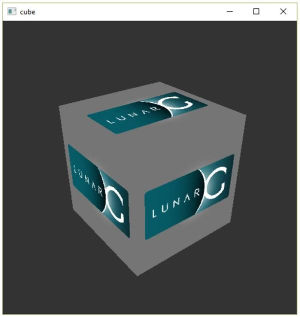
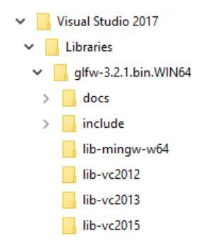
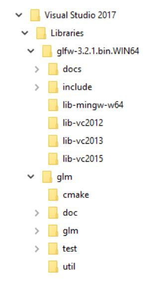
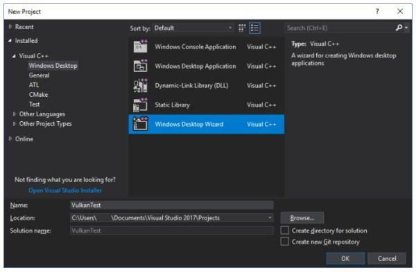
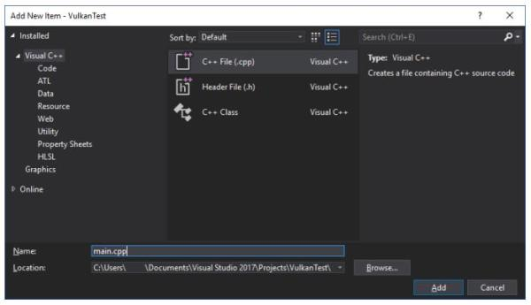
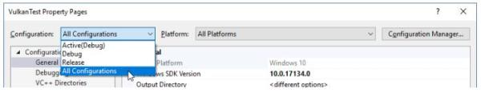
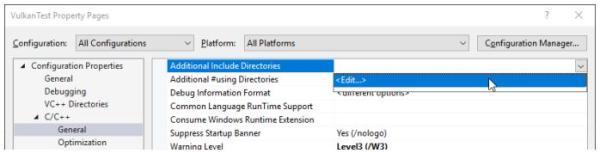
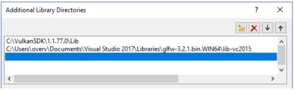
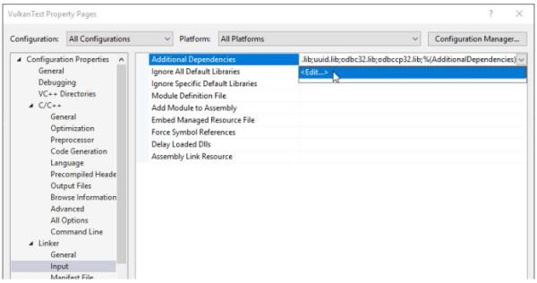
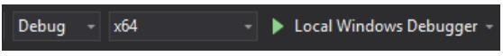

序
下文来自仓颉输入法的发明人朱邦复先生，放在这里的原因是本人认为Vulkan之于汇编有着相似的地位。
一、结构基础
物质文明之有今天的成就，是因为人类掌握了物质的基本结构。物质的种类无穷，但是却都由基本元素交互组成，只要根据一定的法则，就能得到一定的结果。
计算机技术虽然日新月异，应用软件的变化也无止无尽，而其基本因子却非常有限。各种微处理器的汇编语言，正是计算机软件的基础结构，任何要通过软件以完成的动作，都是经由汇编语言的指令群，逐步执行的。
因为计算机结构复杂，各种任务分工极精，即使是一位资深的高级程序员，终其生也不过局限在若干固定的程序中钻研，很难以宏观的立场认知全貌。再加上市场压力，局外人莫名其奥妙，局中人又忙得不可开交，所以还没有任何人能作出全盘的评估。
汇编语言首先成为被误解的牺牲者，包括应用它的系统工程师在内，都一致认为它「难学难用」，（中文也是一种组合形式的应用，其所组合者是人的概念。无独有偶，人们在不求甚解之余，都视之为畏途。）事实上大谬不然，现在是科学挂帅，而科学的精义就在于系统的分类和应用。问题是我们能不能归纳出一些学习、应用的法则，将组合的过程化繁为简，以符合各种应用范畴。
二、个人体验
我个人对此感受极为深切，我原是个十足的外行，1978年第一次接触计算机，曾以不到两周的时间，就学会计算机操作，并应用「培基语言」设计完成"仓颉输入"程序。当时我认为培基语言易学易用，是计算机上最好的工具。
后来，我开始用培基语言设计"仓颉向量组字"程序，每秒可生成两个字，当时与我合作的宏碁公司建议我采用汇编语言，他们说组字程序速度要快，培基语言不能胜任。如改用汇编语言，效率可提高十倍，由此开始了我与汇编语言的不解之缘。1979年９月我们正式推出了由国人自行设计、具有完整的计算机功能、可运用数万中文字的"天龙中文计算机"。
宏碁公司动用了三位资深工程师，采用 Z80 MCZ系统，以六个月的时间完成了向量组字及系统程序，记忆空间占60KB，处理速度每秒约组成30字。
这是我首次发现到汇编语言的威力，深究之下，才理解到计算机的全部工作原理。简单说来，汇编语言就是组合计算机所有功能的控制指令，利用它，就可以直接控制计算机。
其它高级语言，只是让人省事，用一些格式化的手续，把人的想法化为过程的指令，这种情形就相当于为了迁就开车的人，建了密如蛛网的高速公路。本来走路只要几分钟就可到达的地方，以车代步的结果，反而需要耗费半个小时。
1980年，我决定自己动手，又重新设计了一套字数较多，字形较美观的组字程序。只用了三个月的时间，结果不仅记忆空间缩小了三分之一，速度也快了十倍，达到每秒 300字。这个产品，就是1苹果机上用的「汉卡」。
1983年，再经分析，我发现以往写的程序很不精简，技术也不成熟。我坚信中文字形在计算机上的应用，将是中国文化存亡兴衰的根本因素，不仅值得投注自己的时间及精力，且也有此必要。所以我又拋掉了一切，重头设计，加入更多的变化参数，并根据人的辨识原理，设计成第三代至第五代等多种字形产生器。每一代之间，速度都明显地提高，功能也不断加强。在这样一再重复的摸索中，尝试了各种可行的途径，充份认识了汇编语言的特性及长处。
由于汇编语言灵活无比的特性，我发现它就如同画家的画笔一般，只为了牟利，可以用它画成各种廉价速成的商品；一旦投入自己的理想与心智，画笔就不再只是一枝笔，而成为人心与外界的界面，画出的作品立时升华成为艺术，进入一个更高的境界！
1985年，我再次重新设计规划，采用人的智能原则，把人写字、认字的观念化为数据结构，程序只是用来阐释数据、控制计算机的界面。该字库的字形可做到无级次放大缩小，字体、字型皆能任意变化 (每字可以产生数亿种变形) 。而且除了现今各种字典已收的六万余字外，还可以组成完全符合中文规则的新字六百万个，足敷未来新时代新观念的发挥应用。
不仅如此，组字速度又提高了，每秒可以组成 30*30的字形两千个！当然现在用的是15MHZ 80286 ，比以往的4.75 MHZ的Z80 已经快了近六倍。但是，改良后的新程序，其功能的增加，处理过程的繁杂性已远非当年可比。
这些成果，用了很多特殊的数据结构技巧，不可能经由高级语言来完成。既然用汇编语言所制作的程序能一再大幅度地改进，这就说明了汇编语言的弹性极大，效率相去千里。如不痛下苦功钻研，程序写完，能执行就算了事，又怎能领悟其中奥妙？
所以，我并不认为汇编语言只是一种程序语言而已，它是一种创造艺术品的工具，它能赋与无知无觉的电子机器一种「生命」，由无知进而有知，由有知而生智能。通过对汇编语言的研究探索，我整理出一些规律，写成这本书，以便于理解及应用。但是，要真正将汇编语言发展成为艺术，尚有待青年朋友们继续努力，在这个信息时代，开拓出一片崭新的天地。
无意义的音符能编成美妙的音乐，无规律的色彩可幻化为缤纷的世界，为什么计算机的机器指令，不能架构出信息的理性天地？
这就是艺术，作为艺术家，就必须奉献出自己的心血，以真、善、美为最高境界。
要达到这种目的，就要认真的作好准备动作，再一步一步地追求下去。
三、利人与利己
任何一种商业产品，当然是以利益为先，利己后而利人。如果是艺术品创造，则刚刚相反，唯有能忽视己利，沥血泣心地探索，虔诚狂热地奉献，才会迸发出人性的光辉，创造不朽的杰作。
艺术家之伟大，在于此，人性之可贵，在于此。
对组合程序语言，有人视为商品，将写作技巧当作专利，轻不示人。相信这也是迄今尚无一本象样的参考书籍之根本原因，我买了不少这类书，但书中除了指令介绍以及编程、侦错的手续外，完全没有技巧的说明，好象懂得指令就可以把程序写好一般。当我自己下了不少功夫，得到了一些心得，再回过头来看那些参考书，才发现连作者本人所举的例子，都是平铺直叙，毫无技巧可言。
（更正，在序言中我曾提到有本最近出版的"禅－汇编语言"，是唯一的例外，希望读者不要错过。）
多年来，我一直想写本有关汇编语言写作技巧的书，可惜都得不到机会。这次，为了实现「整合系统」革命性的计划，所有招收的工程师，一概从头训练。由于没有可用的教材，只好自己动手，于是初步有了讲义，再经修改，便成此书。
我认为，既然汇编语言是种艺术，我们不仅不应该藏私自珍，而且要相互探讨，交流切磋，以期发扬光大。
不过，技术本身与利用该技术所创造的产品却不能混为一谈，产品是借以谋生的工具，能够生存，大家才有研究发展的机会，也才能把成果贡献给社会。如果国人不尊重别人的产品权利，只是互相抄袭盗用，或能受惠于一时，但影响所及，人人贪图现成，不事发展，则观念停顿，技术落伍，其后果不堪设想。
前言
关于本书
本书主要介绍了Vulkan的图形和计算API。Vulkan是Khronos组织(该组织以OpenGL闻名)发布的新一代图形API。这一新的API可以更好地描述应用程序所需的运算，并且相比于OpenGL和Direct3D，拥有更好的性能，更轻便的驱动程序。Vulkan在设计上类似于Direct3D 12和Metal，但比之后两者，Vulkan是跨平台的，可以在Windows，Linux和Android平台上使用。
使用Vulkan不是没有缺点，更精准的控制，意味着更繁琐的细节。我们需要在应用程序中做更多的工作，这包括设置初始时使用的帧缓冲，以及对缓冲和纹理图像的内存管理。
Vulkan并非适合所有人。它是为追求计算机图形性能极限的狂热分子设计的。如果你对游戏开发更感兴趣，或许OpenGL和Direct3D更适合你，它们在短期内仍然会是主流，并且目前还有大量的设备尚未支持Vulkan。除此之外，也可以使用Unreal Engine或Unity这类引擎，它们可以通过封装好的底层完全透明地使用Vulkan。
下面是学习本书的一些先决条件：
-
支持Vulkan的显卡以及驱动程序(NVIDIA，AMD，Intel)
-
C++编程经验(熟悉RAII，初始化列表)
-
支持C++11的编译器(Visual Studio 2013+，GCC 4.8+)
-
三维计算机图形学基础
本书不假设读者了解OpenGL和Direct3D，但需要读者了解基本的三维计算机图形学知识。
读者可以使用C来替换C++，但这样做需要读者对我们的代码进行大量修改。我们的代码使用了类，RAII等C++特性。
电子书
本书有两种格式的电子版提供：
教程结构
我们首先简要介绍Vulkan的工作原理，然后介绍如何使用Vulkan在屏幕上绘制一个三角形。接着，我们介绍如何配置开发环境来使用Vulkan SDK，在这里，我们还引入了GLM库来进行线性代数运算，引入了GLFW库来进行窗口的创建。教程包含了在Windows上使用Visual Studio的配置方法，在Ubuntu上使用GCC的配置方法。
之后，我们将会实现Vulkan绘制三角形的必要部分。每一章节大致遵循下面的结构：
-
介绍新概念，以及它的用途
-
将与之相关的API调用集成到我们的程序中去
-
封装辅助函数
尽管章节的组织有一定顺序，但对于部分章节，完全可以独立阅读，作为一个Vulkan特性的介绍。也就是说，除了作为教程外，本书可以作为Vulkan的一个参考手册，当作字典来查询。书中所有Vulkan函数和类型都被超链接到了Vulkan规范，可以通过鼠标点击，获取它们更加详细的信息。由于Vulkan是一个非常新的API，它的规范文档可能存在许多不足，读者可以提交反馈给Khronos的Github仓库。
之前提到，为了更精准地控制硬件，使用Vulkan需要处理大量细节。这造成许多很基础的操作也需要编写很多代码才能完成。为了简化这类操作的处理，我们会编写一些辅助函数。
每一章节也都包含了总结，以及到此为止的完整代码的超链接。如果读者存在疑惑的地方，可以参考这些代码。这些代码经过了多个不同厂商的显卡测试。
Vulkan是一个非常新的图形API，有关它的最佳实践尚未建立。如果你对本书有任何建议，可以提交反馈到Github仓库。
完成使用Vulkan绘制三角形的程序后，我们将对其进行扩展，引入线性变换，纹理和三维模型。
如果读者在之前使用过图形API，应该知道在几何体显示到屏幕之前，需要经过很多步骤。使用Vulkan同样是这样，但这些步骤很容易理解，并且每一步都不多余。绘制三维模型采取的步骤并不比绘制三角形所采取的步骤多很多。
如果在实践本书的过程中遇到问题，读者可以先查看本书的FAQ，是否存在关于这一问题的解决方案，没有的话，欢迎在相关章节进行评论来寻求帮助。
准备好体验高性能次世代图形API了吗？让我们开始吧！
概述
本章节首先简要介绍了Vulkan，以及它所解决的问题。然后，我们将会看到如何使用Vulkan来绘制一个三角形，建立Vulkan的基本使用思路。最后，我们将会介绍Vulkan API的基本结构和使用方式。
Vulkan起源
Vulkan是作为一个跨平台的图形API设计的。以往许多图形API采用固定功能渲染管线设计，应用程序按照一定格式提交顶点数据，配置光照和着色选项。
随着显卡架构逐渐成熟，提供了越来越多的可编程功能，这些功能被集成到原有的API中。造成驱动程序要做的工作越来越复杂，应用程序开发者要处理的兼容性问题也越来越多。随着移动浪潮到来，人们对移动GPU的要求也越来越高，但以往的图形API不能够进行更加精准地控制来提升效率，对多线程的支持也非常不足，导致没有发挥出图形硬件真正的潜力。
由于没有历史包袱，Vulkan完全按照现代图形架构设计，提供了更加详细的API给开发者，大大减少了驱动程序的开销，允许多个线程并行创建和提交指令，使用标准化的着色器字节码，将图形和计算功能进行统一。
画一个三角形
现在，让我们来看下如何使用Vulkan绘制三角形。这里用到的所有概念会在下一章节进行详细地说明。
步骤1：实例和物理设备选择
我们的应用程序是通过VkInstance来使用Vulkan API的。应用程序创建VkInstance后，就可以查询Vulkan支持的硬件，选择其中一个或多个VkPhysicalDevices进行操作。我们可以通过查询设备属性，选择一个适合我们的设备。
步骤2：逻辑设备和队列族
选择完合适的硬件设备后，我们需要使用更详细的VkPhysicalDevice特性(比如多视口，64位浮点)来创建一个逻辑设备VkDevice。还需要指定我们想要使用的队列族。Vulkan将诸如绘制指令、内存操作提交到VkQueue中，进行异步执行。队列由队列族分配，每个队列族支持一个特定操作集合。比如，图形，计算和内存传输操作可以使用独立的队列族。队列族可以作为物理设备选择时的一个参考。比如，一个支持Vulkan的设备可能没有提供任何图形功能，但对于支持Vulkan的显卡设备而言，支持所有队列操作。
步骤3：窗口表面和交换链
如果不是进行离屏渲染，通常我们需要创建一个窗口来显示渲染的图像。这一工作可以通过原生平台的窗口API或像GLFW或SDL这样的库来完成，在这里，我们使用的是GLFW，有关GLFW的更多信息，我们会在下一章介绍。
我们还需要两个组件才能完成窗口渲染：窗口表面(VkSurfaceKHR)和交换链(VkSwapChainKHR)。可以注意到这两个组件都有一个KHR后缀，这表示它们属于Vulkan扩展。Vulkan API本身是完全平台无关的，需要我们使用WSI(Window System Interface，窗口系统接口)扩展与原生的窗口管理器进行交互。表面(Surface)是一个跨平台抽象，通常它是由原生窗口系统句柄作为参数实例化得到。不过，这一部分工作，GLFW已经帮我们处理了，所以不用我们关心。
交换链是一个渲染目标集合。它可以保证我们正在渲染的图像和当前屏幕图像是两个不同的图像。这可以确保显示出来的图像是完整的。每次绘制一帧时，可以请求交换链提供一张图像。绘制完成后，图像被返回到交换链中，在之后某个时刻，图像被显示到屏幕上。渲染目标数量和图像显示到屏幕的时机依赖于显示模式。常用的显示模式有双缓冲(vsync，垂直同步)和三缓冲。我们将在创建交换链章节讨论这些问题。
步骤4：图像视图和帧缓冲
从交换链获取图像后，还不能直接在图像上进行绘制，需要将图像先包装进VkImageView和VkFramebuffer中去。一个图像视图可以引用图像的特定部分，一个帧缓冲可以引用图像视图作为颜色，深度和模板目标。交换链中可能有多个不同的图像，我们可以预先为它们每一个都创建好图像视图和帧缓冲，然后在绘制时选择对应的那个。
步骤5：渲染流程
渲染流程描述了渲染操作使用的图像类型，图像的使用方式，图像的内容如何处理。对于我们这个绘制三角形的程序，我们使用了一张图像作为颜色目标，在执行绘制操作前清除整个图像。渲染流程只描述了图像的类型，图像绑定是通过VkFramebuffer完成的。
步骤6：图形管线
Vulkan的图形管线可以通过VkPipeline对象建立。它描述了显卡的可配置状态，比如视口大小和深度缓冲操作，以及使用VkShaderModule对象的可编程状态。VkShaderModule对象由着色器字节码创建而来。驱动程序知道哪些渲染目标被图形管线使用。
Vulkan与之前的图形API的一个最大不同是几乎所有图形管线的配置都需要提前完成。这意味着如果我们想要使用另外一个着色器或者顶点布局，需要重新创建整个图形管线。显然效率很低，这迫使我们提前创建出所有我们需要的图形管线，在需要时直接使用已经创建好的图形管线。图形管线只有很少一部分配置可以动态修改，比如视口大小和清除颜色。图形管线的所有状态也需要显式地描述，比如，不存在默认的颜色混合状态。
这样做的好处类似于预编译相比于即时编译，驱动程序可以有更大的优化空间，并且以图形管线为切换单位，渲染效果的预期也变得十分容易，不用担心切换时，遗漏某个微小的设置，造成结果的巨大差异。
步骤7：指令池和指令缓冲
之前提到，Vulkan的许多操作需要提交到队列才能执行。这些操作首先被记录到一个VkCommandBuffer对象中，然后提交给队列。VkCommandBuffer对象由一个关联了特定队列族的VkCommandPool分配而来。为了绘制三角形，我们需要记录下列操作到VkCommandBuffer对象中去：
-
开始渲染
-
绑定图形管线
-
绘制三角形
-
结束渲染
由于帧缓冲绑定的图像依赖于交换链给我们的图像，我们可以提前为每个图像建立指令缓冲，然后在绘制时，直接选择对应的指令缓冲使用。当然在每一帧记录指令缓冲也是可以的，但这样做效率很低。
步骤8：主循环
将绘制指令包装进指令缓冲后，主循环变得非常直白。我们首先使用vkAcquireNextImageKHR函数从交换链获取一张图像。接着使用vkQueueSubmit函数提交图像对应的指令缓冲。最后，使用vkQueuePresentKHR函数将图像返回给交换链，显示图像到屏幕。
提交给队列的操作会被异步执行。我们需要采取同步措施比如信号量来确保操作按正确的顺序执行。绘制指令的执行必须在获取图像之后，否则，可能会出现读写冲突，屏幕正在读取图像数据的同时，绘制操作在进行绘制操作，造成屏幕读取显示的数据并非来自同一帧。同样，vkQueuePresentKHR函数调用需要在绘制完成后进行。
总结
本章节通过绘制一个简单的三角形来使读者建立Vulkan的基本使用思路。通常，一个真正实用的程序会包含更多的步骤，比如分配顶点缓冲，创建Uniform缓冲，上传纹理图像等等。但为了降低学习难度，我们从最简单的形式开始，逐步复杂化。
对于绘制一个三角形，我们需要采取的步骤包括：
-
创建一个VkInstance
-
选择一个支持Vulkan的图形设备(VkPhysicalDevice)
-
为绘制和显示操作创建VkDevice和VkQueue
-
创建一个窗口，窗口表面和交换链
-
将交换链图像包装进VkImageView
-
创建一个渲染层指定渲染目标和使用方式
-
为渲染层创建帧缓冲
-
配置图形管线
-
为每一个交换链图像分配指令缓冲
-
从交换链获取图像进行绘制操作，提交图像对应的指令缓冲，返回图像到交换链
看起来步骤非常多，但其实每一步都非常简单。在接下来的章节，我们会对每一步进行非常详细地说明。如果你对程序中的某一步感到困惑，可以回来参考一下本章节。
API概念
本小节对Vulkan API的结构进行简要的介绍。
编码约定
Vulkan的所有函数、枚举和结构体都被定义在vulkan.h中，我们可以在Vulkan SDK中找到这一头文件。在下一章节，我们会介绍如何安装Vulkan SDK。
Vulkan API的函数都带有一个小写的vk前缀，枚举和结构体名带有一个Vk前缀，枚举值带有一个VK_前缀。Vulkan对结构体非常依赖，大量函数的参数由结构体提供。比如，Vulkan创建对象的一般形式如下：
VkXXXCreateInfo createInfo = {};
createInfo.sType = VK_STRUCTURE_TYPE_XXX_CREATE_INFO;
createInfo.pNext = nullptr;
createInfo.foo = ...;
createInfo.bar = ...;
VkXXX object;
if (vkCreateXXX(&createInfo, nullptr, &object) != VK_SUCCESS) {
std::cerr << "failed to create object" << std::endl;
return false;
}
Vulkan的许多结构体需要我们通过设置sType成员变量来显式指定结构体类型。结构体的pNext成员可以指向一个扩展的结构体，在本教程，我们不使用它，它被设置为nullptr。Vulkan中创建和销毁对象的函数都有一个VkAllocationCallbacks参数，可以被用来自定义内存分配器，在这里，我们不使用它，将其设置为nullptr。
几乎所有Vulkan都会返回一个VkResult来表示调用的执行情况，它的值要么是VK_SUCCESS，要么是一个错误代码。Vulkan规范文档描述了这些函数返回的错误代码的意义。
校验层
之前提到，Vulkan的设计目标是高性能、低驱动程序开销。所以，默认情况下，它提供的错误检测和调试功能非常有限。驱动程序会在发生错误时直接崩溃，而不是返回一个错误代码。这可能导致对于某种显卡可以工作，不会崩溃，但对于其它显卡无法工作，驱动程序崩溃。
可以通过Vulkan的校验层(Validation layers)特性来进行一定的错误检查措施。校验层是一段被插入在Vulkan API和驱动程序之间的代码，可以对Vulkan API函数的参数进行检查，跟踪内存分配。我们可以在开发期开启校验层，然后在发布程序时关闭校验层，减少性能损失。校验层可以完全自己编写，但为了方便，我们的教程直接使用了Vulkan SDK提供的一组校验层。我们通过注册的回调函数来接受来自校验层的调试信息。
由于Vulkan的每个操作都要显式定义，加之校验层的使用，调试使用Vulkan的程序要比调试使用OpenGL和Direct3D的程序轻松太多。
接下来让我们配置开发环境，开始我们的Vulkan编程之旅吧！
开发环境
在本章节，我们将介绍如何配置Vulkan SDK和一些非常有用的库。所有在这里用到的工具除了编译器外，适用于Windows，Linux和MacOS三个平台，但它们的安装方法可能在不同平台会有所不同，所以在这里我们按平台分别描述如何配置它们。
Windows
我们这里使用Visual Studio 2017作为Windows平台的开发环境，当然使用Visual Studio 2013或2015应该也不会有任何问题，只是配置方法可能会略微不同。
Vulkan SDK
Vulkan SDK是使用Vulkan开发应用程序必不可少的组件。它包含了Vulkan API的头文件，一个校验层实现，调试工具和Vulkan函数加载器。Vulkan函数加载器类似OpenGL的GLEW可以在运行时查询驱动程序支持的Vulkan API函数。
Vulkan SDK可以从LunarG的网站上免费下载。
安装Vulkan SDK后，我们需要验证下我们的显卡和驱动程序是否支持Vulkan。这可以通过运行Vulkan SDK自带的cube.exe来完成，我们可以在Vulkan SDK安装目录下的Bin目录下找到它，运行后，可以看下到下面的窗口：

如果没有看到这个窗口，而是出现了一条错误消息，可以尝试更新显卡的驱动程序到最新版本，再次尝试，如果仍然出现错误消息，可以在显卡官网查询自己的显卡是否支持Vukan。
在Bin目录下还有一个非常有用的程序：glslangValidator.exe。它可以将GLSL代码编译为字节码。我们会在着色器模块章节，对它进行更为详细地说明。除此之外，Bin目录下还包含了Vulkan函数加载器和校验层的二进制文件，它们的库文件则位于Vulkan SDK的Lib目录下。
Vulkan SDK的Documentation目录包含了Vulkan SDK的离线文档和完整的Vulkan规范文档。最后是Vulkan SDK的Include目录，它包含了Vulkan API的头文件。除此之外，还有很多文件和目录，但对于我们的教程来说，并没有直接用到它们，所以就不再一一介绍。
GLFW
之前提到，Vulkan是一个平台无关的图形API，它没有包含任何用于创建窗口的功能。为了跨平台和避免陷入Win32的窗口细节中去，我们使用GLFW库来完成窗口相关操作，GLFW库支持Windows，Linux和MacOS。当然，还有其它一些库可以完成类似功能，比如SDL。但除了窗口相关处理，GLFW库对于Vulkan的使用还有其它一些优点。
读者可以再GLFW的官方网站上免费下载到最新版本的GLFW库。在本教程，我们使用64位版本的GLFW库，但32位版本也是可以的，只是编译使用Vulkan的应用程序时也需要链接到32位版本的Vulkan API，也就是链接到Vulkan SDK下Lib32目录下的库。下载GLFW后，将它解压缩到一个合适的位置。这里，我们将它解压到Visual Studio目录下的Libraries目录中。不要纠结于为什么解压后不存在libvc-2017目录，我们的Visual Studio 2017是完全兼容lib-vc2015的。

GLM
和DirectX 12不同，Vulkan没有包含线性代数库，我们需要自己找一个。GLM就是一个我们需要的线性代数库，它经常和OpenGL一块使用。
GLM是一个只有头文件的库，我们只需要下载它的最新版，然后将它放在一个合适的位置，就可以通过包含头文件的方式使用它。

配置Visual Studio
现在，我们可以创建一个基本Visual Studio工程来验证我们安装的依赖是否可以正常工作。
首先，启动Visual Studio，然后选择Windows Destop Wizard。

我们选择使用Console Application (.exe)应用程序类型，这样做我们就可以直接将调试信息输出到控制台窗口上。另外，我们将Empty Project选项打勾来阻止Visual Studo添加模板代码。
创建项目后，我们添加一个C++源代码文件到项目中。


下面的代码是这个C++源文件的内容。源代码的内容暂时不需要理解，我们现在只是为了验证我们的依赖是否配置正确，源代码的内容，我们会在后面的章节详细说明。
#define GLFW_INCLUDE_VULKAN
#include <GLFW/glfw3.h>
#define GLM_FORCE_RADIANS
#define GLM_FORCE_DEPTH_ZERO_TO_ONE
#include <glm/vec4.hpp>
#include <glm/mat4x4.hpp>
#include <iostream>
int main() {
glfwInit();
glfwWindowHint(GLFW_CLIENT_API, GLFW_NO_API);
GLFWwindow* window = glfwCreateWindow(800, 600, "Vulkan window", nullptr, nullptr);
uint32_t extensionCount = 0;
vkEnumerateInstanceExtensionProperties(nullptr,
&extensionCount, nullptr);
std::cout << extensionCount << " extensions supported" << std::endl;
glm::mat4 matrix;
glm::vec4 vec;
auto test = matrix * vec;
while(!glfwWindowShouldClose(window)) {
glfwPollEvents();
}
glfwDestroyWindow(window);
glfwTerminate();
return 0;
}
现在，让我们开始配置项目属性，选择All Configurations，让设置对Debug和Release模式都有效。

打开C++ -> General -> Additional Include Directories，点击Additional Include Directories的<Edit...>下拉选项。

添加Vulkan，GLFW和GLM的头文件目录：

接着，打开Linker -> General：
添加Vulkan和GLFW的库目录：

打开 Linker -> Input，点击Additional Dependencies的<Edit...>下拉选项：

添加Vulkan和GLFW的库文件：
现在可以关闭项目属性对话框了。如果一切顺利，我们的代码编辑器里已经没有任何高亮出的错误代码了。
最后，确认我们的代码在64位模式下编译：

然后，按下F5编译运行，你就会看到下面的窗口：

控制台窗口显示的扩展数应该是非0的。至此，我们就配置好了Vulkan的开发环境！
Linux
对于Linux平台的配置，我们使用Ubuntu作为演示，其它Linux平台的配置方法应该是类似的。我们使用二进制包来安装Vulkan SDK，使用GCC 4.8以上版本作为编译器，使用CMake和make作为构建系统。
Vulkan SDK
Vulkan SDK是使用Vulkan开发应用程序必不可少的组件。它包含了Vulkan API的头文件，一个校验层实现，调试工具和Vulkan函数加载器。Vulkan函数加载器类似OpenGL的GLEW可以在运行时查询驱动程序支持的Vulkan API函数。
Vulkan SDK可以从LunarG的网站上免费下载。

打开终端，调整当前目录到我们下载的Vulkan SDK安装文件所在目录，然后使用下面的代码运行它：
chmod +x vulkansdk-linux-x86_64-xxx.run
./vulkansdk-linux-x86_64-xxx.run
安装文件运行后会将Vulkan SDK的所有文件导出到当前目录的VulkanSDK文件夹中。我们可以自己将VulkanSDK文件夹移动到合适的位置。
Vulkan SDK的根目录有一个build_examples.sh脚本，执行它构建Vulkan SDK的示例程序需要我们安装XCB库，以及一些X窗口的开发文件，可以通过在终端运行下面的代码来安装这些所需的库：
sudo apt install libxcb1-dev xorg-dev
然后，我们就可以执行build_examples.sh了：
./build_examples.sh
如果编译成功，在./examples/build/下就会出现一个cube可执行文件，运行它，可以看到下面的画面：

如果没有看到，而是出现了一条错误消息，可以尝试更新显卡的驱动程序到最新版本，再次尝试，如果仍然出现错误消息，可以在显卡官网查询自己的显卡是否支持Vukan。
GLFW
之前提到，Vulkan是一个平台无关的图形API，它没有包含任何用于创建窗口的功能。为了跨平台和避免陷入X11的窗口细节中去，我们使用GLFW库来完成窗口相关操作，GLFW库支持Windows，Linux和MacOS。当然，还有其它一些库可以完成类似功能，比如SDL。但除了窗口相关处理，GLFW库对于Vulkan的使用还有其它一些优点。
这里，由于Vulkan需要较新版本的GLFW才能支持。所以，我们使用源代码来编译安装GLFW。读者可以从GLFW的官方网站免费下载到GLFW的最新源码包。下载完成后，我们将源码包解压，使用终端进入解压的源码所在的文件夹，执行下面的代码生成makefile文件，然后编译GLFW：
cmake .
make
可能会出现Could NOT find Vulkan的警告信息，可以放心地忽略掉它。编译完成后，使用下面的代码将GLFW安装到系统的库目录中：
sudo make install
GLM
和DirectX 12不同，Vulkan没有包含线性代数库，我们需要自己找一个。GLM就是一个我们需要的线性代数库，它经常和OpenGL一块使用。
GLM是一个只有头文件的库，我们只需要下载它的最新版，然后将它放在一个合适的位置，就可以通过包含头文件的方式使用它。
这里我们直接在终端使用下面的代码安装它：
sudo apt install libglm-dev
配置makefile文件
现在，我们已经安装完了所有的依赖项，可以开始配置应用程序的makefile，验证安装是否正确。
在一个合适的位置新建一个叫做VulkanTest的文件夹，然后在文件夹里创建包含下面代码的main.cpp源代码文件。
#define GLFW_INCLUDE_VULKAN
#include <GLFW/glfw3.h>
#define GLM_FORCE_RADIANS
#define GLM_FORCE_DEPTH_ZERO_TO_ONE
#include <glm/vec4.hpp>
#include <glm/mat4x4.hpp>
#include <iostream>
int main() {
glfwInit();
glfwWindowHint(GLFW_CLIENT_API, GLFW_NO_API);
GLFWwindow* window = glfwCreateWindow(800, 600, "Vulkan
window", nullptr, nullptr);
uint32_t extensionCount = 0;
vkEnumerateInstanceExtensionProperties(nullptr,
&extensionCount, nullptr);
std::cout << extensionCount << " extensions supported" << std::endl;
glm::mat4 matrix;
glm::vec4 vec;
auto test = matrix * vec;
while(!glfwWindowShouldClose(window)) {
glfwPollEvents();
}
glfwDestroyWindow(window);
glfwTerminate();
return 0;
}
源代码的内容暂时不需要理解，我们现在只是为了验证我们的依赖是否配置正确，源代码的内容，我们会在后面的章节详细说明。
接着，我们需要编写makefile来编译源代码。这里假设读者具有一定makefile使用经验，知道makefile的变量和规则的用法。如果没有，也可以从本教程中快速学习这些知识。
我们首先定义一些变量来简化makefile编写。VULKAN_SDKPATH变量存放了Vulkan SDK的x86_64目录的位置：
VULKAN_SDK_PATH = /home/user/VulkanSDK/x.x.x.x/x86_64
读者应该替换上面代码的路径为自己Vulkan SDK的实际路径。接着，我们定义CFLAGS变量来指定编译选项：
CFLAGS = -std=c++11 -I$(VULKAN_SDK_PATH)/include
上面的代码表示使用C++ 11来编译源代码，将Vulkan SDK的包含目录加入编译器的包含目录搜索路径中。
然后，定义LDFLAGS变量来指定链接选项：
LDFLAGS = -L$(VULKAN_SDK_PATH)/lib `pkg-config --static --libs glfw3` -lvulkan
上面的代码将Vulkan SDK的库路径加入链接器的库搜索路径中，链接了Vulkan SDK的vulkan库，使用pkg-config命令取得了glfw静态链接选项。 现在可以开始定义编译VulkanTest的规则了：
VulkanTest: main.cpp
g++ $(CFLAGS) -o VulkanTest main.cpp $(LDFLAGS)
验证规则是否正确，可以将上面的代码保存为Makefile文件，然后使用终端在Makefile文件所在目录执行make命令。如果一切顺利，会生成一个VulkanTest可执行文件。
现在，我们定义另外两个规则，test和clean，前一个规则用于执行生成的可执行文件，后一个规则用于清除生成的可执行文件：
.PHONY: test clean
test: VulkanTest
./VulkanTest
clean:
rm -f VulkanTest
验证规则能否执行后，读者可能会发现make clean工作的非常好，但make test却产生了下面的错误信息：
./VulkanTest: error while loading shared libraries:
libvulkan.so.1: cannot open shared object file: No such file or directory
这是因为libvulkan.so没有被安装在系统的库目录，无法被VulkanTest加载。我们可以通过LD_LIBRARY_PATH环境变量显式指定库目录来解决这个问题：
test: VulkanTest
LD_LIBRARY_PATH=$(VULKAN_SDK_PATH)/lib ./VulkanTest
现在make test应该可以成功执行VulkanTest了。
test: VulkanTest
LD_LIBRARY_PATH=$(VULKAN_SDK_PATH)/lib\
VK_LAYER_PATH=$(VULKAN_SDK_PATH)/etc/explicit_layer.d\
./VulkanTest
至此，我们的Makefile文件已经编写完毕了，它的所有内容如下：
VULKAN_SDK_PATH = /home/user/VulkanSDK/x.x.x.x/x86_64
CFLAGS = -std=c++11 -I$(VULKAN_SDK_PATH)/include
LDFLAGS = -L$(VULKAN_SDK_PATH)/lib `pkg-config --static --libs glfw3` -lvulkan
VulkanTest: main.cpp
g++ $(CFLAGS) -o VulkanTest main.cpp $(LDFLAGS)
.PHONY: test clean
test: VulkanTest
LD_LIBRARY_PATH=$(VULKAN_SDK_PATH)/lib\
VK_LAYER_PATH=$(VULKAN_SDK_PATH)/etc/ex plicit_layer.d\
./VulkanTest
clean:
rm -f VulkanTest
读者可以将刚刚配置的Makefile文件作为一个模板在以后使用。
现在，让我们花点实践浏览下Vulkan SDK目录，在x86_64/bin目录下还有一个非常有用的程序：glslangValidator。它可以将GLSL代码编译为字节码。我们会在着色器模块章节，对它进行更为详细地说明。除此之外，Bin目录下还包含了Vulkan函数加载器和校验层的二进制文件，它们的库文件则位于Vulkan SDK的Lib目录下。
Vulkan SDK的Doc目录包含了Vulkan SDK的离线文档和完整的Vulkan规范文档。最后是Vulkan SDK的Include目录，它包含了Vulkan API的头文件。除此之外，还有很多文件和目录，但对于我们的教程来说，并没有直接用到它们，所以就不再一一介绍。
至此，我们已经做好开始Vulkan探险之旅的准备！
MacOS
这里假定读者使用Xcode和Homebrew包管理器。另外还需要我们的MacOS版本在10.11以上，显卡设备支持Metal API。
Vulkan SDK
Vulkan SDK是使用Vulkan开发应用程序必不可少的组件。它包含了Vulkan API的头文件，一个校验层实现，调试工具和Vulkan函数加载器。Vulkan函数加载器类似OpenGL的GLEW可以在运行时查询驱动程序支持的Vulkan API函数。
Vulkan SDK可以从LunarG的网站上免费下载。
Vulkan SDK的MacOS版本是通过MoltenVK实现的，并非原生实现，也就是说MoltenVK作为一个中间层将Vulkan API调用转换为Metal调用。这也使得我们可以直接使用Metal的调试功能进行调试。
下载Vulkan SDK后，将它解压到一个合适的位置，在解压后的目录中的Applications，可以找到一些Vulkan SDK的演示程序，运行其中的可执行文件cube，你将会看到下面的窗口：
GLFW
之前提到，Vulkan是一个平台无关的图形API，它没有包含任何用于创建窗口的功能。为了跨平台和避免陷入窗口操作相关的细节中去，我们使用GLFW库来完成窗口相关操作，GLFW库支持Windows，Linux和MacOS。当然，还有其它一些库可以完成类似功能，比如SDL。但除了窗口相关处理，GLFW库对于Vulkan的使用还有其它一些优点。
我们使用Homebrew包管理器来安装GLFW库。GLFW的3.2.1稳定版目前还尚未完全支持Vulkan，所以我们使用下面的代码安装glfw3包的最新版本：
brew install glfw3 --HEAD
GLM
Vulkan没有包含线性代数库，我们需要自己找一个。GLM就是一个我们需要的线性代数库，它经常和OpenGL一块使用。
GLM是一个只有头文件的库，我们只需要下载它的最新版，然后将它放在一个合适的位置，就可以通过包含头文件的方式使用它。
这里我们直接在终端使用下面的代码安装它：
brew install glm
配置Xcode
现在所有的依赖项已经安装完毕，我们可以开始配置一个最基本的用于Xcode的Vulkan项目。
启动Xcode，然后新建一个Xcode项目，选择Application > Command Line Tool项目类型：
接着，选择C++作为项目使用的语言：

现在将下面的代码作为项目的main.cpp源文件的内容：
#define GLFW_INCLUDE_VULKAN
#include <GLFW/glfw3.h>
#define GLM_FORCE_RADIANS
#define GLM_FORCE_DEPTH_ZERO_TO_ONE
#include <glm/vec4.hpp>
#include <glm/mat4x4.hpp>
#include <iostream>
int main() {
glfwInit();
glfwWindowHint(GLFW_CLIENT_API, GLFW_NO_API);
GLFWwindow* window = glfwCreateWindow(800, 600, "Vulkan
window", nullptr, nullptr);
uint32_t extensionCount = 0;
vkEnumerateInstanceExtensionProperties(nullptr,
&extensionCount, nullptr);
std::cout << extensionCount << " extensions supported" << std::endl;
glm::mat4 matrix;
glm::vec4 vec;
auto test = matrix * vec;
while(!glfwWindowShouldClose(window)) {
glfwPollEvents();
}
glfwDestroyWindow(window);
glfwTerminate();
return 0;
}
源代码的内容暂时不需要理解，我们现在只是为了验证我们的依赖是否配置正确，源代码的内容，我们会在后面的章节详细说明。
现在Xcode应该会显示一些诸如库未找到的错误。我们接下来的工作就是解决这些错误。在Project Navigator面板选择我们的项目，然后打开Build Settings标签页，进行下面的操作：
-
将/usr/local/include加入Header Search Paths，这是Homebrew安装头文件的路径，我们安装的glm和glfw3的头文件都在该文件夹下，然后将vulkansdk/macOS/include加入Header Search Paths，vulkansdk为我们安装的Vulkan SDK的目录。这样Xcode就可以找到我们使用的库的头文件。
-
将/usr/local/lib加入Library Search Paths，这是Homebrew安装库文件的路径，我们安装的glm和glfw3的库文件都在该文件夹下，然后将vulkansdk/macOS/lib加入Library Search Paths，vulkansdk为我们安装的Vulkan SDK的目录。这样Xcode就可以找到我们使用的库文件。
设置完成后，看起来像这样(实际内容依赖于我们自己的文件所在的位置)：
现在，点击 Build Phases标签页，添加glfw3和vulkan框架。这里，为了简便，我们添加的是动态库(如果想要使用静态库，可以参考这些库的官方文档)。
-
对于glfw，打开/usr/local/lib目录，可以找到类似libglfw.3.x.dylib形式的文件(x是库的版本号，依赖于我们使用Homebrew下载安装的glfw的版本)。将这个文件拖拽到Linked Frameworks and Libraries标签页即可。
-
对于Vulkan，打开vulkansdk/macOS/lib目录(vulkansdk是我们的Vulkan SDK所在目录)，拖拽libvulkan.1.dylib和libvulkan.1.x.xx.dylib文件到Linked Frameworks and Libraries标签页即可。
完成上面的操作后，更改Copy Files标签页下的Destination为Frameworks，然后清空Subpath文本框，去掉勾选Copy only when installing，点击+号，将所有三个动态库添加进去。
最后，我们需要配置环境变量。在Xcode的工具栏上通过Product > Scheme > Edit Scheme...打开Arguments标签页，添加下面的环境变量：
-
VK_ICD_FILENAMES = vulkansdk/macOS/etc/vulkan/icd.d/MoltenVK_icd.json
-
VK_LAYER_PATH = vulkansdk/macOS/etc/vulkan/explicit_layer.d
完成后，看起来像这样：
至此为止，我们完成了全部设置，可以编译运行项目了，效果如下：

程序输出的日志信息中的扩展数应该是非0的 。 现在，我们已经做好开始Vulkan探险之旅的准备！
基础代码
一般结构
在本章节，我们开始使用Vulkan API编写代码。
#include <vulkan/vulkan.h>
#include <iostream>
#include <stdexcept>
#include <functional>
#include <cstdlib>
class HelloTriangleApplication {
public:
void run() {
initVulkan();
mainLoop();
cleanup();
}
private:
void initVulkan() {
}
void mainLoop() {
}
void cleanup() {
}
};
int main() {
HelloTriangleApplication app;
try {
app.run();
} catch (const std::exception& e) {
std::cerr << e.what() << std::endl;
return EXIT_FAILURE;
}
return EXIT_SUCCESS;
}
代码中，我们首先包含了Vulkan API的头文件，它为我们提供了Vulkan API的函数，结构体和枚举。此外，包含stdexcept和iostream头文件用来报错。包含functional头文件用于资源管理。包含cstdlib头文件用来使用EXITSUCCESS和EXIT_FAILURE宏。
我们将程序本身包装为一个类，将Vulkan对象存储为类的私有成员。我们使用initVulkan函数来初始化Vulkan对象。初始化完成后，我们进入主循环进行渲染操作。mainLoop函数包含了一个循环，直到窗口被关闭，才会跳出这个循环。mainLoop函数返回后，我们使用cleanup函数完成资源的清理。
程序在执行过程中，如果发生错误，会抛出一个带有错误描述信息的std::runtime_error异常，我们在main函数捕获这个异常，并将异常的描述信息打印到控制台窗口。为了处理多种不同类型的异常，我们使用更加通用的std::exception来接受异常。一个比较常见的异常就是请求的扩展不被支持。
接下来的每一章，我们会添加新的成员到我们的类中，然后在initVulkan函数中初始化它们，在cleanup函数中清理它们。
资源管理
和使用malloc函数分配的内存块相同，使用Vulkan API创建的Vulkan对象也需要在不需要它们时显式地被清除。现代C++可以通过<memory>头文件自动地进行资源管理，但在这里，为了让大家更加清晰地理解Vulkan对象地创建和清除，以及它们的生命周期，我们没有使用它，而是手动自己完成资源管理。除此之外，Vulkan的一个核心思想就是通过显式地定义每一个操作来避免出现不一致的现象。
学完本教程后，读者可以通过重载std::shared_ptr来实现自动资源管理。将RAII应用到自己的程序中。但对于学习而言，最好是能清晰地理解每一个细节部分。
Vulkan对象可以直接通过类似vkCreateXXX的函数，或是通过其它对象调用类似vkAllocateXXX的函数创建。当创建的对象不再使用时，使用对应的vkDestroyXXX或vkFreeXXX函数进行清除操作。这些函数的参数对于不同类型的对象通常是不同的，但都具有一个pAllocator参数。我们可以通过这个参数来指定回调函数编写自己的内存分配器。但在本教程，我们没有使用它，将它设置为nullptr。
和GLFW交互
Vulkan可以在完全没有窗口的情况下工作，通常，在离屏渲染时会这样做。但一般而言，还是需要一个窗口来显示渲染结果给用户。接下来，我们要完成的就是窗口相关操作。
首先替换代码中的#include <vulkan/vulkan.h>为：
#define GLFW_INCLUDE_VULKAN
#include <GLFW/glfw3.h>
上面的代码将GLFW库的定义包含进来，而GLFW库会自动包含Vulkan库的头文件。接着，我们添加一个叫做initWindow的函数来初始化GLFW，并在run函数中调用它：
void run() {
initWindow();
initVulkan();
mainLoop();
cleanup();
}
private:
void initWindow() {
}
initWIndow函数首先调用了glfwInit函数来初始化GLFW库，由于GLFW库最初是为OpenGL设计的，所以我们需要显式地设置GLFW阻止它自动创建OpenGL上下文：
glfwWindowHint(GLFW_CLIENT_API, GLFW_NO_API);
窗口大小变化地处理需要注意很多地方，我们会在以后介绍它，暂时我们先禁止窗口大小改变：
glfwWindowHint(GLFW_RESIZABLE, GLFW_FALSE);
接着，我们添加了一个GLFWwindow* window变量存储我们创建的窗口句柄：
window =glfwCreateWindow(800, 600, "Vulkan", nullptr, nullptr);
glfwCreateWindow函数的前三个参数指定了要创建的窗口的宽度，高度和标题。第四个参数用于指定在哪个显示器上打开窗口，最后一个参数与OpenGL相关，对我们没有意义。
硬编码窗口大小不是一个好习惯，所以我们定义了两个常量，以便之后可以方便地修改它们：
const int WIDTH = 800;
const int HEIGHT = 600;
现在，我们地initWindow函数看起来应该像这样：
void initWindow() {
glfwInit();
glfwWindowHint(GLFW_CLIENT_API, GLFW_NO_API);
glfwWindowHint(GLFW_RESIZABLE, GLFW_FALSE);
window = glfwCreateWindow(WIDTH, HEIGHT, "Vulkan", nullptr, nullptr);
}
为了确保我们的程序在没有发生错误和窗口没有被关闭的情况下可以一直运行，我们在mainLoop函数中添加了下面的事件循环：
void mainLoop() {
while (!glfwWindowShouldClose(window)) {
glfwPollEvents();
}
}
上面的代码应该非常直白，每次循环，检测窗口的关闭按钮是否被按下，如果没有被按下，就执行事件处理，否则结束循环。在之后的章节，我们会在这一循环中调用渲染函数来渲染一帧画面。
一旦窗口关闭，我们就可以开始结束GLFW，然后清除我们自己创建的资源，这在cleanup函数中进行：
void cleanup() {
glfwDestroyWindow(window);
glfwTerminate();
}
至此，我们就编写完成了一个可以使用Vulkan API的窗口程序骨架。
本章节代码：
C++：
https://vulkan-tutorial.com/code/00_base_code.cpp
实例
创建一个实例
我们首先创建一个实例来初始化Vulkan库。这个实例指定了一些驱动程序需要使用的应用程序信息。
我们添加了一个createInstance函数调用到initVulkan函数中：
void initVulkan() {
createInstance();
}
添加了一个存储实例句柄的私有成员：
private:
VkInstance instance;
然后，填写应用程序信息，这些信息的填写不是必须的，但填写的信息可能会作为驱动程序的优化依据，让驱动程序进行一些特殊的优化。比如，应用程序使用了某个引擎，驱动程序对这个引擎有一些特殊处理，这时就可能有很大的优化提升：
VkApplicationInfo appInfo = {};
appInfo.sType = VK_STRUCTURE_TYPE_APPLICATION_INFO;
appInfo.pApplicationName = "Hello Triangle";
appInfo.applicationVersion = VK_MAKE_VERSION(1, 0, 0);
appInfo.pEngineName = "No Engine";
appInfo.engineVersion = VK_MAKE_VERSION(1, 0, 0);
appInfo.apiVersion = VK_API_VERSION_1_0;
之前提到，Vulkan的很多结构体需要我们显式地在sType成员变量中指定结构体的类型。此外，许多Vulkan的结构体还有一个pNext成员变量，用来指向未来可能扩展的参数信息，现在，我们并没有使用它，将其设置为nullptr。
Vulkan倾向于通过结构体传递信息，我们需要填写一个或多个结构体来提供足够的信息创建Vulkan实例。下面的这个结构体是必须的，它告诉Vulkan的驱动程序需要使用的全局扩展和校验层。全局是指这里的设置对于整个应用程序都有效，而不仅仅对一个设备有效，在之后的章节，我们会对此有更加清晰得认识。
VkInstanceCreateInfo createInfo = {};
createInfo.sType = VK_STRUCTURE_TYPE_INSTANCE_CREATE_INFO;
createInfo.pApplicationInfo = &appInfo;
上面代码中填写得两个参数非常直白，不用多解释。接下来，我们需要指定需要的全局扩展。之前提到，Vulkan是平台无关的API，所以需要一个和窗口系统交互的扩展。GLFW库包含了一个可以返回这一扩展的函数，我们可以直接使用它：
uint32_t glfwExtensionCount = 0;
const char** glfwExtensions;
glfwExtensions = glfwGetRequiredInstanceExtensions(&glfwExtensionCount);
createInfo.enabledExtensionCount = glfwExtensionCount;
createInfo.ppEnabledExtensionNames = glfwExtensions;
结构体的最后两个成员变量用来指定全局校验层。我们将在之后的章节更加深入地讨论它，在这里，我们将其设置为0，不使用它：
createInfo.enabledLayerCount = 0;
填写完所有必要的信息，我们就可以调用vkCreateInstance函数来创建Vulkan实例：
VkResult result = vkCreateInstance(&createInfo, nullptr, &instance);
如你所看到的，创建Vulkan对象的函数参数的一般形式就是：
-
一个包含了创建信息的结构体指针
-
一个自定义的分配器回调函数，在本教程，我们没有使用自定义的分配器，总是将它设置为nullptr
-
一个指向新对象句柄存储位置的指针
如果一切顺利，我们创建的实例的句柄就被存储在了类的VkInstance成员变量中。几乎所有Vulkan API函数调用都会返回一个VkResult来反应函数调用的结果，它的值可以是VK_SUCESS表示调用成功，或是一个错误代码，表示调用失败。为了检测实例是否创建成功，我们可以直接将创建函数在条件语句中使用，不需要存储它的返回值：
if (vkCreateInstance(&createInfo, nullptr, &instance) != VK_SUCCESS) {
throw std::runtime_error("failed to create instance!");
}
现在可以编译运行程序来确保实例创建成功。
检测扩展支持
如果读者看过vkCreateInstance函数的官方文档，可能会知道它返回的之中一个错误代码VK_ERROR_EXTENSION_NOT_PRESENT。我们可以利用这个错误代码在扩展不能满足时直接结束我们的程序，这对于像窗口系统这种必要的扩展来说非常适合。但有时，我们请求的扩展可能是非必须的，有了很好，没有的话，程序仍然可以运行，这时，我们该怎么做呢？
实际上Vulkan提供了一个叫做vkEnumerateInstanceExtensionProperties可以在Vulkan实例创建之前返回支持的扩展列表。通过它，我们可以获取扩展的个数，以及扩展的详细信息，此外，它还允许我们指定校验层来对扩展进行过滤，但在这里，我们不使用它，将其设置为nullptr。
我们首先需要知道扩展的数量，以便分配合适的数组大小来存储信息。可以通过下面的代码来获取扩展的数量：
uint32_t extensionCount = 0;
vkEnumerateInstanceExtensionProperties(nullptr, &extensionCount, nullptr);
知道了扩展的数量后，我们就可以分配数组来存储扩展信息：
std::vector<VkExtensionProperties> extensions(extensionCount);
我们使用下面的代码获取所有扩展信息：
vkEnumerateInstanceExtensionProperties(nullptr, &extensionCount, extensions.data());
每个VkExtensionProperties结构体包含了扩展的名字和版本信息。我们可以使用下面的代码将这些信息打印在控制台窗口中(代码中的
t表示制表符)：
std::cout << "available extensions:" << std::endl;
for (const auto& extension : extensions) {
std::cout << "\t" << extension.extensionName << std::endl;
}
读者可以将上面的代码加入createInstance函数，获取扩展支持信息。此外，我们可以编写一个函数来检测调用glfwGetRequiredInstanceExtensions函数返回的扩展是否全部包含在了扩展支持列表中。
清理
VkInstance应该在应用程序结束前进行清除操作。我们可以在cleanup中调用vkDestroyInstance函数完成清除工作：
void cleanup() {
vkDestroyInstance(instance, nullptr);
glfwDestroyWindow(window);
glfwTerminate();
}
vkDestroyInstance函数的参数非常直白。之前提到，Vulkan对象的分配和清除函数都有一个可选的分配器回调参数，在本教程，我们没有自定义的分配器，所以，将其设置为nullptr。除了Vulkan实例，其余我们使用Vulkan API创建的对象也需要被清除，且应该在Vulkan实例清除之前被清除。
创建Vulkan实例后，在进行更复杂的操作之前，我们先熟悉一下校验层来帮助我们进行应用程序的调试。
本章节代码：
C++：
https://vulkan-tutorial.com/code/01_instance_creation.cpp
校验层
校验层是什么？
Vulkan API的设计是紧紧围绕最小化驱动程序开销进行的，所以，默认情况下，Vulkan API提供的错误检查功能非常有限。很多很基本的错误都没有被Vulkan显式地处理，遇到错误程序会直接崩溃或者发生未被明确定义的行为。Vukan需要我们显式地定义每一个操作，所以就很容易在使用过程中产生一些小错误，比如使用了一个新的GPU特性，却忘记在逻辑设备创建时请求这一特性。
然而，这并不意味着我们不能将错误检查加入API调用。Vulkan引入了校验层来优雅地解决这个问题。校验层是一个可选的可以用来在Vulkan API函数调用上进行附加操作的组件。校验层常被用来做下面的工作：
-
检测参数值是否合法
-
追踪对象的创建和清除操作，发现资源泄漏问题
-
追踪调用来自的线程，检测是否线程安全。
-
将API调用和调用的参数写入日志
-
追踪API调用进行分析和回放
下面的代码演示了Vulkan的校验层是如何工作的：
VkResult vkCreateInstance(
const VkInstanceCreateInfo* pCreateInfo,
const VkAllocationCallbacks* pAllocator,
VkInstance* instance) {
if (pCreateInfo == nullptr || instance == nullptr) {
log("Null pointer passed to required parameter!");
return VK_ERROR_INITIALIZATION_FAILED;
}
return real_vkCreateInstance(pCreateInfo, pAllocator, instance);
}
校验层可以被自由堆叠包含任何读者感兴趣的调试功能。我们可以在开发时使用校验层，然后在发布应用程序时，禁用校验层来提高程序的运行表现。
Vulkan库本身并没有提供任何内建的校验层，但LunarG的Vulkan SDK提供了一个非常不错的校验层实现。读者可以使用这个校验层实现来保证自己的应用程序在不同的驱动程序下能够尽可能得表现一致，而不是依赖于某个驱动程序的未定义行为。
校验层只能用于安装了它们的系统，比如，LunarG的校验层只可以在安装了Vulkan SDK的PC上使用。
Vulkan可以使用两种不同类型的校验层：实例校验层和设备校验层。实例校验层只检查和全局Vulkan对象相关的调用，比如Vulkan实例。设备校验层只检查和特定GPU相关的调用。设备校验层现在已经不推荐使用，也就是说，应该使用实例校验层来检测所有的Vulkan调用。Vulkan规范文档为了兼容性仍推荐启用设备校验层。在本教程，为了简便，我们为实例和设备指定相同的校验层。
使用校验层
在本章节，我们将使用LunarG的Vulkan SDK提供的校验层。和使用扩展一样，使用校验层需要指定校验层的名称。LunarG的Vulkan SDK允许我们通过VK_LAYER_KHRONOS_validation来隐式地开启所有可用的校验层。
首先，让我们添加两个变量到程序中来控制是否启用指定的校验层。这里，我们通过条件编译来设定是否启用校验层。代码中的NDEBUG宏是C++标准的一部分，表示是否处于非调试模式下：
const int WIDTH = 800;
const int HEIGHT = 600;
const std::vector<const char*> validationLayers = {
"VK_LAYER_KHRONOS_validation"
};
#ifdef NDEBUG
const bool enableValidationLayers = false;
#else
const bool enableValidationLayers = true;
#endif
接着，我们添加了一个叫做checkValidationLayerSupport的函数来请求所有可用的校验层。首先，我们调用vkEnumerateInstanceLayerProperties函数获取了所有可用的校验层列表。这一函数的用法和前面我们在创建Vulkan实例章节中使用的vkEnumerateInstanceExtensionProperties函数相同。
bool checkValidationLayerSupport() {
uint32_t layerCount;
vkEnumerateInstanceLayerProperties(&layerCount, nullptr);
std::vector<VkLayerProperties> availableLayers(layerCount);
vkEnumerateInstanceLayerProperties(&layerCount, availableLayers.data());
return false;
}
接着，检查是否所有validationLayers列表中的校验层都可以在availableLayers列表中找到：
for (const char* layerName : validationLayers) {
bool layerFound = false;
for (const auto& layerProperties : availableLayers) {
if (strcmp(layerName, layerProperties.layerName) == 0) {
layerFound = true;
break;
}
}
if (!layerFound) {
return false;
}
}
return true;
现在，我们在createInstance函数中调用它：
void createInstance() {
if (enableValidationLayers && !checkValidationLayerSupport()) {
throw std::runtime_error("validation layers requested, but not available!");
}
...
}
现在，在调试模式下编译运行程序，确保没有错误出现。如果程序运行时出现错误，请确保正确安装了Vulkan SDK。如果程序报告缺少可用的校验层，可以查阅LunarG的Vulkan SDK的官方文档寻找解决方法。
最后，修改我们之前的填写的VkInstanceCreateInfo结构体信息，在校验层启用时使用校验层：
if (enableValidationLayers) {
createInfo.enabledLayerCount = static_cast<uint32_t>(validationLayers.size());
createInfo.ppEnabledLayerNames = validationLayers.data();
} else {
createInfo.enabledLayerCount = 0;
}
如果校验层检查成功，vkCreateInstance函数调用就不会返回VK_ERROR_LAYER_NOT_PRESENT这一错误代码，但为了保险起见，读者应该运行程序来确保没有问题出现。
消息回调
仅仅启用校验层并没有任何用处，我们不能得到任何有用的调试信息。为了获得调试信息，我们需要使用VK_EXT_debug_utils扩展，设置回调函数来接受调试信息。
我们添加了一个叫做getRequiredExtensions的函数，这一函数根据是否启用校验层，返回所需的扩展列表：
std::vector<const char*> getRequiredExtensions() {
uint32_t glfwExtensionCount = 0;
const char** glfwExtensions;
glfwExtensions = glfwGetRequiredInstanceExtensions(&glfwExtensionCount);
std::vector<const char*> extensions(glfwExtensions,
glfwExtensions + glfwExtensionCount);
if (enableValidationLayers) {
extensions.push_back(VK_EXT_DEBUG_UTILS_EXTENSION_NAME);
}
return extensions;
}
GLFW指定的扩展是必需的，调试报告相关的扩展根据校验层是否启用添加。代码中我们使用了一个VK_EXT_DEBUG_UTILS_EXTENSION_NAME，它等价于VK_EXT_debug_utils，使用它是为了避免打字时的手误。
现在，我们在createInstance函数中调用这一函数：
auto extensions = getRequiredExtensions();
createInfo.enabledExtensionCount = static_cast<uint32_t>(extensions.size());
createInfo.ppEnabledExtensionNames = extensions.data();
接着，编译运行程序，确保没有出现VK_ERROR_EXTENSION_NOT_PRESENT错误。校验层的可用已经隐含说明对应的扩展存在，所以我们不需要额外去做扩展是否存在的检查。
现在，让我们来看接受调试信息的回调函数。我们在程序中以vkDebugUtilsMessengerCallbackEXT为原型添加一个叫做debugCallback的静态函数。这一函数使用VKAPI_ATTR和VKAPI_CALL定义，确保它可以被Vulkan库调用。
static VKAPI_ATTR VkBool32 VKAPI_CALL debugCallback( VkDebugUtilsMessageSeverityFlagBitsEXT messageSeverity, VkDebugUtilsMessageTypeFlagsEXT messageType, const VkDebugUtilsMessengerCallbackDataEXT* pCallbackData, void* pUserData) {
std::cerr << "validation layer: " << pCallbackData->pMessage << std::endl;
return VK_FALSE;
}
函数的第一个参数指定了消息的级别，它可以是下面这些值：
-
VK_DEBUG_UTILS_MESSAGE_SEVERITY_VERBOSE_BIT_EXT：诊断信息
-
VK_DEBUG_UTILS_MESSAGE_SEVERITY_INFO_BIT_EXT：资源创建之类的信息
-
VK_DEBUG_UTILS_MESSAGE_SEVERITY_WARNING_BIT_EXT：警告信息
-
VK_DEBUG_UTILS_MESSAGE_SEVERITY_ERROR_BIT_EXT：不合法和可能造成崩溃的操作信息
这些值经过一定设计，可以使用比较运算符来过滤处理一定级别以上的调试信息：
if (messageSeverity >=VK_DEBUG_UTILS_MESSAGE_SEVERITY_WARNING_BIT_EXT) {
// Message is important enough to show
}
messageType参数可以是下面这些值：
-
VK_DEBUG_UTILS_MESSAGE_TYPE_GENERAL_BIT_EXT：发生了一些与规范和性能无关的事件
-
VK_DEBUG_UTILS_MESSAGE_TYPE_VALIDATION_BIT_EXT：出现了违反规范的情况或发生了一个可能的错误
-
VK_DEBUG_UTILS_MESSAGE_TYPE_PERFORMANCE_BIT_EXT：进行了可能影响Vulkan性能的行为
pCallbackData参数是一个指向VkDebugUtilsMessengerCallbackDataEXT结构体的指针，这一结构体包含了下面这些非常重要的成员：
-
pMessage：一个以null结尾的包含调试信息的字符串
-
pObjects：存储有和消息相关的Vulkan对象句柄的数组
-
objectCount：数组中的对象个数
最后一个参数pUserData是一个指向了我们设置回调函数时，传递的数据的指针。
回调函数返回了一个布尔值，用来表示引发校验层处理的Vulkan API调用是否被中断。如果返回值为true，对应Vulkan API调用就会返回VK_ERROR_VALIDATION_FAILED_EXT错误代码。通常，只在测试校验层本身时会返回true，其余情况下，回调函数应该返回VK_FALSE。
定义完回调函数，接下来要做的就是设置Vulkan使用这一回调函数。我们需要一个VkDebugUtilsMessengerEXT对象来存储回调函数信息，然后将它提交给Vulkan完成回调函数的设置：
VkDebugUtilsMessengerEXT callback;
现在，我们在initVulkan函数中，在createInstance函数调用之后添加一个setupDebugCallback函数调用：
void initVulkan() {
createInstance();
setupDebugCallback();
}
void setupDebugCallback() {
if (!enableValidationLayers) return;
}
接着，我们需要填写VkDebugUtilsMessengerCreateInfoEXT结构体所需的信息：
VkDebugUtilsMessengerCreateInfoEXT createInfo = {};
createInfo.sType = VK_STRUCTURE_TYPE_DEBUG_UTILS_MESSENGER_CREATE_INFO_EXT;
createInfo.messageSeverity = VK_DEBUG_UTILS_MESSAGE_SEVERITY_VERBOSE_BIT_EXT |
VK_DEBUG_UTILS_MESSAGE_SEVERITY_WARNING_BIT_EXT |
VK_DEBUG_UTILS_MESSAGE_SEVERITY_ERROR_BIT_EXT;
createInfo.messageType = VK_DEBUG_UTILS_MESSAGE_TYPE_GENERAL_BIT_EXT |
VK_DEBUG_UTILS_MESSAGE_TYPE_VALIDATION_BIT_EXT |
VK_DEBUG_UTILS_MESSAGE_TYPE_PERFORMANCE_BIT_EXT;
createInfo.pfnUserCallback = debugCallback;
createInfo.pUserData = nullptr; // Optional
messageSeverity域可以用来指定回调函数处理的消息级别。在这里，我们设置回调函数处理除了VK_DEBUG_UTILS_MESSAGE_SEVERITY_INFO_BIT_EXT外的所有级别的消息，这使得我们的回调函数可以接收到可能的问题信息，同时忽略掉冗长的一般调试信息。
messageType域用来指定回调函数处理的消息类型。在这里，我们设置处理所有类型的消息。读者可以根据自己的需要开启和禁用处理的消息类型。
pfnUserCallback域是一个指向回调函数的指针。pUserData是一个指向用户自定义数据的指针，它是可选的，这个指针所指的地址会被作为回调函数的参数，用来向回调函数传递用户数据。
有许多方式配置校验层消息和回调，更多信息可以参考扩展的规范文档。
填写完结构体信息后，我们将它作为一个参数调用vkCreateDebugUtilsMessengerEXT函数来创建VkDebugUtilsMessengerEXT对象。由于vkCreateDebugUtilsMessengerEXT函数是一个扩展函数，不会被Vulkan库自动加载，所以需要我们自己使用vkGetInstanceProcAddr函数来加载它。在这里，我们创建了一个代理函数，来载入vkCreateDebugUtilsMessengerEXT函数：
VkResult CreateDebugUtilsMessengerEXT(VkInstance instance, const VkDebugUtilsMessengerCreateInfoEXT* pCreateInfo, const VkAllocationCallbacks* pAllocator, VkDebugUtilsMessengerEXT* pCallback) {
auto func = (PFN_vkCreateDebugUtilsMessengerEXT)
vkGetInstanceProcAddr(instance, "vkCreateDebugUtilsMessengerEXT");
if (func != nullptr) {
return func(instance, pCreateInfo, pAllocator, pCallback);
} else {
return VK_ERROR_EXTENSION_NOT_PRESENT;
}
}
vkGetInstanceProcAddr函数如果不能被加载，那么我们的代理函数就会发挥nullptr。现在我们可以使用这个代理函数来创建扩展对象：
if (CreateDebugUtilsMessengerEXT(instance, &createInfo, nullptr,
&callback) != VK_SUCCESS) {
throw std::runtime_error("failed to set up debug callback!");
}
函数的第二个参数是可选的分配器回调函数，我们没有自定义的分配器，所以将其设置为nullptr。由于我们的调试回调是针对特定Vulkan实例和它的校验层，所以需要在第一个参数指定调试回调作用的Vulkan实例。现在，让我们编译运行程序，如果一切顺利，读者可以看到一个空白窗口，关闭空白窗口后，可以在控制台窗口看到下面的信息：
这说明，我们的程序还存在问题！VkDebugUtilsMessengerEXT对象在程序结束前通过调用vkDestroyDebugUtilsMessengerEXT函数来清除掉。和vkCreateDebugUtilsMessengerEXT函数相同，Vulkan库没有自动加载这个函数，需要我们自己加载它。控制台窗口出现多次相同的错误信息是正常的，这是因为有多个校验层检查发现了这个问题。
现在，让我们创建CreateDebugUtilsMessengerEXT函数的代理函数：
void DestroyDebugUtilsMessengerEXT(VkInstance instance, VkDebugUtilsMessengerEXT callback, const VkAllocationCallbacks* pAllocator) {
auto func = (PFN_vkDestroyDebugUtilsMessengerEXT) vkGetInstanceProcAddr(instance, "vkDestroyDebugUtilsMessengerEXT");
if (func != nullptr) {
func(instance, callback, pAllocator);
}
}
这个代理函数需要被定义为类的静态成员函数或者被定义在类之外。我们在cleanup函数中调用这个函数：
void cleanup() {
if (enableValidationLayers) {
DestroyDebugUtilsMessengerEXT(instance, callback, nullptr);
}
vkDestroyInstance(instance, nullptr);
glfwDestroyWindow(window);
glfwTerminate();
}
现在，再次编译运行程序，如果一切顺利，错误信息这次就不会出现。如果读者想要了解到底是哪个函数调用引发了错误消息，可以在处理消息的回调函数设置断点，然后运行程序，观察程序在断点位置时的调用栈，就可以确定引发错误消息的函数调用。
配置
校验层除了VkDebugUtilsMessengerCreateInfoEXT结构体指定的标志外，还有大量可以决定校验层行为的设置。读者可以浏览Vulkan SDK的Config目录，里面有一个vk_layer_settings.txt解释了如何配置校验层。
读者可以将vk_layer_settings.txt 复制到自己的项目的Debug和Release目录来使用它，并按照说明根据需要修改设置。在本教程，我们只使用vk_layer_settings.txt的默认设置。
在之后的章节，我们会故意造成一些错误，来演示如何使用校验层来发现这些错误，帮助读者理解校验层的重要性。现在，是时候来看一看系统中的Vulkan设备了。
本章节代码：
C++：
https://vulkan-tutorial.com/code/02_validation_layers.cpp
物理设备和队列族
选择一个物理设备
创建VkInstance后，我们需要查询系统中的显卡设备，选择一个支持我们需要的特性的设备使用。Vulkan允许我们选择任意数量的显卡设备，并能够同时使用它们，但在这里，我们只使用第一个满足我们需求的显卡设备。
我们首先添加一个叫做pickPhysicalDevice的函数，然后在initVulkan函数中调用它：
void initVulkan() {
createInstance();
setupDebugCallback();
pickPhysicalDevice();
}
void pickPhysicalDevice() {
}
我们使用VkPhysicalDevice对象来存储我们选择使用的显卡信息。这一对象可以在VkInstance进行清除操作时，自动清除自己，所以我们不需要再cleanup函数中对它进行清除。
VkPhysicalDevice physicalDevice = VK_NULL_HANDLE;
请求显卡列表和请求扩展列表的操作类似，首先需要请求显卡的数量。
uint32_t deviceCount = 0;
vkEnumeratePhysicalDevices(instance, &deviceCount, nullptr);
如果可用的显卡设备数量为0，显然应用程序无法继续运行。
if (deviceCount == 0) {
throw std::runtime_error("failed to find GPUs with Vulkan support!");
}
获取完设备数量后，我们就可以分配数组来存储VkPhysicalDevice对象。
std::vector<VkPhysicalDevice> devices(deviceCount);
vkEnumeratePhysicalDevices(instance, &deviceCount, devices.data());
现在，让我们检查获取的设备能否满足我们的需求：
bool isDeviceSuitable(VkPhysicalDevice device) {
return true;
}
我们检查设备，并选择使用第一个满足需求的设备：
for (const auto& device : devices) {
if (isDeviceSuitable(device)) {
physicalDevice = device;
break;
}
}
if (physicalDevice == VK_NULL_HANDLE) {
throw std::runtime_error("failed to find a suitable GPU!");
}
下一节，我们开始具体说明isDeviceSuitable函数所进行的检查，随着我们使用的特性增多，这一函数所包含的检查也越来越多。
设备需求检测
为了选择合适的设备，我们需要获取更加详细的设备信息。对于基础的设备属性，比如名称，类型和支持的Vulkan版本的查询可以通过vkGetPhysicalDeviceProperties函数进行。
VkPhysicalDeviceProperties deviceProperties;
vkGetPhysicalDeviceProperties(device, &deviceProperties);
纹理压缩，64位浮点和多视口渲染(常用于VR)等特性的支持可以通过vkGetPhysicalDeviceFeatures函数查询：
VkPhysicalDeviceFeatures deviceFeatures;
vkGetPhysicalDeviceFeatures(device, &deviceFeatures);
有关设备内存和队列族信息的获取，我们会在下一节说明。
现在，假设我们的应用程序只有在显卡支持几何着色器的情况下才可以运行，那么我们的isDeviceSuitable函数看起来会像这样：
bool isDeviceSuitable(VkPhysicalDevice device) {
VkPhysicalDeviceProperties deviceProperties;
VkPhysicalDeviceFeatures deviceFeatures;
vkGetPhysicalDeviceProperties(device, &deviceProperties);
vkGetPhysicalDeviceFeatures(device, &deviceFeatures);
return deviceProperties.deviceType == VK_PHYSICAL_DEVICE_TYPE_DISCRETE_GPU && deviceFeatures.geometryShader;
}
除了直接选择第一个满足需求的设备这种方法，一个更好的方法是给每一个满足需求的设备，按照特性加权打分，选择分数最高的设备使用。具体可以这样做：
#include <map>
...
void pickPhysicalDevice() {
...
// Use an ordered map to automatically sort candidates by increasing score
std::multimap<int, VkPhysicalDevice> candidates;
for (const auto& device : devices) {
int score = rateDeviceSuitability(device);
candidates.insert(std::make_pair(score, device));
}
// Check if the best candidate is suitable at all
if (candidates.rbegin()->first > 0) {
physicalDevice = candidates.rbegin()->second;
} else {
throw std::runtime_error("failed to find a suitable GPU!");
}
}
int rateDeviceSuitability(VkPhysicalDevice device) {
...
int score = 0;
// Discrete GPUs have a significant performance advantage
if (deviceProperties.deviceType == VK_PHYSICAL_DEVICE_TYPE_DISCRETE_GPU) {
score += 1000;
}
// Maximum possible size of textures affects graphics quality
score += deviceProperties.limits.maxImageDimension2D;
// Application can't function without geometry shaders
if (!deviceFeatures.geometryShader) {
return 0;
}
return score;
}
此外，也可以显示满足需求的设备列表，让用户自己选择使用的设备。
由于我们的教程才刚刚开始，我们现在的唯一需求就是显卡设备需要支持Vulkan，显然它对于我们使用Vulkan API获取的设备列表中的所有设备都永远满足：
队列族
之前提到，Vulkan的几乎所有操作，从绘制到加载纹理都需要将操作指令提交给一个队列，然后才能执行。Vulkan有多种不同类型的队列，它们属于不同的队列族，每个队列族的队列只允许执行特定的一部分指令。比如，可能存在只允许执行计算相关指令的队列族和只允许执行内存传输相关指令的队列族。
我们需要检测设备支持的队列族，以及它们中哪些支持我们需要使用的指令。为了完成这一目的，我们添加了一个叫做findQueueFamilies的函数，这一函数会查找出满足我们需求的队列族。目前而言，我们需要的队列族只需要支持图形指令即可，但在之后的章节，我们可能会有更多的需求。
这一函数会返回满足需求得队列族的索引。这里，我们使用了一个结构体来作为函数返回结果的类型，索引-1表示没有找到满足需求的队列族：
struct QueueFamilyIndices {
int graphicsFamily = -1;
bool isComplete() {
return graphicsFamily >= 0;
}
};
接下来，我们实现findQueueFamilies函数：
QueueFamilyIndices findQueueFamilies(VkPhysicalDevice device) {
QueueFamilyIndices indices;
...
return indices;
}
我们首先获取设备的队列族个数，然后分配数组存储队列族的VkQueueFamilyProperties对象：
uint32_t queueFamilyCount = 0;
vkGetPhysicalDeviceQueueFamilyProperties(device, &queueFamilyCount, nullptr);
std::vector<VkQueueFamilyProperties> queueFamilies(queueFamilyCount);
vkGetPhysicalDeviceQueueFamilyProperties(device, &queueFamilyCount, queueFamilies.data());
VkQueueFamilyProperties结构体包含了队列族的很多信息，比如支持的操作类型，该队列族可以创建的队列个数。在这里，我们需要找到一个支持VK_QUEUE_GRAPHICS_BIT的队列族。
int i = 0;
for (const auto& queueFamily : queueFamilies) {
if (queueFamily.queueCount > 0 && queueFamily.queueFlags & VK_QUEUE_GRAPHICS_BIT) {
indices.graphicsFamily = i;
}
if (indices.isComplete()) {
break;
}
i++;
}
现在，我们可以在isDeviceSuitable函数中调用它来确保我们选择的设备可以执行我们需要的指令：
bool isDeviceSuitable(VkPhysicalDevice device) {
QueueFamilyIndices indices = findQueueFamilies(device);
return indices.isComplete();
}
太棒了！我们已经完成了查找我们需要的物理设备这一工作！接下来，让我们创建逻辑设备来使用它！
本章节代码：
C++：
https://vulkan-tutorial.com/code/03_physical_device_selection.cpp
逻辑设备和队列
介绍
选择物理设备后，我们还需要一个逻辑设备来作为和物理设备交互的接口。逻辑设备的创建过程类似于我们之前描述的Vulkan实例的创建过程。我们还需要指定使用的队列所属的队列族。对于同一个物理设备，我们可以根据需求的不同，创建多个逻辑设备。
首先，我们添加一个逻辑设备对象作为类成员：
VkDevice device;
接着，添加一个叫做createLogicalDevice的函数，在initVulkan函数中调用它。
void initVulkan() {
createInstance();
setupDebugCallback();
pickPhysicalDevice();
createLogicalDevice();
}
void createLogicalDevice() {
}
指定要创建的队列
逻辑设备创建需要填写VkDeviceQueueCreateInfo结构体。这一结构体描述了针对一个队列族我们所需的队列数量。目前而言，我们只使用了带有图形能力的队列族。
QueueFamilyIndices indices = findQueueFamilies(physicalDevice);
VkDeviceQueueCreateInfo queueCreateInfo = {};
queueCreateInfo.sType = VK_STRUCTURE_TYPE_DEVICE_QUEUE_CREATE_INFO;
queueCreateInfo.queueFamilyIndex = indices.graphicsFamily;
queueCreateInfo.queueCount = 1;
目前而言，对于每个队列族，驱动程序只允许创建很少数量的队列，但实际上，对于每一个队列族，我们很少需要一个以上的队列。我们可以在多个线程创建指令缓冲，然后在主线程一次将它们全部提交，降低调用开销。
Vulkan需要我们赋予队列一个0.0到1.0之间的浮点数作为优先级来控制指令缓冲的执行顺序。即使只有一个队列，我们也要显式地赋予队列优先级：
float queuePriority = 1.0f;
queueCreateInfo.pQueuePriorities = &queuePriority;
指定使用的设备特性
接下来，我们要指定应用程序使用的设备特性。我们暂时先简单地定义它，之后再回来填写：
VkPhysicalDeviceFeatures deviceFeatures = {};
创建逻辑设备
填写好前面两个结构体后，我们可以开始填写VkDeviceCreateInfo结构体。
VkDeviceCreateInfo createInfo = {};
createInfo.sType = VK_STRUCTURE_TYPE_DEVICE_CREATE_INFO;
将VkDeviceCreateInfo结构体的pQueueCreateInfos指针指向queueCreateInfo的地址，pEnabledFeatures指针指向deviceFeatures的地址：
createInfo.pQueueCreateInfos = &queueCreateInfo;
createInfo.queueCreateInfoCount = 1;
createInfo.pEnabledFeatures = &deviceFeatures;
结构体的其余成员和VkInstanceCreateInfo类似，不同的是这次的设置是针对设备的。
VK_KHR_swapchain就是一个设备特定扩展的例子，这一扩展使得我们可以将渲染的图像在窗口上显示出来。看起来似乎应该所有支持Vulkan的设备都应该支持这一扩展，然而，实际上有的Vulkan设备只支持计算指令，不支持这一图形相关扩展。在之后的章节，我们会对交换链进行更加深入地说明。
之前提到，我们可以对设备和Vulkan实例使用相同地校验层，不需要额外的扩展支持：
createInfo.enabledExtensionCount = 0;
if (enableValidationLayers) {
createInfo.enabledLayerCount = static_cast<uint32_t>(validationLayers.size());
createInfo.ppEnabledLayerNames = validationLayers.data();
} else {
createInfo.enabledLayerCount = 0;
}
现在，我们可以调用vkCreateDevice函数创建逻辑设备了。
if (vkCreateDevice(physicalDevice, &createInfo, nullptr, &device) != VK_SUCCESS) {
throw std::runtime_error("failed to create logical device!");
}
vkCreateDevice函数的参数包括我们创建的逻辑设备进行交互的物理设备对象，我们刚刚在结构体中指定的需要使用的队列信息，可选的分配器回调，以及用来存储返回的逻辑设备对象的内存地址。和Vulkan实例对象的创建函数类似，这一函数调用在请求的设备需求不被满足时返回错误代码。
逻辑设备对象创建后，应用程序结束前，需要我们自己在cleanup函数中调用vkDestroyDevice函数来清除它：
void cleanup() {
vkDestroyDevice(device, nullptr);
...
}
逻辑设备并不直接与Vulkan实例交互，所以创建逻辑设备时不需要使用Vulkan实例作为参数。
获取队列句柄
创建逻辑设备时指定的队列会随着逻辑设备一同被创建，为了方便，我们添加了一个VkQueue成员变量来直接存储逻辑设备的队列句柄：
VkQueue graphicsQueue;
逻辑设备的队列会在逻辑设备清除时，自动被清除，所以不需要我们在cleanup函数中进行队列的清除操作。
vkGetDeviceQueue函数可以获取指定队列族的队列句柄。它的参数依次是逻辑设备对象，队列族索引，队列索引，用来存储返回的队列句柄的内存地址。因为，我们只创建了一个队列，所以，可以直接使用索引0调用函数：
vkGetDeviceQueue(device, indices.graphicsFamily, 0, &graphicsQueue);
创建完逻辑设备，我们就可以真正开始使用显卡来完成一些操作。在接下来的章节，我们将开始配置资源，进行一些绘制操作，将渲染结果显示在窗口上。
本章节代码：
C++：
https://vulkan-tutorial.com/code/04_logical_device.cpp
窗口表面
Vulkan是一个平台无关的API，它不能直接和窗口系统交互。为了将Vulkan渲染的图像显示在窗口上，我们需要使用WSI(Window System Integration)扩展。在本章节，我们首先介绍VK_KHR_surface扩展，它通过VkSurfaceKHR对象抽象出可供Vulkan渲染的表面。在本教程，我们使用GLFW来获取VkSurfaceKHR对象。
VK_KHR_surface是一个实例级别的扩展，它已经被包含在使用glfwGetRequiredInstanceExtensions函数获取的扩展列表中，所以，我们不需要自己请求这一扩展。WSI扩展同样也被包含在glfwGetRequiredInstanceExtensions函数获取的扩展列表中，也不需要我们自己请求。
由于窗口表面对物理设备的选择有一定影响，它的创建只能在Vulkan实例创建之后进行。
创建窗口表面
VkSurfaceKHR surface;
尽管VkSurfaceKHR对象是平台无关的，但它的创建依赖窗口系统。比如，在Windows系统上，它的创建需要HWND和HMODULE。存在一个叫做VK_KHR_win32_surface的Windows平台特有扩展，用于处理与Windows系统窗口交互有关的问题，这一扩展也被包含在了glfwGetRequiredInstanceExtensions函数获取的扩展列表中。
接下来，我们将会演示如何使用这一Windows系统特有扩展来创建表面，但对于之后的章节，我们不会使用这一特定平台扩展，而是直接使用GLFW库来完成相关操作。我们可以使用GLFW库的glfwCreateWindowSurface函数来完成表面创建。这里演示如何使用这一平台特定扩展，是出于学习目的，让读者能明白我们使用的GLFW库在背后究竟做了什么。
我们需要填写VkWin32SurfaceCreateInfoKHR结构体来完成VkSurfaceKHR对象的创建。这一结构体包含了两个非常重要的成员：hwnd和hinstance。它们分别对应Windows系统的窗口句柄和进程实例句柄：
VkWin32SurfaceCreateInfoKHR createInfo = {};
createInfo.sType = VK_STRUCTURE_TYPE_WIN32_SURFACE_CREATE_INFO_KHR;
createInfo.hwnd = glfwGetWin32Window(window);
createInfo.hinstance = GetModuleHandle(nullptr);
glfwGetWin32Window函数可以获取GLFW窗口对象的Windows平台窗口句柄。GetModuleHandle函数可以获取当前进程的实例句柄。
vkCreateWin32SurfaceKHR函数需要我们自己加载。加载后使用Vulkan实例，要创建的表面信息，自定义内存分配器和要存储表面对象的内存地址为参数调用：
auto CreateWin32SurfaceKHR = (PFN_vkCreateWin32SurfaceKHR) vkGetInstanceProcAddr(instance, "vkCreateWin32SurfaceKHR");
if (!CreateWin32SurfaceKHR || CreateWin32SurfaceKHR(instance, &createInfo, nullptr, &surface) != VK_SUCCESS) {
throw std::runtime_error("failed to create window surface!");
}
其它平台的处理方式与之类似，比如Linux平台，可以通过vkCreateXcbSurfaceKHR函数完成表面创建的工作。
GLFW库的glfwCreateWindowSurface函数在不同平台的实现是不同的，可以跨平台使用。现在，我们将它集成到我们的应用程序中。添加一个叫做createSurface的函数，然后在initVulkan函数中在Vulkan实例创建和setupDebugCallback调用之后调用它：
void initVulkan() {
createInstance();
setupDebugCallback();
createSurface();
pickPhysicalDevice();
createLogicalDevice();
}
void createSurface() {
}
glfwCreateWindowSurface函数的参数非常直白：
void createSurface() {
if (glfwCreateWindowSurface(instance, window, nullptr, &surface) != VK_SUCCESS) {
throw std::runtime_error("failed to create window surface!");
}
}
它的参数依次是VkInstance对象，GLFW窗口指针，自定义内存分配器，存储返回的VkSurfaceKHR对象的内存地址。调用后，它会返回VkResult来指示创建是否成功。表面在应用程序退出需要被清理，GLFW并没有提供清除表面的函数，我们可以自己调用vkDestroySurfaceKHR函数完成这一工作：
void cleanup() {
...
vkDestroySurfaceKHR(instance, surface, nullptr);
vkDestroyInstance(instance, nullptr);
...
}
需要注意，表面对象的清除需要在Vulkan实例被清除之前完成。
查询呈现支持
尽管，具体的Vulkan实现可能对窗口系统进行了支持，但这并不意味着所有平台的Vulkan实现都支持同样的特性。所以，我们需要扩展isDeviceSuitable函数来确保设备可以在我们创建的表面上显示图像。
实际上，支持绘制指令的队列族和支持表现的队列族并不一定重叠。所以，我们需要修改QueueFamilyIndices结构体，添加成员变量存储表现队列族的索引：
struct QueueFamilyIndices {
int graphicsFamily = -1;
int presentFamily = -1;
bool isComplete() {
return graphicsFamily >= 0 && presentFamily >= 0;
}
};
接着，我们还需要修改findQueueFamilies函数，查找带有呈现图像到窗口表面能力的队列族。我们可以在检查队列族是否具有VK_QUEUE_GRAPHICS_BIT的同级循环调用vkGetPhysicalDeviceSurfaceSupportKHR函数来检查物理设备是否具有呈现能力：
VkBool32 presentSupport = false;
vkGetPhysicalDeviceSurfaceSupportKHR(device, i, surface, &presentSupport);
然后，根据队列族中的队列数量和是否支持表现确定使用的表现队列族的索引：
if (queueFamily.queueCount > 0 && presentSupport) {
indices.presentFamily = i;
}
读者可能已经注意到，按照上面的方法最后选择使用的绘制指令队列族和呈现队列族很有可能是同一个队列族。但为了统一操作，即使两者是同一个队列族，我们也按照它们是不同的队列族来对待。实际上，读者可以显式地指定绘制和呈现队列族是同一个的物理设备来提高性能表现。
创建呈现队列
现在，我们可以修改逻辑设备的创建过程，创建呈现队列，并将队列句柄保存在成员变量中：
VkQueue presentQueue;
我们需要多个VkDeviceQueueCreateInfo结构体来创建所有使用的队列族。一个优雅的处理方式是使用STL的集合创建每一个不同的队列族：
#include <set>
...
QueueFamilyIndices indices = findQueueFamilies(physicalDevice);
std::vector<VkDeviceQueueCreateInfo> queueCreateInfos;
std::set<int> uniqueQueueFamilies = {indices.graphicsFamily, indices.presentFamily};
float queuePriority = 1.0f;
for (int queueFamily : uniqueQueueFamilies) {
VkDeviceQueueCreateInfo queueCreateInfo = {};
queueCreateInfo.sType = VK_STRUCTURE_TYPE_DEVICE_QUEUE_CREATE_INFO;
queueCreateInfo.queueFamilyIndex = queueFamily;
queueCreateInfo.queueCount = 1;
queueCreateInfo.pQueuePriorities = &queuePriority;
queueCreateInfos.push_back(queueCreateInfo);
}
修改VkDeviceCreateInfo结构体的pQueueCreateInfos：
createInfo.queueCreateInfoCount = static_cast<uint32_t>(queueCreateInfos.size());
createInfo.pQueueCreateInfos = queueCreateInfos.data();
对于同一个队列族，我们只需要传递它的索引一次。最后，调用vkGetDeviceQueue函数获取队列句柄：
vkGetDeviceQueue(device, indices.presentFamily, 0, &presentQueue);
对于队列族相同的情况，我们获取的队列句柄也极有可能相同。在下一章节，我们将介绍交换链，以及如何使用它将图像显示到窗口表面上。
本章节代码：
C++：
https://vulkan-tutorial.com/code/05_window_surface.cpp
交换链
Vulkan没有默认帧缓冲的概念，它需要一个能够缓冲渲染操作的组件。在Vulkan中，这一组件就是交换链。Vulkan的交换链必须显式地创建，不存在默认的交换链。交换链本质上一个包含了若干等待呈现的图像的队列。我们的应用程序从交换链获取一张图像，然后在图像上进行渲染操作，完成后，将图像返回到交换链的队列中。交换链的队列的工作方式和它呈现图像到表面的条件依赖于交换链的设置。但通常来说，交换链被用来同步图像呈现和屏幕刷新。
检测交换链支持
并不是所有的显卡设备都具有可以直接将图像呈现到屏幕的能力。比如，被设计用于服务器的显卡是没有任何显示输出设备的。此外，由于图像呈现非常依赖窗口系统，以及和窗口系统有关的窗口表面，这些并非Vulkan核心的一部分。使用交换链，我们必须保证VK_KHR_swapchain设备扩展被启用。
为了确保VK_KHR_swapchain设备扩展被设备支持，我们需要扩展VK_KHR_swapchain函数检测该扩展是否被支持。之前，我们已经介绍了列出VkPhysicalDevice对象支持的扩展列表的方法，现在只需要在这个列表中检测是否存在VK_KHR_swapchain扩展即可。Vulkan的头文件提供了一个叫做VK_KHR_SWAPCHAIN_EXTENSION_NAME的宏，它等价于VK_KHR_swapchain。我们使用这个宏来做检测，而不直接使用VK_KHR_swapchain，可以保证代码具有更好的兼容性。
首先，我们定义所需的的设备扩展列表，这类似于我们之前定义的要启用的校验层列表。
const std::vector<const char*> deviceExtensions = {
VK_KHR_SWAPCHAIN_EXTENSION_NAME
};
接着，添加一个叫做checkDeviceExtensionSupport的函数，然后在isDeviceSuitable函数中调用它：
bool isDeviceSuitable(VkPhysicalDevice device) {
QueueFamilyIndices indices = findQueueFamilies(device);
bool extensionsSupported = checkDeviceExtensionSupport(device);
return indices.isComplete() && extensionsSupported;
}
bool checkDeviceExtensionSupport(VkPhysicalDevice device) {
return true;
}
修改checkDeviceExtensionSupport函数的函数体枚举设备扩展列表，检测所需的扩展是否存在：
bool checkDeviceExtensionSupport(VkPhysicalDevice device) {
uint32_t extensionCount;
vkEnumerateDeviceExtensionProperties(device, nullptr, &extensionCount, nullptr);
std::vector<VkExtensionProperties> availableExtensions(extensionCount);
vkEnumerateDeviceExtensionProperties(device, nullptr, &extensionCount, availableExtensions.data());
std::set<std::string> requiredExtensions(deviceExtensions.begin(), deviceExtensions.end());
for (const auto& extension : availableExtensions) {
requiredExtensions.erase(extension.extensionName);
}
return requiredExtensions.empty();
}
在这里，我们将所需的扩展保存在一个集合中，然后枚举所有可用的扩展，将集合中的扩展剔除，最后，如果这个集合中的元素为0，说明我们所需的扩展全部都被满足。实际上，如果设备支持呈现队列，那么它就一定支持交换链。但我们最好还是显式地进行交换链扩展的检测，然后显式地启用交换链扩展。
启用交换链扩展，只需要对逻辑设备的创建过程做很小地修改：
createInfo.enabledExtensionCount = static_cast<uint32_t>(deviceExtensions.size());
createInfo.ppEnabledExtensionNames = deviceExtensions.data();
查询交换链支持细节
只检查交换链是否可用还不够，交换链可能与我们的窗口表面不兼容。创建交换链所要进行的设置要比Vulkan实例和设备创建多得多，在进行交换链创建之前需要我们查询更多的信息。
有三种最基本的属性，需要我们检查：
-
基础表面特性(交换链的最小/最大图像数量，最小/最大图像宽度、高度)
-
表面格式(像素格式，颜色空间)
-
可用的呈现模式
和findQueueFamilies函数类似，我们使用结构体来存储我们查询得到的交换链细节信息：
struct SwapChainSupportDetails {
VkSurfaceCapabilitiesKHR capabilities;
std::vector<VkSurfaceFormatKHR> formats;
std::vector<VkPresentModeKHR> presentModes;
};
现在，我们添加一个叫做querySwapChainSupport的函数用于填写上面的结构体：
SwapChainSupportDetails querySwapChainSupport(VkPhysicalDevice device) {
SwapChainSupportDetails details;
return details;
}
在本节，我们先介绍如何查询上面的结构体所包含的信息，在下一节再对它们的具体意义进行说明。
我们先查询基础表面特性。这一属性的查询非常简单，调用下面的函数即可：
vkGetPhysicalDeviceSurfaceCapabilitiesKHR(device, surface, &details.capabilities);
这一函数以VkPhysicalDevice对象和VkSurfaceKHR作为参数来查询表面特性。与交换链信息查询有关的函数都需要这两个参数，它们是交换链的核心组件。
下一步，我们查询表面支持的格式。这一查询结果是一个结构体列表，所以它的查询与之前设备特性查询类似，首先查询格式数量，然后分配数组空间查询具体信息：
uint32_t formatCount;
vkGetPhysicalDeviceSurfaceFormatsKHR(device, surface, &formatCount, nullptr);
if (formatCount != 0) {
details.formats.resize(formatCount);
vkGetPhysicalDeviceSurfaceFormatsKHR(device, surface, &formatCount, details.formats.data());
}
确保向量的空间足以容纳所有格式结构体。最后，使用与调用vkGetPhysicalDeviceSurfacePresentModesKHR函数同样的方式查询支持的呈现模式：
uint32_t presentModeCount;
vkGetPhysicalDeviceSurfacePresentModesKHR(device, surface, &presentModeCount, nullptr);
if (presentModeCount != 0) {
details.presentModes.resize(presentModeCount);
vkGetPhysicalDeviceSurfacePresentModesKHR(device, surface, &presentModeCount, details.presentModes.data());
}
现在所有查询得到的信息已经存储在了结构体中，我可以再次扩展isDeviceSuitable函数检测交换链的能力是否满足需求。对于我们的教程而言，我们只需要交换链至少支持一种图像格式和一种支持我们的窗口表面的呈现模式即可：
bool swapChainAdequate = false;
if (extensionsSupported) {
SwapChainSupportDetails swapChainSupport = querySwapChainSupport(device);
swapChainAdequate = !swapChainSupport.formats.empty() && !swapChainSupport.presentModes.empty();
}
我们只能在验证交换链扩展可用后查询交换链的细节信息。isDeviceSuitable函数的最后一行需要修改为：
return indices.isComplete() && extensionsSupported && swapChainAdequate;
为交换链选择合适的设置
swapChainAdequate为真，说明交换链的能力满足我们的需要，但仍有许多不同的优化模式需要设置。接下来，我们会编写一组函数来查找合适的设置。设置的内容如下：
-
表面格式(颜色，深度)
-
呈现模式(显示图像到屏幕的条件)
-
交换范围(交换链中的图像的分辨率)
对于上面的设置，每一个我们都有一个理想的值，如果这个理想的值不能满足，我们会使用编写的逻辑查找一个尽可能好的替代值。
表面格式
我们添加了一个叫做chooseSwapSurfaceFormat的函数来选择合适的表面格式：
VkSurfaceFormatKHR chooseSwapSurfaceFormat(const std::vector<VkSurfaceFormatKHR> &availableFormats) {
}
每一个VkSurfaceFormatKHR条目包含了一个format和colorSpace成员变量。format成员变量用于指定颜色通道和存储类型。比如，如果fomat成员变量的值为VK_FORMAT_B8G8R8A8_UNORM表示我们以B，G，R和A的顺序，每个颜色通道用8位无符号整型数表示，总共每像素使用32位表示。colorSpace成员变量用来表示SRGB颜色空间是否被支持，是否使用VK_COLOR_SPACE_SRGB_NONLINEAR_KHR标志。需要注意VK_COLOR_SPACE_SRGB_NONLINEAR_KHR在之前的Vulkan规范中叫做VK_COLORSPACE_SRGB_NONLINEAR_KHR。
对于颜色空间，如果SRGB被支持，我们就使用SRGB，使用它可以得到更加准确的颜色表示。直接使用SRGB颜色有很大挑战，所以我们使用RGB作为颜色格式，这一格式可以通过VK_FORMAT_B8G8R8A8_UNORM宏指定。
Vulkan通过返回一个format成员变量值为VK_FORMAT_UNDEFINED的VkSurfaceFormatKHR表明表面没有自己的首选格式，这时，我们直接返回我们设定的格式：
if (availableFormats.size() == 1 && availableFormats[0].format == VK_FORMAT_UNDEFINED) {
return {VK_FORMAT_B8G8R8A8_UNORM, VK_COLOR_SPACE_SRGB_NONLINEAR_KHR};
}
如果Vulkan返回了一个格式列表，那么我们检查这个列表，看下我们想要设定的格式是否存在于这个列表中：
for (const auto& availableFormat : availableFormats) {
if (availableFormat.format == VK_FORMAT_B8G8R8A8_UNORM && availableFormat.colorSpace == VK_COLOR_SPACE_SRGB_NONLINEAR_KHR) {
return availableFormat;
}
}
如果不能在列表中找到我们想要的格式，我们可以对列表中存在的格式进行打分，选择分数最高的那个作为我们使用的格式，当然，大多数情况下，直接使用列表中的第一个格式也是非常不错的选择：
VkSurfaceFormatKHR chooseSwapSurfaceFormat(const std::vector<VkSurfaceFormatKHR> &availableFormats) {
if (availableFormats.size() == 1 && availableFormats[0].format == VK_FORMAT_UNDEFINED) {
return {VK_FORMAT_B8G8R8A8_UNORM, VK_COLOR_SPACE_SRGB_NONLINEAR_KHR};
}
for (const auto& availableFormat : availableFormats) {
if (availableFormat.format == VK_FORMAT_B8G8R8A8_UNORM && availableFormat.colorSpace == VK_COLOR_SPACE_SRGB_NONLINEAR_KHR){
return availableFormat;
}
}
return availableFormats[0];
}
呈现模式
呈现模式可以说是交换链中最重要的设置。它决定了什么条件下图像才会显示到屏幕。Vulkan提供了四种可用的呈现模式：
-
VK_PRESENT_MODE_IMMEDIATE_KHR：应用程序提交的图像会被立即传输到屏幕上，可能会导致撕裂现象。
-
VK_PRESENT_MODE_FIFO_KHR：交换链变成一个先进先出的队列，每次从队列头部取出一张图像进行显示，应用程序渲染的图像提交给交换链后，会被放在队列尾部。当队列为满时，应用程序需要进行等待。这一模式非常类似现在常用的垂直同步。刷新显示的时刻也被叫做垂直回扫。
-
VK_PRESENT_MODE_FIFO_RELAXED_KHR：这一模式和上一模式的唯一区别是，如果应用程序延迟，导致交换链的队列在上一次垂直回扫时为空，那么，如果应用程序在下一次垂直回扫前提交图像，图像会立即被显示。这一模式可能会导致撕裂现象。
-
VK_PRESENT_MODE_MAILBOX_KHR：这一模式是第二种模式的另一个变种。它不会在交换链的队列满时阻塞应用程序，队列中的图像会被直接替换为应用程序新提交的图像。这一模式可以用来实现三倍缓冲，避免撕裂现象的同时减小了延迟问题。
上面四种呈现模式，只有VK_PRESENT_MODE_FIFO_KHR模式保证一定可用，所以我们还需要编写一个函数来查找最佳的可用呈现模式：
VkPresentModeKHR chooseSwapPresentMode(const std::vector<VkPresentModeKHR> availablePresentModes) {
return VK_PRESENT_MODE_FIFO_KHR;
}
作者个人认为三倍缓冲综合来说表现最佳。三倍缓冲避免了撕裂现象，同时具有较低的延迟。我们检查用于实现三倍缓冲的VK_PRESENT_MODE_MAILBOX_KHR模式是否可用，可用的话，就使用它：
VkPresentModeKHR chooseSwapPresentMode(const std::vector<VkPresentModeKHR> availablePresentModes) {
for (const auto& availablePresentMode : availablePresentModes) {
if (availablePresentMode == VK_PRESENT_MODE_MAILBOX_KHR)
{
return availablePresentMode;
}
}
return VK_PRESENT_MODE_FIFO_KHR;
}
不幸的是，目前而言，还有许多驱动程序对VK_PRESENT_MODE_FIFO_KHR呈现模式的支持不够好，所以，如果VK_PRESENT_MODE_MAILBOX_KHR呈现模式不可用，我们应该使用VK_PRESENT_MODE_IMMEDIATE_KHR模式：
VkPresentModeKHR chooseSwapPresentMode(const std::vector<VkPresentModeKHR> availablePresentModes) {
VkPresentModeKHR bestMode = VK_PRESENT_MODE_FIFO_KHR;
for (const auto& availablePresentMode : availablePresentModes) {
if (availablePresentMode == VK_PRESENT_MODE_MAILBOX_KHR)
{
return availablePresentMode;
} else if (availablePresentMode == VK_PRESENT_MODE_IMMEDIATE_KHR) {
bestMode = availablePresentMode;
}
}
return bestMode;
}
交换范围
现在只剩下一个属性需要设置了，我们添加一个叫做chooseSwapExtent的函数来设置它：
VkExtent2D chooseSwapExtent(const VkSurfaceCapabilitiesKHR &capabilities) {
}
交换范围是交换链中图像的分辨率，它几乎总是和我们要显示图像的窗口的分辨率相同。VkSurfaceCapabilitiesKHR结构体定义了可用的分辨率范围。Vulkan通过currentExtent成员变量来告知适合我们窗口的交换范围。一些窗口系统会使用一个特殊值，uint32_t变量类型的最大值，表示允许我们自己选择对于窗口最合适的交换范围，但我们选择的交换范围需要在minImageExtent与maxImageExtent的范围内。
VkExtent2D chooseSwapExtent(const VkSurfaceCapabilitiesKHR &capabilities) {
if (capabilities.currentExtent.width != std::numeric_limits<uint32_t>::max()) {
return capabilities.currentExtent;
} else {
VkExtent2D actualExtent = {WIDTH, HEIGHT};
actualExtent.width = std::max(capabilities.minImageExtent.width, std::min(capabilities.maxImageExtent.width, actualExtent.width));
actualExtent.height = std::max(capabilities.minImageExtent.height, std::min(capabilities.maxImageExtent.height, actualExtent.height));
return actualExtent;
}
}
代码中max和min函数用于在允许的范围内选择交换范围的高度值和宽度值，需要在源文件中包含algorithm头文件才能够使用它们。
创建交换链
现在，我们已经编写了大量辅助函数帮助我们在应用程序运行时选择最合适的设置，可以开始进行交换链的创建了。
我们添加一个叫做createSwapChain的函数，它会选择合适的交换链设置，然后，我们在initVulkan函数中在逻辑设备创建之后调用它：
void initVulkan() {
createInstance();
setupDebugCallback();
createSurface();
pickPhysicalDevice();
createLogicalDevice();
createSwapChain();
}
void createSwapChain() {
SwapChainSupportDetails swapChainSupport = querySwapChainSupport(physicalDevice);
VkSurfaceFormatKHR surfaceFormat = chooseSwapSurfaceFormat(swapChainSupport.formats);
VkPresentModeKHR presentMode = chooseSwapPresentMode(swapChainSupport.presentModes);
VkExtent2D extent = chooseSwapExtent(swapChainSupport.capabilities);
}
除了上面这些，还有一些地方需要我们进行设置，但这些设置都很简单，没有必要为它们编写独立的设置函数。这些设置包括交换链中的图像个数，也就是交换链的队列可以容纳的图像个数。我们使用交换链支持的最小图像个数+1数量的图像来实现三倍缓冲：
uint32_t imageCount = swapChainSupport.capabilities.minImageCount + 1;
if (swapChainSupport.capabilities.maxImageCount > 0 && imageCount > swapChainSupport.capabilities.maxImageCount) {
imageCount = swapChainSupport.capabilities.maxImageCount;
}
maxImageCount的值为0表明，只要内存可以满足，我们可以使用任意数量的图像。
和其它Vulkan对象相同，创建交换链对象需要填写一个包含大量信息的结构体。这一结构体的一些成员我们已经非常熟悉：
VkSwapchainCreateInfoKHR createInfo = {};
createInfo.sType = VK_STRUCTURE_TYPE_SWAPCHAIN_CREATE_INFO_KHR;
createInfo.surface = surface;
指定交换链绑定的表面后，我们还需要指定有关交换链图像的信息：
createInfo.minImageCount = imageCount;
createInfo.imageFormat = surfaceFormat.format;
createInfo.imageColorSpace = surfaceFormat.colorSpace;
createInfo.imageExtent = extent;
createInfo.imageArrayLayers = 1;
createInfo.imageUsage = VK_IMAGE_USAGE_COLOR_ATTACHMENT_BIT;
imageArrayLayers成员变量用于指定每个图像所包含的层次。通常，来说它的值为1。但对于VR相关的应用程序来说，会使用更多的层次。imageUsage成员变量用于指定我们将在图像上进行怎样的操作。在本教程，我们在图像上进行绘制操作，也就是将图像作为一个颜色附着来使用。如果读者需要对图像进行后期处理之类的操作，可以使用VK_IMAGE_USAGE_TRANSFER_DST_BIT作为imageUsage成员变量的值，让交换链图像可以作为传输的目的图像。
QueueFamilyIndices indices = findQueueFamilies(physicalDevice);
uint32_t queueFamilyIndices[] = {(uint32_t) indices.graphicsFamily, (uint32_t) indices.presentFamily};
if (indices.graphicsFamily != indices.presentFamily) {
createInfo.imageSharingMode = VK_SHARING_MODE_CONCURRENT;
createInfo.queueFamilyIndexCount = 2;
createInfo.pQueueFamilyIndices = queueFamilyIndices;
} else {
createInfo.imageSharingMode = VK_SHARING_MODE_EXCLUSIVE;
createInfo.queueFamilyIndexCount = 0; // Optional
createInfo.pQueueFamilyIndices = nullptr; // Optional
}
接着，我们需要指定在多个队列族使用交换链图像的方式。这一设置对于图形队列和呈现队列不是同一个队列的情况有着很大影响。我们通过图形队列在交换链图像上进行绘制操作，然后将图像提交给呈现队列来显示。有两种控制在多个队列访问图像的方式：
-
VK_SHARING_MODE_EXCLUSIVE：一张图像同一时间只能被一个队列族所拥有，在另一队列族使用它之前，必须显式地改变图像所有权。这一模式下性能表现最佳。
-
VK_SHARING_MODE_CONCURRENT：图像可以在多个队列族间使用，不需要显式地改变图像所有权。
如果图形和呈现不是同一个队列族，我们使用协同模式来避免处理图像所有权问题。协同模式需要我们使用queueFamilyIndexCount和pQueueFamilyIndices来指定共享所有权的队列族。如果图形队列族和呈现队列族是同一个队列族(大部分情况下都是这样)，我们就不能使用协同模式，协同模式需要我们指定至少两个不同的队列族。
createInfo.preTransform = swapChainSupport.capabilities.currentTransform;
我们可以为交换链中的图像指定一个固定的变换操作(需要交换链具有supportedTransforms特性)，比如顺时针旋转90度或是水平翻转。如果读者不需要进行任何变换操作，指定使用currentTransform变换即可。
createInfo.compositeAlpha = VK_COMPOSITE_ALPHA_OPAQUE_BIT_KHR;
compositeAlpha成员变量用于指定alpha通道是否被用来和窗口系统中的其它窗口进行混合操作。通常，我们将其设置为VK_COMPOSITE_ALPHA_OPAQUE_BIT_KHR来忽略掉alpha通道。
createInfo.presentMode = presentMode;
createInfo.clipped = VK_TRUE;
presentMode成员变量用于设置呈现模式。clipped成员变量被设置为VK_TRUE表示我们不关心被窗口系统中的其它窗口遮挡的像素的颜色，这允许Vulkan采取一定的优化措施，但如果我们回读窗口的像素值就可能出现问题。
createInfo.oldSwapchain = VK_NULL_HANDLE;
最后是oldSwapchain成员变量，需要指定它，是因为应用程序在运行过程中交换链可能会失效。比如，改变窗口大小后，交换链需要重建，重建时需要之前的交换链，具体细节，我们会在之后的章节详细介绍。现在，我们还没有创建任何一个交换链，将它设置为VK_NULL_HANDLE即可。 添加一个VkSwapchainKHR成员变量来存储交换链：
VkSwapchainKHR swapChain;
调用vkCreateSwapchainKHR函数创建交换链：
if (vkCreateSwapchainKHR(device, &createInfo, nullptr, &swapChain) != VK_SUCCESS) {
throw std::runtime_error("failed to create swap chain!");
}
vkCreateSwapchainKHR函数的参数依次是逻辑设备对象，交换链创建信息，可选的自定义内存分配器和用于存储返回的交换链对象的内存地址。接着，我们需要在cleanup函数中在逻辑设备被清除前调用vkDestroySwapchainKHR函数来清除交换链对象：
void cleanup() {
vkDestroySwapchainKHR(device, swapChain, nullptr);
...
}
现在可以编译运行程序，确保我们成功地创建了交换链。如果vkCreateSwapchainKHR函数调用出现错误，那么，就移除createInfo.imageExtent
extent;这行代码，然后，启用校验层，编译运行程序，就可以捕获错误，得到一些有用地信息：

获取交换链图像
我们已经创建了交换链，接下来需要做地就是获取交换链图像的图像句柄。我们会在之后使用这些图像句柄进行渲染操作。现在，添加成员变量用于存储这些图像句柄：
std::vector<VkImage> swapChainImages
交换链图像由交换链自己负责创建，并在交换链清除时自动被清除，不需要我们自己进行创建和清除操作。
我们在createSwapChain函数的尾部，vkCreateSwapchainKHR函数调用之后，添加代码来获取交换链图像句柄。获取它们的方法和获取其它Vulkan对象的方法类似，首先获取交换链图像的数量，然后分配数组空间，获取交换链图像句柄。
vkGetSwapchainImagesKHR(device, swapChain, &imageCount, nullptr);
swapChainImages.resize(imageCount);
vkGetSwapchainImagesKHR(device, swapChain, &imageCount, swapChainImages.data());
我们在创建交换链时指定了一个minImageCount成员变量来请求最小需要的交换链图像数量。Vulkan的具体实现可能会创建比这个最小交换链图像数量更多的交换链图像，我们在这里，我们仍然需要显式地查询交换链图像数量，确保不会出错。
最后，在成员变量中存储我们设置的交换链图像格式和范围，我们会在之后的章节使用它们。
VkSwapchainKHR swapChain;
std::vector<VkImage> swapChainImages;
VkFormat swapChainImageFormat;
VkExtent2D swapChainExtent;
...
swapChainImageFormat = surfaceFormat.format;
swapChainExtent = extent;
现在，我们已经拥有了可以进行绘制操作的交换链图像，以及可以呈现图像的窗口表面。从下一章节开始，我们开始真正的图形管线部分。
本章节代码：
C++：
https://vulkan-tutorial.com/code/06_swap_chain_creation.cpp
图像视图
使用任何VkImage对象，包括处于交换链中的，处于渲染管线中的，都需要我们创建一个VkImageView对象来绑定访问它。图像视图描述了访问图像的方式，以及图像的哪一部分可以被访问。比如，图像可以被图像视图描述为一个没有细化级别的二维深度纹理，进而可以在其上进行与二维深度纹理相关的操作。
在本章节，我们编写了一个叫做createImageViews的函数来为交换链中的每一个图像建立图像视图。
首先，添加用于存储图像视图的成员变量：
std::vector<VkImageView> swapChainImageViews;
然后，添加createImageViews函数，并在initVulkan函数调用createSwapChain函数创建交换链之后调用它：
void initVulkan() {
createInstance();
setupDebugCallback();
createSurface();
pickPhysicalDevice();
createLogicalDevice();
createSwapChain();
createImageViews();
}
void createImageViews() {
}
接着，我们分配足够的数组空间来存储图像视图：
void createImageViews() {
swapChainImageViews.resize(swapChainImages.size());
}
遍历所有交换链图像，创建图像视图：
for (size_t i = 0; i < swapChainImages.size(); i++) {
}
图像视图的创建需要我们填写VkImageViewCreateInfo结构体：
VkImageViewCreateInfo createInfo = {};
createInfo.sType = VK_STRUCTURE_TYPE_IMAGE_VIEW_CREATE_INFO;
createInfo.image = swapChainImages[i];
viewType和format成员变量用于指定图像数据的解释方式。viewType成员变量用于指定图像被看作是一维纹理、二维纹理、三维纹理还是立方体贴图。
createInfo.viewType = VK_IMAGE_VIEW_TYPE_2D;
createInfo.format = swapChainImageFormat;
components成员变量用于进行图像颜色通道的映射。比如，对于单色纹理，我们可以将所有颜色通道映射到红色通道。我们也可以直接将颜色通道的值映射为常数0或1。在这里，我们只使用默认的映射：
createInfo.components.r = VK_COMPONENT_SWIZZLE_IDENTITY;
createInfo.components.g = VK_COMPONENT_SWIZZLE_IDENTITY;
createInfo.components.b = VK_COMPONENT_SWIZZLE_IDENTITY;
createInfo.components.a = VK_COMPONENT_SWIZZLE_IDENTITY;
subresourceRange成员变量用于指定图像的用途和图像的哪一部分可以被访问。在这里，我们的图像被用作渲染目标，并且没有细分级别，只存在一个图层：
createInfo.subresourceRange.aspectMask = VK_IMAGE_ASPECT_COLOR_BIT;
createInfo.subresourceRange.baseMipLevel = 0;
createInfo.subresourceRange.levelCount = 1;
createInfo.subresourceRange.baseArrayLayer = 0;
createInfo.subresourceRange.layerCount = 1;
如果读者在编写VR一类的应用程序，可能会使用支持多个层次的交换链。这时，读者应该为每个图像创建多个图像视图，分别用来访问左眼和右眼两个不同的图层。
调用vkCreateImageView函数创建图像视图：
if (vkCreateImageView(device, &createInfo, nullptr, &swapChainImageViews[i]) != VK_SUCCESS) {
throw std::runtime_error("failed to create image views!");
}
和交换链图像不同，图像视图是由我们自己显式创建的，需要我们自己在cleanup函数中清除它们：
void cleanup() {
for (auto imageView : swapChainImageViews) {
vkDestroyImageView(device, imageView, nullptr);
}
...
}
有了图像视图，就可以将图像作为纹理使用，但作为渲染目标，还需要帧缓冲对象。接下来的章节，我们会简要介绍渲染管线，然后介绍帧缓冲对象。
本章节代码：
C++：
https://vulkan-tutorial.com/code/07_image_views.cpp
图形管线概述
在接下来的章节，我们将开始配置图形管线来渲染我们的三角形。图形管线是一系列将我们提交的顶点和纹理转换为渲染目标上的像素的操作。它的简化过程如下：
input assembler获取顶点数据，顶点数据的来源可以是应用程序提交的原始顶点数据，或是根据索引缓冲提取的顶点数据。
vertex shader对每个顶点进行模型空间到屏幕空间的变换，然后将顶点数据传递给图形管线的下一阶段。
tessellation shaders根据一定的规则对几何图形进行细分，从而提高网格质量。通常被用来使类似墙面这类不光滑表面看起来更自然。
geometry shader可以以图元(三角形，线段，点)为单位处理几何图形，它可以剔除图元，输出图元。有点类似于tessellation shader，但更灵活。但目前已经不推荐应用程序使用它，geometry shader的性能在除了Intel集成显卡外的大多数显卡上表现不佳。
rasterization阶段将图元离散为片段。片段被用来在帧缓冲上填充像素。位于屏幕外的片段会被丢弃，顶点着色器输出的顶点属性会在片段之间进行插值，开启深度测试后，位于其它片段之后的片段也会被丢弃。
fragment shader对每一个未被丢弃的片段进行处理，确定片段要写入的帧缓冲，它可以使用来自vertex shader的插值数据，比如纹理坐标和顶点法线。
color blending阶段对写入帧缓冲同一像素位置的不同片段进行混合操作。片段可以直接覆盖之前写入的片段，也可以基于之前片段写入的信息进行混合操作。
使用绿色标识的阶段也被叫做固定功能阶段。固定功能阶段允许通过参数对处理过程进行一定程度的配置。
使用橙色标识的阶段是可编程阶段，允许我们将自己的代码加载到显卡，进行我们想要的操作。这使得我们可以实现许多有趣的效果。我们加载到显卡的代码会被GPU并行处理。
如果读者使用了一些旧的图形API，可能会对glBlendFunc和OMSetBlendState之类的函数比较熟悉，这些函数可以对图形管线进行一定的设置。而在Vulkan中，图形管线几乎完全不允许进行动态设置，如果我们想使用其它着色器，绑定其它帧缓冲，以及改变混合函数，都需要重新创建管线。这就迫使我们必须提前创建所有我们需要使用的图形管线，虽然这样看起来不太方便，但这给驱动程序带来了很大的优化空间。
图形管线的部分可编程阶段不是必需的。比如对于tessellation和geometry shader阶段，如果我们只是画一个简单的三角形，完全没有必要使用它们。如果我们只是需要生成阴影贴图的深度值，我们也可以不使用fragment shader。
在下一章节，我们首先创建两个对于在屏幕上绘制三角形必需的可编程阶段：vertex shader和fragment shader。对于固定功能的设置，比如混合模式，视口，光栅化会在下一章节之后进行。最后，我们开始图形管线中帧缓冲的配置工作。
我们添加一个叫做createGraphicsPipeline的函数，并在initVulkan函数中的createImageViews函数调用之后调用它。接下来的章节我们主要在createGraphicsPipeline这个函数中进行代码编写。
void initVulkan() {
createInstance();
setupDebugCallback();
createSurface();
pickPhysicalDevice();
createLogicalDevice();
createSwapChain();
createImageViews();
createGraphicsPipeline();
}
...
void createGraphicsPipeline() {
}
本章节代码：
C++：
https://vulkan-tutorial.com/code/08_graphics_pipeline.cpp
着色器模块
和之前的一些图形API不同，Vulkan使用的着色器代码格式是一种叫做SPIR-V的字节码，这一字节码格式可以在Vulkan和OpenCL上使用。可以用它来编写图形和计算着色器，在本教程，我们将它用于编写图形管线的着色器。
GPU厂商的编译器将字节码转换为原生代码的工作复杂度远远低于直接编译较高级的类C代码。过去的经验告诉我们使用类C代码，比如GLSL作为着色器代码，会因为不同GPU厂商对代码的不同解释而造成大量问题，并且类C代码的编译器实现要比字节码编译器复杂的多，GPU厂商实现的编译器也极有可能存在错误，不同GPU厂商的实现也差异巨大。而使用字节码格式，上述的这些问题可以在极大程度上减少。
虽然，Vulkan使用字节码格式作为着色器代码，但这并不意味着我们要直接书写字节码来编写着色器。Khronos发布了一个独立于厂商的可以将GLSL代码转换为SPIR-V字节码的编译器。这个编译器可以验证我们的着色器代码是否完全符合标准，将GLSL代码转换为SPIR-V字节码。我们可以在应用程序运行时调用这个编译器，动态生成SPIR-V字节码，但在本教程，我们没有这样做。这一编译器已经被包含在了LunarG的Vulkan SDK中，编译器可执行文件名称为glslangValidator.exe，不需要读者另外下载。
GLSL是一个类C的着色器语言。使用GLSL编写的程序包含了一个main函数，这一函数完成具体的运算操作。GLSL使用全局变量进行输入输出，它包含了许多用于图形编程的特性，比如向量和矩阵支持，用于计算叉积的函数，用于矩阵与向量相乘的函数，用于计算反射向量的函数等等。GLSL中的向量类型叫做vec，后跟一个表示向量元素数的数字。比如，用于表示一个三维空间位置的向量的类型为vec3。GLSL允许我们访问向量的分量比如.x，也允许我们使用表达式来创建新的向量值，比如vec3(1.0, 2.0, 3.0).xy会返回一个vec2类型的值。向量构造器也可以被组合使用，比如可以使用vec3(vec2(1.0, 2.0), 3.0)生成一个vec3类型的值。
之前的章节提到，我们需要编写顶点着色器和片段着色器才能完成在屏幕上绘制三角形的工作。接下来的两节的内容就是使用GLSL编写顶点着色器和片段着色器代码，然后使用编译器将它们转换为SPIR-V字节码。
顶点着色器
顶点着色器对输入的每个顶点进行处理。它可以接收顶点属性作为输入，比如世界坐标，颜色，法线和纹理坐标。它的输出包括顶点最终的裁剪坐标和需要传递给片段着色器的顶点属性，比如颜色和纹理坐标。这些值会被插值处理后传给顶点着色器。
裁剪坐标是一个来自顶点着色器的四维向量，它的四个成分会被除以第四个成分来完成规范化。规范化后的坐标被映射到帧缓冲的坐标空间，如下图所示：
如果读者对计算机图形学有所了解，应该对此比较熟悉。如果读者之前使用过OpenGL，可能会注意到这里的Y坐标和OpenGL的Y坐标是相反方向的，Z坐标现在的范围和Direct3D相同，为0到1。
对于我们的要绘制的三角形，不需要使用任何变换操作，我们直接将三角形的三个顶点的坐标作为规范化设备坐标来生成下图的三角形：
我们可以直接将顶点着色器输出的裁剪坐标的第四个成分设置为1，然后作为规范设备坐标。这样裁剪坐标到规范设备坐标就不会对坐标进行任何变换。
通常，顶点坐标被存储在一个顶点缓冲中，但对于Vulkan来说，创建顶点缓冲，然后填入数据要进行很多操作。为了尽快让我们的三角形显示在屏幕上，我们暂时先直接将顶点坐标写入顶点着色器，就像这样：
#version 450
#extension GL_ARB_separate_shader_objects : enable
out gl_PerVertex {
vec4 gl_Position;
};
vec2 positions[3] = vec2[](
vec2(0.0, -0.5),
vec2(0.5, 0.5),
vec2(-0.5, 0.5)
);
void main() {
gl_Position = vec4(positions[gl_VertexIndex], 0.0, 1.0);
}
着色器的main函数对于每个顶点执行一次。GLSL内建的gl_VertexIndex变量包含了当前顶点的索引。这一索引通常来说是用来引用顶点缓冲中的顶点数据，但在这里，我们用它来引用我们在着色器中硬编码的顶点数据。我们输出的裁剪坐标由代码中的positions数组给出了前两个成分，剩余两个成分被我们设置为了0.0和1.0。为了让着色器代码可以在Vulkan下工作，我们需要使用GL_ARB_separate_shader_objects扩展。
片段着色器
我们的三角形由来自顶点着色器的三个顶点作为三角形的顶点构成，这一三角形范围内的屏幕像素会被使用片段着色器处理后的片段进行填充。一个非常简单的直接将片段颜色设置为红色的片段着色器代码如下所示：
#version 450
#extension GL_ARB_separate_shader_objects : enable
layout(location = 0) out vec4 outColor;
void main() {
outColor = vec4(1.0, 0.0, 0.0, 1.0);
}
对于每个片段着色器的main函数执行一次。GLSL下的颜色是一个具有四个分量的向量，分别对应R，G，B和Alpha通道，分量的取值范围为[0,1]。和顶点着色器不同，片段着色器没有类似gl_Position这样的内建变量可以用于输出当前处理的片段的颜色。我们必须自己为每个使用的帧缓冲指定对应的输出变量。上面代码中的layout(location
0)用于指定与颜色变量相关联的帧缓冲，颜色变量的颜色数据会被写入与它相关联的帧缓冲中。上面的代码，我们将红色写入和索引为0的帧缓冲相关联的颜色变量outColor。
逐顶点着色
整个三角形都是红色，看上去一点都不好玩，接下来，让我们尝试把三角形变成下面这个样子：
我们需要对之前编写的顶点着色器和片段着色器进行修改才能得到上图的效果。首先，我们需要为三角形的每个顶点指定不同的颜色，我们在顶点着色器中添加一个颜色数组：
vec3 colors[3] = vec3[](
vec3(1.0, 0.0, 0.0),
vec3(0.0, 1.0, 0.0),
vec3(0.0, 0.0, 1.0)
);
现在，我们只需要将顶点的颜色传递给片段着色器，由片段着色器将颜色值输出到帧缓冲上。在顶点着色器中添加颜色输出变量，并在main函数中写入颜色值到颜色输出变量：
layout(location = 0) out vec3 fragColor;
void main() {
gl_Position = vec4(positions[gl_VertexIndex], 0.0, 1.0);
fragColor = colors[gl_VertexIndex];
}
接着，我们在片段着色器中添加对应的输入变量：
layout(location = 0) in vec3 fragColor;
void main() {
outColor = vec4(fragColor, 1.0);
}
一组对应的输入和输出变量可以使用不同的变量名称，编译器可以通过定义它们时使用的location将它们对应起来。片段着色器的main函数现在被我们修改为输出输入的颜色变量作为片段颜色。三角形除了顶点之外的片段颜色会被插值处理。
编译着色器
现在，让我们在项目目录下创建一个叫做shaders的文件夹，然后在其中添加一个叫做shader.vert的保存有顶点着色器代码的文件，以及一个叫做shader.frag的保存有片段着色器代码的文件。GLSL并没有规定着色器文件应该使用的扩展名称，上面使用的扩展名名称来源于习惯。
shader.vert文件的内容如下：
#version 450
#extension GL_ARB_separate_shader_objects : enable
out gl_PerVertex {
vec4 gl_Position;
};
layout(location = 0) out vec3 fragColor;
vec2 positions[3] = vec2[](
vec2(0.0, -0.5),
vec2(0.5, 0.5),
vec2(-0.5, 0.5)
);
vec3 colors[3] = vec3[](
vec3(1.0, 0.0, 0.0),
vec3(0.0, 1.0, 0.0),
vec3(0.0, 0.0, 1.0)
);
void main() {
gl_Position = vec4(positions[gl_VertexIndex], 0.0, 1.0);
fragColor = colors[gl_VertexIndex];
}
shader.frag文件的内容如下：
#version 450
#extension GL_ARB_separate_shader_objects : enable
layout(location = 0) in vec3 fragColor;
layout(location = 0) out vec4 outColor;
void main() {
outColor = vec4(fragColor, 1.0);
}
接下来，我们使用glslangValidator来将着色器代码编译为SPIR-V字节码格式。
Windows
创建一个compile.bat文件，它的内容如下：
C:/VulkanSDK/1.0.17.0/Bin32/glslangValidator.exe -V shader.vert
C:/VulkanSDK/1.0.17.0/Bin32/glslangValidator.exe -V shader.frag
pause
读者需要将上面代码中glslangValidator.exe的文件路径替换为自己的glslangValidator.exe所在的文件路径。双击运行这个文件，就可以完成着色器代码的编译。
Linux
创建一个compile.sh文件，它的内容如下：
/home/user/VulkanSDK/x.x.x.x/x86_64/bin/glslangValidator -V shader.vert
/home/user/VulkanSDK/x.x.x.x/x86_64/bin/glslangValidator -V shader.frag
读者需要将上面代码中glslangValidator的文件路径替换为自己的glslangValidator所在的文件路径。然后在终端中使用chmod +x compile.sh给予它可执行的权限，最后运行它。
以下部分与平台无关
上面我们使用两行代码使用-V选项调用编译器，将GLSL着色器代码文件转换为SPIR-V字节码格式。运行脚本后，读者可以在当前文件夹下看到两个新的文件vert.spv和frag.spv。这两个文件的文件名由编译器自动推导出来，读者可以使用自己喜欢的名称重命名这两个文件。编译脚本的执行过程中可能出现一些缺少特性的警告，读者可以放心地忽略掉这些警告。
如果着色器代码存在语法错误，编译器会报告语法错误所在的行，以及错误出现的原因。读者可以尝试去掉某行着色器代码的分号，让编译器检查这一语法错误，熟悉编译器的报错信息的。也可以尝试不使用任何选项调用编译器来查看编译器支持的选项种类。此外，编译器还支持将SPIR-V格式的字节码反向编译为便于人类阅读的代码格式。
载入着色器
我们已经得到了SPIR-V格式的着色器字节码文件，现在需要在应用程序中载入字节码文件。为了完成这项工作，我们首先编写一个用于载入二进制文件的辅助函数。
#include <fstream>
...
static std::vector<char> readFile(const std::string& filename) {
std::ifstream file(filename, std::ios::ate | std::ios::binary);
if (!file.is_open()) {
throw std::runtime_error("failed to open file!");
}
}
readFile函数会读取指定文件的所有字节，然后将数据保存在std::vector数组返回给调用者。上面代码中我们使用了下面两个模式打开文件：
-
ate：从文件尾部开始读取
-
binary：以二进制的形式读取文件(避免进行诸如行末格式是\n还是\r\n的转换)
使用ate模式，从文件尾部开始读取的原因是，我们可以根据读取位置确定文件的大小，然后分配足够的数组空间来容纳数据：
size_t fileSize = (size_t) file.tellg();
std::vector<char> buffer(fileSize);
分配好足够的数组空间后，我们可以跳到文件头部，读取整个文件：
file.seekg(0);
file.read(buffer.data(), fileSize);
最后，关闭文件，返回数据数组：
file.close();
return buffer;
现在，我们可以在createGraphicsPipeline函数中调用readFile函数来完成着色器字节码的读取：
void createGraphicsPipeline() {
auto vertShaderCode = readFile("shaders/vert.spv");
auto fragShaderCode = readFile("shaders/frag.spv");
}
我们可以通过比较打印出的分配的数组大小和实际的文件大小，确保着色器字节码被正确载入。
创建着色器模块
要将着色器字节码在管线上使用，还需要使用VkShaderModule对象。让我们添加一个叫做createShaderModule的函数来完成VkShaderModule对象的创建：
VkShaderModule createShaderModule(const std::vector<char>& code)
{
}
createShaderModule函数使用我们读取的着色器字节码数组作为参数来创建VkShaderModule对象。
创建着色器模块非常简单，只需要通过VkShaderModuleCreateInfo结构体指定存储字节码的数组和数组长度即可。但需要注意一点，我们需要先将存储字节码的数组指针转换为const uint32_t*变量类型，来匹配结构体中的字节码指针的变量类型。这里，我们使用C++的reinterpret_cast完成变量类型转换。此外，我们指定的指针指向的地址应该符合uint32_t变量类型的内存对齐方式。我们这里使用的std::vector，它的默认分配器分配的内存的地址符合这一要求。
VkShaderModuleCreateInfo createInfo = {};
createInfo.sType = VK_STRUCTURE_TYPE_SHADER_MODULE_CREATE_INFO;
createInfo.codeSize = code.size();
createInfo.pCode = reinterpret_cast<const uint32_t*>(code.data());
接着，我们调用vkCreateShaderModule函数创建VkShaderModule对象：
VkShaderModule shaderModule;
if (vkCreateShaderModule(device, &createInfo, nullptr, &shaderModule) != VK_SUCCESS) {
throw std::runtime_error("failed to create shader module!");
}
和之前调用其它创建Vulkan对象的函数相同，调用vkCreateShaderModule函数需要逻辑设备对象，指向要创建对象信息的结构体，可选的自定义分配器以及用于存储返回的创建的对象句柄的内存地址。调用vkCreateShaderModule函数后，我们就可以立即释放掉存储着色器字节码的数组内存。最后，不要忘记返回创建的着色器模块对象：
return shaderModule;
着色器模块对象只在管线创建时需要，所以，不需要将它定义为一个成员变量，我们将它作为一个局部变量定义在createGraphicsPipeline函数中：
VkShaderModule vertShaderModule;
VkShaderModule fragShaderModule;
调用我们编写的辅助函数创建着色器模块对象：
vertShaderModule = createShaderModule(vertShaderCode);
fragShaderModule = createShaderModule(fragShaderCode);
我们需要在createGraphicsPipeline函数返回前，也就是createGraphicsPipeline函数的尾部，清除创建的着色器模块对象：
...
vkDestroyShaderModule(device, fragShaderModule, nullptr);
vkDestroyShaderModule(device, vertShaderModule, nullptr);
}
创建着色器阶段
VkShaderModule对象只是一个对着色器字节码的包装。我们还需要指定它们在管线处理哪一阶段被使用。指定着色器阶段需要使用VkPipelineShaderStageCreateInfo结构体。
我们首先在createGraphicsPipeline函数中为顶点着色器填写VkPipelineShaderStageCreateInfo结构体信息：
VkPipelineShaderStageCreateInfo vertShaderStageInfo = {};
vertShaderStageInfo.sType = VK_STRUCTURE_TYPE_PIPELINE_SHADER_STAGE_CREATE_INFO;
vertShaderStageInfo.stage = VK_SHADER_STAGE_VERTEX_BIT;
上面代码，我们首先填写了sType成员变量，然后指定了着色器在管线的哪一阶段被使用。每个可编程阶段都有一个对应这一阶段的枚举值，我们使用这一枚举值指定着色器被使用的阶段。
vertShaderStageInfo.module = vertShaderModule;
vertShaderStageInfo.pName = "main";
module成员变量用于指定阶段使用的着色器模块对象，pName成员变量用于指定阶段调用的着色器函数。我们可以通过使用不同pName在同一份着色器代码中实现所有需要的着色器，比如在同一份代码中实现多个片段着色器，然后通过不同的pName调用它们。但在本教程，我们使用main作为它的值。
VkPipelineShaderStageCreateInfo还有一个可选的成员变量pSpecializationInfo，在这里，我们没有使用它，但这一成员变量非常值得我们在这里对它进行说明，我们可以通过这一成员变量指定着色器用到的常量，我们可以对同一个着色器模块对象指定不同的着色器常量用于管线创建，这使得编译器可以根据指定的着色器常量来消除一些条件分支，这比在渲染时，使用变量配置着色器带来的效率要高得多。如果不使用着色器常量，可以将pSpecializationInfo成员变量设置为nullptr。
接下来，填写用于片段着色器的VkPipelineShaderStageCreateInfo结构体：
VkPipelineShaderStageCreateInfo fragShaderStageInfo = {};
fragShaderStageInfo.sType = VK_STRUCTURE_TYPE_PIPELINE_SHADER_STAGE_CREATE_INFO;
fragShaderStageInfo.stage = VK_SHADER_STAGE_FRAGMENT_BIT;
fragShaderStageInfo.module = fragShaderModule;
fragShaderStageInfo.pName = "main";
最后，我们定义包含上面定义的两个结构体的VkPipelineShaderStageCreateInfo数组，我们会在之后使用这一数组在管线创建时引用这两个结构体。
VkPipelineShaderStageCreateInfo shaderStages[] = {vertShaderStageInfo, fragShaderStageInfo};
我们已经完成了管线的可编程阶段的设置，接下来的章节，我们开始配置管线的固定功能阶段。
本章节代码：
C++：
https://vulkan-tutorial.com/code/09_shader_modules.cpp
Vertex Shader：
https://vulkan-tutorial.com/code/09_shader_base.vert
Fragment Shader：
https://vulkan-tutorial.com/code/09_shader_base.frag
固定功能
之前的许多图形API会为管线提供一些默认的状态。在Vulkan不存在默认状态，所有状态必须被显式地设置，无论是视口大小，还是使用的颜色混合函数都需要显式地指定。在本章节，我们开始对固定功能阶段进行配置。
顶点输入
我们可以使用VkPipelineVertexInputStateCreateInfo结构体来描述传递给顶点着色器的顶点数据格式。描述内容主要包括下面两个方面：
-
绑定：数据之间的间距和数据是按逐顶点的方式还是按逐实例的方式进行组织
-
属性描述：传递给顶点着色器的属性类型，用于将属性绑定到顶点着色器中的变量
由于我们直接在顶点着色器中硬编码顶点数据，所以我们填写结构体信息时指定不载入任何顶点数据。在后面的顶点缓冲章节，我们就会真正地载入顶点数据。
VkPipelineVertexInputStateCreateInfo vertexInputInfo = {};
vertexInputInfo.sType = VK_STRUCTURE_TYPE_PIPELINE_VERTEX_INPUT_STATE_CREATE_INFO;
vertexInputInfo.vertexBindingDescriptionCount = 0;
vertexInputInfo.pVertexBindingDescriptions = nullptr; // Optional
vertexInputInfo.vertexAttributeDescriptionCount = 0;
vertexInputInfo.pVertexAttributeDescriptions = nullptr; // Optional
pVertexBindingDescriptions和pVertexAttributeDescriptions成员变量用于指向描述顶点数据组织信息地结构体数组。我们在createGraphicsPipeline函数中的shaderStages数组定义之后定义这一结构体。
输入装配
VkPipelineInputAssemblyStateCreateInfo结构体用于描述两个信息：顶点数据定义了哪种类型的几何图元，以及是否启用几何图元重启。前一个信息通过topology成员变量指定，它的值可以是下面这些：
-
VK_PRIMITIVE_TOPOLOGY_POINT_LIST：点图元
-
VK_PRIMITIVE_TOPOLOGY_LINE_LIST：每两个顶点构成一个线段图元
-
VK_PRIMITIVE_TOPOLOGY_LINE_STRIP：每两个顶点构成一个线段图元，除第一个线段图元外，每个线段图元使用上一个线段图元的一个顶点
-
VK_PRIMITIVE_TOPOLOGY_TRIANGLE_LIST：每三个顶点构成一个三角形图元
-
VK_PRIMITIVE_TOPOLOGY_TRIANGLE_STRIP：每个三角形的第二个和第三个顶点被下一个三角形作为第一和第二个顶点使用
一般而言，我们会通过索引缓冲来更好地复用顶点缓冲中的顶点数据。如果将primitiveRestartEnable成员变量的值设置为VK_TRUE，那么如果使用带有_STRIP结尾的图元类型，可以通过一个特殊索引值0xFFFF或0xFFFFFFFF达到重启图元的目的(从特殊索引值之后的索引重置为图元的第一个顶点)。
我们的目的是绘制三角形，可以按照下面代码填写结构体：
VkPipelineInputAssemblyStateCreateInfo inputAssembly = {};
inputAssembly.sType = VK_STRUCTURE_TYPE_PIPELINE_INPUT_ASSEMBLY_STATE_CREATE_INFO;
inputAssembly.topology = VK_PRIMITIVE_TOPOLOGY_TRIANGLE_LIST;
inputAssembly.primitiveRestartEnable = VK_FALSE;
视口和裁剪
视口用于描述被用来输出渲染结果的帧缓冲区域。一般而言，会将它设置为(0，0)到(width，height)，在本教程，我们也采取这一设置：
VkViewport viewport = {};
viewport.x = 0.0f;
viewport.y = 0.0f;
viewport.width = (float) swapChainExtent.width;
viewport.height = (float) swapChainExtent.height;
viewport.minDepth = 0.0f;
viewport.maxDepth = 1.0f;
需要注意，交换链图像的大小可能与窗口大小不同。交换链图像在之后会被用作帧缓冲，所以这里我们设置视口大小为交换链图像的大小。
minDepth和maxDepth成员变量用于指定帧缓冲使用的深度值的范围。它们的值必须在[0.0f，1.0f]之中，特别的，minDepth的值可以大于maxDepth的值。如果读者没有特殊需要，一般将它们的值分别设置为0.0f和1.0f。
视口定义了图像到帧缓冲的映射关系，裁剪矩形定义了哪一区域的像素实际被存储在帧缓存。任何位于裁剪矩形外的像素都会被光栅化程序丢弃。视口和裁剪的工作方式在下图中给出。

在本教程，我们在整个帧缓冲上进行绘制操作，所以将裁剪范围设置为和帧缓冲大小一样：
VkRect2D scissor = {};
scissor.offset = {0, 0};
scissor.extent = swapChainExtent;
视口和裁剪矩形需要组合在一起，通过VkPipelineViewportStateCreateInfo结构体指定。许多显卡可以使用多个视口和裁剪矩形，所以指定视口和裁剪矩形的成员变量是一个指向视口和裁剪矩形的结构体数组指针。使用多个视口和裁剪矩形需要启用相应的特性支持(参考逻辑设备创建章节)。
VkPipelineViewportStateCreateInfo viewportState = {};
viewportState.sType = VK_STRUCTURE_TYPE_PIPELINE_VIEWPORT_STATE_CREATE_INFO;
viewportState.viewportCount = 1;
viewportState.pViewports = &viewport;
viewportState.scissorCount = 1;
viewportState.pScissors = &scissor;
光栅化
光栅化程序将来自顶点着色器的顶点构成的几何图元转换为片段交由片段着色器着色。深度测试，背面剔除和裁剪测试如何开启了，也由光栅化程序执行。我们可以配置光栅化程序输出整个几何图元作为片段，还是只输出几何图元的边作为片段(也就是线框模式)。光栅化程序的配置通过VkPipelineRasterizationStateCreateInfo结构体进行：
VkPipelineRasterizationStateCreateInfo rasterizer = {};
rasterizer.sType = VK_STRUCTURE_TYPE_PIPELINE_RASTERIZATION_STATE_CREATE_INFO;
rasterizer.depthClampEnable = VK_FALSE;
depthClampEnable成员变量设置为VK_TRUE表示在近平面和远平面外的片段会被截断为在近平面和远平面上，而不是直接丢弃这些片段。这对于阴影贴图的生成很有用。使用这一设置需要开启相应的GPU特性。
rasterizer.rasterizerDiscardEnable = VK_FALSE;
rasterizerDiscardEnable成员变量设置为VK_TRUE表示所有几何图元都不能通过光栅化阶段。这一设置会禁止一切片段输出到帧缓冲。
polygonMode成员变量用于指定几何图元生成片段的方式。它可以是下面这些值：
-
VK_POLYGON_MODE_FILL：整个多边形，包括多边形内部都产生片段
-
VK_POLYGON_MODE_LINE：只有多边形的边会产生片段
-
VK_POLYGON_MODE_POINT：只有多边形的顶点会产生片段
使用除了VK_POLYGON_MODE_FILL外的模式，需要启用相应的GPU特性。
rasterizer.lineWidth = 1.0f;
lineWidth成员变量用于指定光栅化后的线段宽度，它以线宽所占的片段数目为单位。线宽的最大值依赖于硬件，使用大于1.0f的线宽，需要启用相应的GPU特性。
rasterizer.cullMode = VK_CULL_MODE_BACK_BIT;
rasterizer.frontFace = VK_FRONT_FACE_CLOCKWISE;
cullMode成员变量用于指定使用的表面剔除类型。我们可以通过它禁用表面剔除，剔除背面，剔除正面，以及剔除双面。frontFace成员变量用于指定顺时针的顶点序是正面，还是逆时针的顶点序是正面。
rasterizer.depthBiasEnable = VK_FALSE;
rasterizer.depthBiasConstantFactor = 0.0f; // Optional
rasterizer.depthBiasClamp = 0.0f; // Optional
rasterizer.depthBiasSlopeFactor = 0.0f; // Optional
光栅化程序可以添加一个常量值或是一个基于片段所处线段的斜率得到的变量值到深度值上。这对于阴影贴图会很有用，但在这里，我们不使用它，所以将depthBiasEnable成员变量设置为VK_FALSE。
多重采样
我们使用VkPipelineMultisampleStateCreateInfo结构体来对多重采样进行配置。多重采样是一种组合多个不同多边形产生的片段的颜色来决定最终的像素颜色的技术，它可以一定程度上减少多边形边缘的走样现象。对于一个像素只被一个多边形产生的片段覆盖，只会对覆盖它的这个片段执行一次片段着色器，使用多重采样进行反走样的代价要比使用更高的分辨率渲染，然后缩小图像达到反走样的代价小得多。使用多重采样需要启用相应的GPU特性。
VkPipelineMultisampleStateCreateInfo multisampling = {};
multisampling.sType = VK_STRUCTURE_TYPE_PIPELINE_MULTISAMPLE_STATE_CREATE_INFO;
multisampling.sampleShadingEnable = VK_FALSE;
multisampling.rasterizationSamples = VK_SAMPLE_COUNT_1_BIT;
multisampling.minSampleShading = 1.0f; // Optional
multisampling.pSampleMask = nullptr; // Optional
multisampling.alphaToCoverageEnable = VK_FALSE; // Optional
multisampling.alphaToOneEnable = VK_FALSE; // Optional
在之后的章节，我们会对多重采样进行更为详细地介绍，在这里，我们先禁用多重采样。
深度和模板测试
如果需要进行深度测试和模板测试，除了需要深度缓冲和模板缓冲外，还需要通过VkPipelineDepthStencilStateCreateInfo结构体来对深度测试和模板测试进行配置。在这里，暂时我们没有使用深度测试和模板测试，所以先将其设置为nullptr，我们会在之后的章节再对它们进行更加详细地介绍。
颜色混合
片段着色器返回的片段颜色需要和原来帧缓冲中对应像素的颜色进行混合。混合的方式有下面两种：
-
混合旧值和新值产生最终的颜色
-
使用位运算组合旧值和新值
有两个用于配置颜色混合的结构体。第一个是VkPipelineColorBlendAttachmentState结构体，可以用它来对每个绑定的帧缓冲进行单独的颜色混合配置。第二个是VkPipelineColorBlendStateCreateInfo结构体，可以用它来进行全局的颜色混合配置。对于我们的教程，只使用了一个帧缓冲：
VkPipelineColorBlendAttachmentState colorBlendAttachment = {};
colorBlendAttachment.colorWriteMask = VK_COLOR_COMPONENT_R_BIT | VK_COLOR_COMPONENT_G_BIT | VK_COLOR_COMPONENT_B_BIT | VK_COLOR_COMPONENT_A_BIT;
colorBlendAttachment.blendEnable = VK_FALSE;
colorBlendAttachment.srcColorBlendFactor = VK_BLEND_FACTOR_ONE; // Optional
colorBlendAttachment.dstColorBlendFactor = VK_BLEND_FACTOR_ZERO; // Optional
colorBlendAttachment.colorBlendOp = VK_BLEND_OP_ADD; // Optional
colorBlendAttachment.srcAlphaBlendFactor = VK_BLEND_FACTOR_ONE; // Optional
colorBlendAttachment.dstAlphaBlendFactor = VK_BLEND_FACTOR_ZERO; // Optional
colorBlendAttachment.alphaBlendOp = VK_BLEND_OP_ADD; // Optional
通过VkPipelineColorBlendAttachmentState结构体，我们可以对绑定的帧缓冲进行第一类混合方式的配置。第一类混合方式的运算过程类似下面的代码：
if (blendEnable) {
finalColor.rgb = (srcColorBlendFactor * newColor.rgb) <colorBlendOp> (dstColorBlendFactor * oldColor.rgb);
finalColor.a = (srcAlphaBlendFactor * newColor.a) <alphaBlendOp> (dstAlphaBlendFactor * oldColor.a);
} else {
finalColor = newColor;
}
finalColor = finalColor & colorWriteMask;
如果blendEnable成员变量被设置为VK_FALSE，就不会进行混合操作。否则，就会执行指定的混合操作计算新的颜色值。计算出的新的颜色值会按照colorWriteMask的设置决定写入到帧缓冲的颜色通道。
通常，我们使用颜色混合是为了进行alpha混合来实现半透明效果。这时finalColor应该按照下面的方式计算：
finalColor.rgb = newAlpha * newColor + (1 - newAlpha) * oldColor;
finalColor.a = newAlpha.a;
上面的运算，可以通过下面的设置实现：
colorBlendAttachment.blendEnable = VK_TRUE;
colorBlendAttachment.srcColorBlendFactor = VK_BLEND_FACTOR_SRC_ALPHA;
colorBlendAttachment.dstColorBlendFactor = VK_BLEND_FACTOR_ONE_MINUS_SRC_ALPHA;
colorBlendAttachment.colorBlendOp = VK_BLEND_OP_ADD;
colorBlendAttachment.srcAlphaBlendFactor = VK_BLEND_FACTOR_ONE;
colorBlendAttachment.dstAlphaBlendFactor = VK_BLEND_FACTOR_ZERO;
colorBlendAttachment.alphaBlendOp = VK_BLEND_OP_ADD;
读者可以在Vulkan的规范文档中找到所有VkBlendFactor和VkBlendOp枚举可以进行的运算。
VkPipelineColorBlendStateCreateInfo结构体使用了一个VkPipelineColorBlendAttachmentState结构体数组指针来指定每个帧缓冲的颜色混合设置，还提供了用于设置全局混合常量的成员变量。
VkPipelineColorBlendStateCreateInfo colorBlending = {};
colorBlending.sType = VK_STRUCTURE_TYPE_PIPELINE_COLOR_BLEND_STATE_CREATE_INFO;
colorBlending.logicOpEnable = VK_FALSE;
colorBlending.logicOp = VK_LOGIC_OP_COPY; // Optional
colorBlending.attachmentCount = 1;
colorBlending.pAttachments = &colorBlendAttachment;
colorBlending.blendConstants[0] = 0.0f; // Optional
colorBlending.blendConstants[1] = 0.0f; // Optional
colorBlending.blendConstants[2] = 0.0f; // Optional
colorBlending.blendConstants[3] = 0.0f; // Optional
如果想要使用第二种混合方式(位运算)，那么就需要将logicOpEnable成员变量设置为 VK_TRUE。然后使用logicOp成员变量指定要使用的位运算。需要注意，这样设置后会自动禁用第一种混合方式，就跟对每个绑定的帧缓冲设置blendEnable成员变量为VK_FALSE一样。colorWriteMask成员变量的设置在第二种混合方式下仍然起作用，可以决定哪些颜色通道能够被写入帧缓冲。我们也可以禁用所有这两种混合模式，这种情况下，片段颜色会直接覆盖原来帧缓冲中存储的颜色值。
动态状态
只有非常有限的管线状态可以在不重建管线的情况下进行动态修改。这包括视口大小，线宽和混合常量。我们可以通过填写VkPipelineDynamicStateCreateInfo结构体指定需要动态修改的状态，比如像这样：
VkDynamicState dynamicStates[] = {
VK_DYNAMIC_STATE_VIEWPORT,
VK_DYNAMIC_STATE_LINE_WIDTH
};
VkPipelineDynamicStateCreateInfo dynamicState = {};
dynamicState.sType = VK_STRUCTURE_TYPE_PIPELINE_DYNAMIC_STATE_CREATE_INFO;
dynamicState.dynamicStateCount = 2;
dynamicState.pDynamicStates = dynamicStates;
这样设置后会导致我们之前对这里使用的动态状态的设置被忽略掉，需要我们在进行绘制时重新指定它们的值。有关这一问题的细节，我们会在之后的章节进行更加详细地说明。如果我们不需要管线创建后进行任何状态的动态修改，可以将设置这一结构体指针的成员变量设置为nullptr。
管线布局
我们可以在着色器中使用uniform变量，它可以在管线建立后动态地被应用程序修改，实现对着色器进行一定程度的动态配置。uniform变量经常被用来传递变换矩阵给顶点着色器，以及传递纹理采样器句柄给片段着色器。
我们在着色器中使用的uniform变量需要在管线创建时使用VkPipelineLayout对象定义。暂时，我们不使用uniform变量，但我们仍需要创建一个VkPipelineLayout对象，指定空的管线布局。
添加一个成员变量存储VkPipelineLayout对象，在后面我们会用到它。
VkPipelineLayout pipelineLayout;
createGraphicsPipeline函数中创建VkPipelineLayout对象：
VkPipelineLayoutCreateInfo pipelineLayoutInfo = {};
pipelineLayoutInfo.sType = VK_STRUCTURE_TYPE_PIPELINE_LAYOUT_CREATE_INFO;
pipelineLayoutInfo.setLayoutCount = 0; // Optional
pipelineLayoutInfo.pSetLayouts = nullptr; // Optional
pipelineLayoutInfo.pushConstantRangeCount = 0; // Optional
pipelineLayoutInfo.pPushConstantRanges = nullptr; // Optional
if (vkCreatePipelineLayout(device, &pipelineLayoutInfo, nullptr, &pipelineLayout) != VK_SUCCESS) {
throw std::runtime_error("failed to create pipeline layout!");
}
可以通过VkPipelineLayout结构体指定可以在着色器中使用的常量值。最后，VkPipelineLayout对象需要我们在应用程序结束前自己清除它：
void cleanup() {
vkDestroyPipelineLayout(device, pipelineLayout, nullptr);
...
}
总结
恭喜！到此为止，我们完成了管线的固定功能阶段的设置。虽然很繁琐，但我们对一切细节都变得了如指掌，避免了由于默认状态导致的令人苦恼的问题，所有状态都是我们自己设置的。
在创建图形管线前，我们还要对渲染流程进行设置。
本章节代码：
C++：
https://vulkan-tutorial.com/code/10_fixed_functions.cpp
Vertex Shader：
https://vulkan-tutorial.com/code/09_shader_base.vert
Fragment Shader：
https://vulkan-tutorial.com/code/09_shader_base.frag
渲染流程
配置
在进行管线创建之前，我们还需要设置用于渲染的帧缓冲附着。我们需要指定使用的颜色和深度缓冲，以及采样数，渲染操作如何处理缓冲的内容。所有这些信息被Vulkan包装为一个渲染流程对象，我们添加了一个叫做createRenderPass的函数来创建这一对象，然后在initVulkan函数中createGraphicsPipeline函数调用之前调用createRenderPass函数：
void initVulkan() {
createInstance();
setupDebugCallback();
createSurface();
pickPhysicalDevice();
createLogicalDevice();
createSwapChain();
createImageViews();
createRenderPass();
createGraphicsPipeline();
}
...
void createRenderPass() {
}
附着描述
在这里，我们只使用了一个代表交换链图像的颜色缓冲附着。
void createRenderPass() {
VkAttachmentDescription colorAttachment = {};
colorAttachment.format = swapChainImageFormat;
colorAttachment.samples = VK_SAMPLE_COUNT_1_BIT;
}
format成员变量用于指定颜色缓冲附着的格式。samples成员变量用于指定采样数，在这里，我们没有使用多重采样，所以将采样数设置为1。
colorAttachment.loadOp = VK_ATTACHMENT_LOAD_OP_CLEAR;
colorAttachment.storeOp = VK_ATTACHMENT_STORE_OP_STORE;
loadOp和storeOp成员变量用于指定在渲染之前和渲染之后对附着中的数据进行的操作。对于loadOp成员变量，可以设置为下面这些值：
-
VK_ATTACHMENT_LOAD_OP_LOAD：保持附着的现有内容
-
VK_ATTACHMENT_LOAD_OP_CLEAR：使用一个常量值来清除附着的内容
-
VK_ATTACHMENT_LOAD_OP_DONT_CARE：不关心附着现存的内容
在这里，我们设置loadOp成员变量的值为VK_ATTACHMENT_LOAD_OP_CLEAR，在每次渲染新的一帧前使用黑色清除帧缓冲。storeOp成员变量可以设置为下面这些值：
-
VK_ATTACHMENT_STORE_OP_STORE：渲染的内容会被存储起来，以便之后读取
-
VK_ATTACHMENT_STORE_OP_DONT_CARE：渲染后，不会读取帧缓冲的内容
colorAttachment.stencilLoadOp = VK_ATTACHMENT_LOAD_OP_DONT_CARE;
colorAttachment.stencilStoreOp = VK_ATTACHMENT_STORE_OP_DONT_CARE;
loadOp和storeOp成员变量的设置会对颜色和深度缓冲起效。stencilLoadOp成员变量和stencilStoreOp成员变量会对模板缓冲起效。在这里，我们没有使用模板缓冲，所以设置对模板缓冲不关心即可。
colorAttachment.initialLayout = VK_IMAGE_LAYOUT_UNDEFINED;
colorAttachment.finalLayout = VK_IMAGE_LAYOUT_PRESENT_SRC_KHR;
Vulkan中的纹理和帧缓冲由特定像素格式的VkImage对象来表示。图像的像素数据在内存中的分布取决于我们要对图像进行的操作。
下面是一些常用的图形内存布局设置：
-
VK_IMAGE_LAYOUT_COLOR_ATTACHMENT_OPTIMAL：图像被用作颜色附着
-
VK_IMAGE_LAYOUT_PRESENT_SRC_KHR：图像被用在交换链中进行呈现操作
-
VK_IMAGE_LAYOUT_TRANSFER_DST_OPTIMAL：图像被用作复制操作的目的图像
我们会在之后的章节对上述设置进行更为详细地说明。在这里，我们需要做的是指定适合我们在之后进行的渲染操作的图像布局即可。
initialLayout成员变量用于指定渲染流程开始前的图像布局方式。finalLayout成员变量用于指定渲染流程结束后的图像布局方式。将initialLayout成员变量设置为VK_IMAGE_LAYOUT_UNDEFINED表示我们不关心之前的图像布局方式。使用这一值后，图像的内容不保证会被保留，但对于我们的应用程序，每次渲染前都要清除图像，所以这样的设置更符合我们的需求。对于finalLayout成员变量，我们设置为VK_IMAGE_LAYOUT_PRESENT_SRC_KHR，使得渲染后的图像可以被交换链呈现。
子流程和附着引用
一个渲染流程可以包含多个子流程。子流程依赖于上一流程处理后的帧缓冲内容。比如，许多叠加的后期处理效果就是在上一次的处理结果上进行的。我们将多个子流程组成一个渲染流程后，Vulkan可以对其进行一定程度的优化。对于我们这个渲染三角形的程序，我们只使用了一个子流程。
每个子流程可以引用一个或多个附着，这些引用的附着是通过VkAttachmentReference结构体指定的：
VkAttachmentReference colorAttachmentRef = {};
colorAttachmentRef.attachment = 0;
colorAttachmentRef.layout = VK_IMAGE_LAYOUT_COLOR_ATTACHMENT_OPTIMAL;
attachment成员变量用于指定要引用的附着在附着描述结构体数组中的索引。在这里，我们的VkAttachmentDescription数组只包含了一个附着信息，所以将attachment指定为0即可。layout成员变量用于指定进行子流程时引用的附着使用的布局方式，Vulkan会在子流程开始时自动将引用的附着转换到layout成员变量指定的图像布局。我们推荐将layout成员变量设置为VK_IMAGE_LAYOUT_COLOR_ATTACHMENT_OPTIMAL，一般而言，它的性能表现最佳。
我们使用VkSubpassDescription结构体来描述子流程：
VkSubpassDescription subpass = {};
subpass.pipelineBindPoint = VK_PIPELINE_BIND_POINT_GRAPHICS;
Vulkan在未来也可能会支持计算子流程，所以，我们还需要显式地指定这是一个图形渲染的子流程。接着，我们指定引用的颜色附着：
subpass.colorAttachmentCount = 1;
subpass.pColorAttachments = &colorAttachmentRef;
这里设置的颜色附着在数组中的索引会被片段着色器使用，对应我们在片段着色器中使用的 layout(location = 0) out vec4 outColor语句。 下面是其它一些可以被子流程引用的附着类型：
-
pInputAttachments：被着色器读取的附着
-
pResolveAttachments：用于多重采样的颜色附着
-
pDepthStencilAttachment：用于深度和模板数据的附着
-
pPreserveAttachments：没有被这一子流程使用，但需要保留数据的附着
渲染流程
现在，我们已经设置好了附着和引用它的子流程，可以开车创建渲染流程对象。首先，我们在pipelineLayout变量定义之前添加一个VkRenderPass类型的成员变量：
VkRenderPass renderPass;
VkPipelineLayout pipelineLayout;
创建渲染流程对象需要填写VkRenderPassCreateInfo结构体，
VkRenderPassCreateInfo renderPassInfo = {};
renderPassInfo.sType = VK_STRUCTURE_TYPE_RENDER_PASS_CREATE_INFO;
renderPassInfo.attachmentCount = 1;
renderPassInfo.pAttachments = &colorAttachment;
renderPassInfo.subpassCount = 1;
renderPassInfo.pSubpasses = &subpass;
if (vkCreateRenderPass(device, &renderPassInfo, nullptr, &renderPass) != VK_SUCCESS) {
throw std::runtime_error("failed to create render pass!");
}
和管线布局对象一样，我们需要在应用程序结束前，清除渲染流程对象：
void cleanup() {
vkDestroyPipelineLayout(device, pipelineLayout, nullptr);
vkDestroyRenderPass(device, renderPass, nullptr);
...
}
下一章节，我们开始创建图形管线对象。
本章节代码：
C++：
https://vulkan-tutorial.com/code/11_render_passes.cpp
Vertex Shader：
https://vulkan-tutorial.com/code/09_shader_base.vert
Fragment Shader：
https://vulkan-tutorial.com/code/09_shader_base.frag
阶段总结
现在，让我们回忆之下我们为了创建图形管线而创建的对象：
-
着色器阶段：定义了着色器模块用于图形管线哪一可编程阶段
-
固定功能状态：定义了图形管线的固定功能阶段使用的状态信息，比如输入装配，视口，光栅化，颜色混合
-
管线布局：定义了被着色器使用，在渲染时可以被动态修改的uniform变量
-
渲染流程：定义了被管线使用的附着附着的用途
上面所有这些信息组合起来完整定义了图形管线的功能，现在，我们可以开始填写VkGraphicsPipelineCreateInfo结构体来创建管线对象。我们需要在createGraphicsPipeline函数的尾部，vkDestroyShaderModule函数调用之前添加下面的代码：
VkGraphicsPipelineCreateInfo pipelineInfo = {};
pipelineInfo.sType = VK_STRUCTURE_TYPE_GRAPHICS_PIPELINE_CREATE_INFO;
pipelineInfo.stageCount = 2;
pipelineInfo.pStages = shaderStages;
上面代码我们通过指定VkPipelineShaderStageCreateInfo结构体数组来引用之前我们创建的两个着色器阶段。
pipelineInfo.pVertexInputState = &vertexInputInfo;
pipelineInfo.pInputAssemblyState = &inputAssembly;
pipelineInfo.pViewportState = &viewportState;
pipelineInfo.pRasterizationState = &rasterizer;
pipelineInfo.pMultisampleState = &multisampling;
pipelineInfo.pDepthStencilState = nullptr; // Optional
pipelineInfo.pColorBlendState = &colorBlending;
pipelineInfo.pDynamicState = nullptr; // Optional
接着，我们引用了之前设置的固定功能阶段信息。
pipelineInfo.layout = pipelineLayout;
指定之前创建的管线布局。
pipelineInfo.renderPass = renderPass;
pipelineInfo.subpass = 0;
最后，引用之前创建的渲染流程对象和图形管线使用的子流程在子流程数组中的索引。在之后的渲染过程中，仍然可以使用其它与这个设置的渲染流程对象相兼容的渲染流程。
pipelineInfo.basePipelineHandle = VK_NULL_HANDLE; // Optional
pipelineInfo.basePipelineIndex = -1; // Optional
basePipelineHandle和basePipelineIndex成员变量用于以一个创建好的图形管线为基础创建一个新的图形管线。当要创建一个和已有管线大量设置相同的管线时，使用它的代价要比直接创建小，并且，对于从同一个管线衍生出的两个管线，在它们之间进行管线切换操作的效率也要高很多。我们可以使用basePipelineHandle来指定已经创建好的管线，或是使用basePipelineIndex来指定将要创建的管线作为基础管线，用于衍生新的管线。目前，我们只使用一个管线，所以将这两个成员变量分别设置为VK_NULL_HANDLE和-1，不使用基础管线衍生新的管线。这两个成员变量的设置只有在VkGraphicsPipelineCreateInfo结构体的flags成员变量使用了VK_PIPELINE_CREATE_DERIVATIVE_BIT标记的情况下才会起效。
现在，让我们添加一个VkPipeline成员变量来存储创建的管线对象：
VkPipeline graphicsPipeline;
创建管线对象：
if (vkCreateGraphicsPipelines(device, VK_NULL_HANDLE, 1, &pipelineInfo, nullptr, &graphicsPipeline) != VK_SUCCESS) {
throw std::runtime_error("failed to create graphics pipeline!");
}
vkCreateGraphicsPipelines函数的参数要比一般的Vulkan的对象创建函数的参数多一些。它被设计成一次调用可以通过多个VkGraphicsPipelineCreateInfo结构体数据创建多个VkPipeline对象。
vkCreateGraphicsPipelines函数第二个参数可以用来引用一个可选的VkPipelineCache对象。通过它可以将管线创建相关的数据进行缓存在多个vkCreateGraphicsPipelines函数调用中使用，甚至可以将缓存存入文件，在多个程序间使用。使用它可以加速之后的管线创建，我们会在之后的章节对它进行更为详细地说明。
我们需要在应用程序结束前，清除我们创建的管线对象：
void cleanup() {
vkDestroyPipeline(device, graphicsPipeline, nullptr);
vkDestroyPipelineLayout(device, pipelineLayout, nullptr);
...
}
现在，编译运行程序，确保一切正常。到此，我们就成功创建了一个图形管线，接下来只需要设置好帧缓冲，提交绘制指令，就可以在屏幕上看到渲染的图像了。
本章节代码：
C++：
https://vulkan-tutorial.com/code/12_graphics_pipeline_complete.cpp
Vertex Shader：
https://vulkan-tutorial.com/code/09_shader_base.vert
Fragment：
https://vulkan-tutorial.com/code/09_shader_base.frag
帧缓冲
在之前的章节我们已经介绍了一些有关帧缓冲的内容，并且配置了渲染流程信息。接下来，我们对帧缓冲进行配置。
我们在创建渲染流程对象时指定使用的附着需要绑定在帧缓冲对象上使用。帧缓冲对象引用了用于表示附着的VkImageView对象。对于我们的程序，我们只使用了一个颜色附着。但这并不意味着我们只需要使用一张图像，每个附着对应的图像个数依赖于交换链用于呈现操作的图像个数。我们需要为交换链中的每个图像创建对应的帧缓冲，在渲染时，渲染到对应的帧缓冲上。
添加一个向量作为成员变量来存储所有帧缓冲对象：
std::vector<VkFramebuffer> swapChainFramebuffers;
添加一个叫做createFramebuffers的函数来完成所有帧缓冲对象的创建，并在initVulkan函数中创建图形管线的操作之后调用它：
void initVulkan() {
createInstance();
setupDebugCallback();
createSurface();
pickPhysicalDevice();
createLogicalDevice();
createSwapChain();
createImageViews();
createRenderPass();
createGraphicsPipeline();
createFramebuffers();
}
...
void createFramebuffers() {
}
分配足够的空间来存储所有帧缓冲对象：
void createFramebuffers() {
swapChainFramebuffers.resize(swapChainImageViews.size());
}
为交换链的每一个图像视图对象创建对应的帧缓冲：
for (size_t i = 0; i < swapChainImageViews.size(); i++) {
VkImageView attachments[] = {
swapChainImageViews[i]
};
VkFramebufferCreateInfo framebufferInfo = {};
framebufferInfo.sType = VK_STRUCTURE_TYPE_FRAMEBUFFER_CREATE_INFO;
framebufferInfo.renderPass = renderPass;
framebufferInfo.attachmentCount = 1;
framebufferInfo.pAttachments = attachments;
framebufferInfo.width = swapChainExtent.width;
framebufferInfo.height = swapChainExtent.height;
framebufferInfo.layers = 1;
if (vkCreateFramebuffer(device, &framebufferInfo, nullptr, &swapChainFramebuffers[i]) != VK_SUCCESS) {
throw std::runtime_error("failed to create framebuffer!");
}
}
如读者所看到的，创建帧缓冲的操作非常直白。我们首先指定帧缓冲需要兼容的渲染流程对象。之后的渲染操作，我们可以使用与这个指定的渲染流程对象相兼容的其它渲染流程对象。一般来说，使用相同数量，相同类型附着的渲染流程对象是相兼容的。
attachmentCount和pAttachments成员变量用于指定附着个数，以及渲染流程对象用于描述附着信息的pAttachment数组。
width和height成员变量用于指定帧缓冲的大小，layers成员变量用于指定图像层数。我们使用的交换链图像都是单层的，所以将layers成员变量设置为1。
我们需要在应用程序结束前，清除图像视图和渲染流程对象前清除帧缓冲对象：
void cleanup() {
for (auto framebuffer : swapChainFramebuffers) {
vkDestroyFramebuffer(device, framebuffer, nullptr);
}
...
}
至此，我们就创建好了帧缓冲对象。下一章节，我们开始编写真正的绘制指令。
本章节代码：
C++：
https://vulkan-tutorial.com/code/13_framebuffers.cpp
Vertex Shader：
https://vulkan-tutorial.com/code/09_shader_base.vert
Fragment Shader：
https://vulkan-tutorial.com/code/09_shader_base.frag
指令缓冲
Vulkan下的指令，比如绘制指令和内存传输指令并不是直接通过函数调用执行的。我们需要将所有要执行的操作记录在一个指令缓冲对象，然后提交给可以执行这些操作的队列才能执行。这使得我们可以在程序初始化时就准备好所有要指定的指令序列，在渲染时直接提交执行。也使得多线程提交指令变得更加容易。我们只需要在需要指定执行的使用，将指令缓冲对象提交给Vulkan处理接口。
指令池
在创建指令缓冲对象之前，我们需要先创建指令池对象。指令池对象用于管理指令缓冲对象使用的内存，并负责指令缓冲对象的分配。我们添加了一个VkCommandPool成员变量到类中：
VkCommandPool commandPool;
添加一个叫做createCommandPool的函数，并在initVulkan函数中帧缓冲对象创建之后调用它：
void initVulkan() {
createInstance();
setupDebugCallback();
createSurface();
pickPhysicalDevice();
createLogicalDevice();
createSwapChain();
createImageViews();
createRenderPass();
createGraphicsPipeline();
createFramebuffers();
createCommandPool();
}
...
void createCommandPool() {
}
指令池对象的创建只需要填写两个参数：
QueueFamilyIndices queueFamilyIndices = findQueueFamilies(physicalDevice);
VkCommandPoolCreateInfo poolInfo = {};
poolInfo.sType = VK_STRUCTURE_TYPE_COMMAND_POOL_CREATE_INFO;
poolInfo.queueFamilyIndex = queueFamilyIndices.graphicsFamily;
poolInfo.flags = 0; // Optional
指令缓冲对象在被提交给我们之前获取的队列后，被Vulkan执行。每个指令池对象分配的指令缓冲对象只能提交给一个特定类型的队列。在这里，我们使用的是绘制指令，它可以被提交给支持图形操作的队列。
有下面两种用于指令池对象创建的标记，可以提供有用的信息给Vulkan的驱动程序进行一定优化处理：
-
VK_COMMAND_POOL_CREATE_TRANSIENT_BIT：使用它分配的指令缓冲对象被频繁用来记录新的指令(使用这一标记可能会改变帧缓冲对象的内存分配策略)。
-
VK_COMMAND_POOL_CREATE_RESET_COMMAND_BUFFER_BIT：指令缓冲对象之间相互独立，不会被一起重置。不使用这一标记，指令缓冲对象会被放在一起重置。
对于我们的程序，我们只在程序初始化时记录指令到指令缓冲对象，然后在程序的主循环中执行指令，所以，我们不使用上面这两个标记。
if (vkCreateCommandPool(device, &poolInfo, nullptr, &commandPool) != VK_SUCCESS) {
throw std::runtime_error("failed to create command pool!");
}
我们通过调用vkCreateCommandPool函数来完成指令池对象的创建。应用程序结束前我们需要清除创建的指令池对象：
void cleanup() {
vkDestroyCommandPool(device, commandPool, nullptr);
...
}
分配指令缓冲
现在，我们可以开始分配指令缓冲对象，使用它记录绘制指令。由于绘制操作是在帧缓冲上进行的，我们需要为交换链中的每一个图像分配一个指令缓冲对象。为此，我们添加了一个数组作为成员变量来存储创建的VkCommandBuffer对象。指令缓冲对象会在指令池对象被清除时自动被清除，不需要我们自己显式地清除它。
std::vector<VkCommandBuffer> commandBuffers;
添加一个叫做createCommandBuffers的函数为交换链中的每一个图像创建指令缓冲对象：
void initVulkan() {
createInstance();
setupDebugCallback();
createSurface();
pickPhysicalDevice();
createLogicalDevice();
createSwapChain();
createImageViews();
createRenderPass();
createGraphicsPipeline();
createFramebuffers();
createCommandPool();
createCommandBuffers();
}
...
void createCommandBuffers() {
commandBuffers.resize(swapChainFramebuffers.size());
}
指令缓冲对象可以通过调用vkAllocateCommandBuffers函数分配得到。调用这一函数需要填写VkCommandBufferAllocateInfo结构体来指定分配使用的指令池和需要分配的指令缓冲对象个数：
VkCommandBufferAllocateInfo allocInfo = {};
allocInfo.sType = VK_STRUCTURE_TYPE_COMMAND_BUFFER_ALLOCATE_INFO;
allocInfo.commandPool = commandPool;
allocInfo.level = VK_COMMAND_BUFFER_LEVEL_PRIMARY;
allocInfo.commandBufferCount = (uint32_t) commandBuffers.size();
if (vkAllocateCommandBuffers(device, &allocInfo, commandBuffers.data()) != VK_SUCCESS) {
throw std::runtime_error("failed to allocate command buffers!");
}
level成员变量用于指定分配的指令缓冲对象是主要指令缓冲对象还是辅助指令缓冲对象：
-
VK_COMMAND_BUFFER_LEVEL_PRIMARY：可以被提交到队列进行执行，但不能被其它指令缓冲对象调用。
-
VK_COMMAND_BUFFER_LEVEL_SECONDARY：不能直接被提交到队列进行执行，但可以被主要指令缓冲对象调用执行。
在这里，我们没有使用辅助指令缓冲对象，但辅助治理给缓冲对象的好处是显而易见的，我们可以把一些常用的指令存储在辅助指令缓冲对象，然后在主要指令缓冲对象中调用执行。
记录指令到指令缓冲
我们通过调用vkBeginCommandBuffer函数开始指令缓冲的记录操作，这一函数以VkCommandBufferBeginInfo结构体作为参数来指定一些有关指令缓冲的使用细节。
for (size_t i = 0; i < commandBuffers.size(); i++) {
VkCommandBufferBeginInfo beginInfo = {};
beginInfo.sType = VK_STRUCTURE_TYPE_COMMAND_BUFFER_BEGIN_INFO;
beginInfo.flags = VK_COMMAND_BUFFER_USAGE_SIMULTANEOUS_USE_BIT;
beginInfo.pInheritanceInfo = nullptr; // Optional
if (vkBeginCommandBuffer(commandBuffers[i], &beginInfo) != VK_SUCCESS) {
throw std::runtime_error("failed to begin recording command buffer!");
}
}
flags成员变量用于指定我们将要怎样使用指令缓冲。它的值可以是下面这些：
-
VK_COMMAND_BUFFER_USAGE_ONE_TIME_SUBMIT_BIT：指令缓冲在执行一次后，就被用来记录新的指令。
-
VK_COMMAND_BUFFER_USAGE_RENDER_PASS_CONTINUE_BIT：这是一个只在一个渲染流程内使用的辅助指令缓冲。
-
VK_COMMAND_BUFFER_USAGE_SIMULTANEOUS_USE_BIT：在指令缓冲等待执行时，仍然可以提交这一指令缓冲。
在这里，我们使用了VK_COMMAND_BUFFER_USAGE_SIMULTANEOUS_USE_BIT标记，这使得我们可以在上一帧还未结束渲染时，提交下一帧的渲染指令。pInheritanceInfo成员变量只用于辅助指令缓冲，可以用它来指定从调用它的主要指令缓冲继承的状态。
指令缓冲对象记录指令后，调用vkBeginCommandBuffer函数会重置指令缓冲对象。
开始渲染流程
调用vkCmdBeginRenderPass函数可以开始一个渲染流程。这一函数需要我们使用VkRenderPassBeginInfo结构体来指定使用的渲染流程对象：
VkRenderPassBeginInfo renderPassInfo = {};
renderPassInfo.sType = VK_STRUCTURE_TYPE_RENDER_PASS_BEGIN_INFO;
renderPassInfo.renderPass = renderPass;
renderPassInfo.framebuffer = swapChainFramebuffers[i];
renderPass成员变量用于指定使用的渲染流程对象，framebuffer成员变量用于指定使用的帧缓冲对象。
renderPassInfo.renderArea.offset = {0, 0};
renderPassInfo.renderArea.extent = swapChainExtent;
renderArea成员变量用于指定用于渲染的区域。位于这一区域外的像素数据会处于未定义状态。通常，我们将这一区域设置为和我们使用的附着大小完全一样。
VkClearValue clearColor = {0.0f, 0.0f, 0.0f, 1.0f};
renderPassInfo.clearValueCount = 1;
renderPassInfo.pClearValues = &clearColor;
clearValueCount和pClearValues成员变量用于指定使用VK_ATTACHMENT_LOAD_OP_CLEAR标记后，使用的清除值。在这里，我们使用完全不透明的黑色作为清除值。
vkCmdBeginRenderPass(commandBuffers[i], &renderPassInfo, VK_SUBPASS_CONTENTS_INLINE);
所有可以记录指令到指令缓冲的函数的函数名都带有一个vkCmd前缀，并且这些函数的返回值都是void，也就是说在指令记录操作完全结束前，不用进行任何错误处理。
这类函数的第一个参数是用于记录指令的指令缓冲对象。第二个参数是使用的渲染流程的信息。最后一个参数是用来指定渲染流程如何提供绘制指令的标记，它可以是下面这两个值之一：
-
VK_SUBPASS_CONTENTS_INLINE：所有要执行的指令都在主要指令缓冲中，没有辅助指令缓冲需要执行。
-
VK_SUBPASS_CONTENTS_SECONDARY_COMMAND_BUFFERS：有来自辅助指令缓冲的指令需要执行。
由于我们没有使用辅助指令缓冲，所以我们使用VK_SUBPASS_CONTENTS_INLINE。
基础绘制指令
现在，绑定图形管线：
vkCmdBindPipeline(commandBuffers[i], VK_PIPELINE_BIND_POINT_GRAPHICS, graphicsPipeline);
vkCmdBindPipeline函数的第二个参数用于指定管线对象是图形管线还是计算管线。至此，我们已经提交了需要图形管线执行的指令，以及片段着色器使用的附着，可以开始调用指令进行三角形的绘制操作：
vkCmdDraw(commandBuffers[i], 3, 1, 0, 0);
我们使用vkCmdDraw函数来提交绘制操作到指令缓冲，它的第一个参数是记录有要执行的指令的指令缓冲对象，它的剩余参数依次是：
-
vertexCount：尽管这里我们没有使用顶点缓冲，但仍然需要指定三个顶点用于三角形的绘制。
-
instanceCount：用于实例渲染，为1时表示不进行实例渲染。
-
firstVertex：用于定义着色器变量gl_VertexIndex的值。
-
firstInstance：用于定义着色器变量gl_InstanceIndex的值。
结束渲染流程
接着，我们调用vkCmdEndRenderPass函数结束渲染流程：
vkCmdEndRenderPass(commandBuffers[i]);
然后，结束记录指令到指令缓冲：
if (vkEndCommandBuffer(commandBuffers[i]) != VK_SUCCESS) {
throw std::runtime_error("failed to record command buffer!");
}
下一章节，我们开始编写主循环的代码，从交换链获取图像，提交指令缓冲执行渲染指令，将渲染结果呈现到屏幕上。
本章节代码：
C++：
https://vulkan-tutorial.com/code/14_command_buffers.cpp
Vertex Shader：
https://vulkan-tutorial.com/code/09_shader_base.vert
Fragment Shader：
https://vulkan-tutorial.com/code/09_shader_base.frag
渲染和呈现
配置
这一章，我们开始编写在主循环中调用的drawFrame函数，这一函数调用会在屏幕上绘制一个三角形：
void mainLoop() {
while (!glfwWindowShouldClose(window)) {
glfwPollEvents();
drawFrame();
}
}
...
void drawFrame() {
}
同步
我们编写的drawFrame函数用于执行下面的操作：
-
从交换链获取一张图像
-
对帧缓冲附着执行指令缓冲中的渲染指令
-
返回渲染后的图像到交换链进行呈现操作
上面这些操作每一个都是通过一个函数调用设置的,但每个操作的实际执行却是异步进行的。函数调用会在操作实际结束前返回，并且操作的实际执行顺序也是不确定的。而我们需要操作的执行能按照一定的顺序，所以就需要进行同步操作。
有两种用于同步交换链事件的方式：栅栏(fence)和信号量(semaphore)。它们都可以完成同步操作。
栅栏(fence)和信号量(semaphore)的不同之处是，我们可以通过调用vkWaitForFences函数查询栅栏(fence)的状态，但不能查询信号量(semaphore)的状态。通常，我们使用栅栏(fence)来对应用程序本身和渲染操作进行同步。使用信号量(semaphore)来对一个指令队列内的操作或多个不同指令队列的操作进行同步。这里，我们想要通过指令队列中的绘制操作和呈现操作，显然，使用信号量(semaphore)更加合适。
信号量
在这里，我们需要两个信号量，一个信号量发出图像已经被获取，可以开始渲染的信号；一个信号量发出渲染已经结果，可以开始呈现的信号。我们添加了两个信号量对象作为成员变量：
VkSemaphore imageAvailableSemaphore;
VkSemaphore renderFinishedSemaphore;
添加createSemaphores函数用于创建上面这两个信号量对象：
void initVulkan() {
createInstance();
setupDebugCallback();
createSurface();
pickPhysicalDevice();
createLogicalDevice();
createSwapChain();
createImageViews();
createRenderPass();
createGraphicsPipeline();
createFramebuffers();
createCommandPool();
createCommandBuffers();
createSemaphores();
}
...
void createSemaphores() {
}
创建信号量，需要填写VkSemaphoreCreateInfo结构体，但对于目前版本的Vulkan来说，这一结构体只有一个sType成员变量需要我们填写：
void createSemaphores() {
VkSemaphoreCreateInfo semaphoreInfo = {};
semaphoreInfo.sType = VK_STRUCTURE_TYPE_SEMAPHORE_CREATE_INFO;
}
未来版本的Vulkan或扩展可能会添加新的功能设置到这一结构体的flags和pNext成员变量。
if (vkCreateSemaphore(device, &semaphoreInfo, nullptr, &imageAvailableSemaphore) != VK_SUCCESS || vkCreateSemaphore(device, &semaphoreInfo, nullptr, &renderFinishedSemaphore) != VK_SUCCESS) {
throw std::runtime_error("failed to create semaphores!");
}
信号量(semaphore)需要我们在应用程序结束前，所有它所同步的指令执行结束后，对它进行清除：
void cleanup() {
vkDestroySemaphore(device, renderFinishedSemaphore, nullptr);
vkDestroySemaphore(device, imageAvailableSemaphore, nullptr);
从交换链获取图像
之前提到，我们在drawFrame函数中进行的第一个操作是从交换链获取一张图像。这可以通过调用vkAcquireNextImageKHR函数完成，可以看到vkAcquireNextImageKHR函数的函数名带有一个KHR后缀，这是因为交换链是一个扩展特性，所以与它相关的操作都会有KHR这一扩展后缀：
void drawFrame() {
uint32_t imageIndex;
vkAcquireNextImageKHR(device, swapChain, std::numeric_limits<uint64_t>::max(),
imageAvailableSemaphore, VK_NULL_HANDLE, &imageIndex);
}
vkAcquireNextImageKHR函数的第一个参数是使用的逻辑设备对象，第二个参数是我们要获取图像的交换链，第三个参数是图像获取的超时时间，我们可以通过使用无符号64位整型所能表示的最大整数来禁用图像获取超时。
接下来的两个函数参数用于指定图像可用后通知的同步对象，可以指定一个信号量对象或栅栏对象，或是同时指定信号量和栅栏对象进行同步操作。在这里，我们指定了一个叫做imageAvailableSemaphore的信号量对象。
vkAcquireNextImageKHR函数的最后一个参数用于输出可用的交换链图像的索引，我们使用这个索引来引用我们的swapChainImages数组中的VkImage对象，并使用这一索引来提交对应的指令缓冲。
提交指令缓冲
我们通过VkSubmitInfo结构体来提交信息给指令队列：
VkSubmitInfo submitInfo = {};
submitInfo.sType = VK_STRUCTURE_TYPE_SUBMIT_INFO;
VkSemaphore waitSemaphores[] = {imageAvailableSemaphore};
VkPipelineStageFlags waitStages[] = {VK_PIPELINE_STAGE_COLOR_ATTACHMENT_OUTPUT_BIT};
submitInfo.waitSemaphoreCount = 1;
submitInfo.pWaitSemaphores = waitSemaphores;
submitInfo.pWaitDstStageMask = waitStages;
VkSubmitInfo结构体的waitSemaphoreCount、pWaitSemaphores和pWaitDstStageMask成员变量用于指定队列开始执行前需要等待的信号量，以及需要等待的管线阶段。这里，我们需要写入颜色数据到图像，所以我们指定等待图像管线到达可以写入颜色附着的管线阶段。waitStages数组中的条目和pWaitSemaphores中相同索引的信号量相对应。
submitInfo.commandBufferCount = 1;
submitInfo.pCommandBuffers = &commandBuffers[imageIndex];
commandBufferCount和pCommandBuffers成员变量用于指定实际被提交执行的指令缓冲对象。之前提到，我们应该提交和我们刚刚获取的交换链图像相对应的指令缓冲对象。
VkSemaphore signalSemaphores[] = {renderFinishedSemaphore};
submitInfo.signalSemaphoreCount = 1;
submitInfo.pSignalSemaphores = signalSemaphores;
signalSemaphoreCount和pSignalSemaphores成员变量用于指定在指令缓冲执行结束后发出信号的信号量对象。在这里，我们使用renderFinishedSemaphore信号量对象在指令缓冲执行结束后发出信号。
if (vkQueueSubmit(graphicsQueue, 1, &submitInfo, VK_NULL_HANDLE) != VK_SUCCESS) {
throw std::runtime_error("failed to submit draw command buffer!");
}
现在我们可以调用vkQueueSubmit函数提交指令缓冲给图形指令队列。vkQueueSubmit函数使用vkQueueSubmit结构体数组作为参数，可以同时大批量提交数据。vkQueueSubmit函数的最后一个参数是一个可选的栅栏对象，可以用它同步提交的指令缓冲执行结束后要进行的操作。在这里，我们使用信号量进行同步，没有使用它，将其设置为VK_NULL_HANDLE。
子流程依赖
渲染流程的子流程会自动进行图像布局变换。这一变换过程由子流程的依赖所决定。子流程的依赖包括子流程之间的内存和执行的依赖关系。虽然我们现在只使用了一个子流程，但子流程执行之前和子流程执行之后的操作也被算作隐含的子流程。
在渲染流程开始和结束时会自动进行图像布局变换，但在渲染流程开始时进行的自动变换的时机和我们的需求不符，变换发生在管线开始时，但那时我们可能还没有获取到交换链图像。有两种方式可以解决这个问题。一个是设置imageAvailableSemaphore信号量的waitStages为VK_PIPELINE_STAGE_TOP_OF_PIPE_BIT，确保渲染流程在我们获取交换链图像之前不会开始。一个是设置渲染流程等待VK_PIPELINE_STAGE_COLOR_ATTACHMENT_OUTPUT_BIT管线阶段。在这里，为了让读者能够了解子流程依赖如何控制图像布局变换，我们使用第二种方式。
配置子流程依赖需要使用VkSubpassDependency结构体。让我们在createRenderPass函数添加下面的代码：
VkSubpassDependency dependency = {};
dependency.srcSubpass = VK_SUBPASS_EXTERNAL;
dependency.dstSubpass = 0;
srcSubpass和dstSubpass成员变量用于指定被依赖的子流程的索引和依赖被依赖的子流程的索引。VK_SUBPASS_EXTERNAL用来指定我们之前提到的隐含的子流程，对srcSubpass成员变量使用表示渲染流程开始前的子流程，对dstSubpass成员使用表示渲染流程结束后的子流程。这里使用的索引0是我们之前创建的子流程的索引。为了避免出现循环依赖，我们给dstSubpass设置的值必须始终大于srcSubpass。
dependency.srcStageMask = VK_PIPELINE_STAGE_COLOR_ATTACHMENT_OUTPUT_BIT;
dependency.srcAccessMask = 0;
srcStageMask和srcAccessMask成员变量用于指定需要等待的管线阶段和子流程将进行的操作类型。我们需要等待交换链结束对图像的读取才能对图像进行访问操作，也就是等待颜色附着输出这一管线阶段。
dependency.dstStageMask = VK_PIPELINE_STAGE_COLOR_ATTACHMENT_OUTPUT_BIT;
dependency.dstAccessMask = VK_ACCESS_COLOR_ATTACHMENT_READ_BIT | VK_ACCESS_COLOR_ATTACHMENT_WRITE_BIT;
dstStageMask和dstAccessMask成员变量用于指定需要等待的管线阶段和子流程将进行的操作类型。在这里，我们的设置为等待颜色附着的输出阶段，子流程将会进行颜色附着的读写操作。这样设置后，图像布局变换直到必要时才会进行：当我们开始写入颜色数据时。
renderPassInfo.dependencyCount = 1;
renderPassInfo.pDependencies = &dependency;
VkRenderPassCreateInfo结构体的dependencyCount和pDependencies成员变量用于指定渲染流程使用的依赖信息。
呈现
渲染操作执行后，我们需要将渲染的图像返回给交换链进行呈现操作。我们在drawFrame函数的尾部通过VkPresentInfoKHR结构体来配置呈现信息：
VkPresentInfoKHR presentInfo = {};
presentInfo.sType = VK_STRUCTURE_TYPE_PRESENT_INFO_KHR;
presentInfo.waitSemaphoreCount = 1;
presentInfo.pWaitSemaphores = signalSemaphores;
waitSemaphoreCount和pWaitSemaphores成员变量用于指定开始呈现操作需要等待的信号量。
VkSwapchainKHR swapChains[] = {swapChain};
presentInfo.swapchainCount = 1;
presentInfo.pSwapchains = swapChains;
presentInfo.pImageIndices = &imageIndex;
接着，我们指定了用于呈现图像的交换链，以及需要呈现的图像在交换链中的索引。
presentInfo.pResults = nullptr; // Optional
我们可以通过pResults成员变量获取每个交换链的呈现操作是否成功的信息。在这里，由于我们只使用了一个交换链，可以直接使用呈现函数的返回值来判断呈现操作是否成功，没有必要使用pResults。
vkQueuePresentKHR(presentQueue, &presentInfo);
调用vkQueuePresentKHR函数可以请求交换链进行图像呈现操作。在下一章节，我们会对vkAcquireNextImageKHR函数和vkQueuePresentKHR函数添加错误处理的代码，应对调用它们失败后的情况。
现在如果编译运行程序，当我们关闭应用程序窗口时，我们的程序直接就奔溃了。如果开启了校验层，我们可以从控制台窗口看到调试回调函数打印的错误信息。

造成这一问题的原因是drawFrame函数中的操作是异步执行的。这意味着我们关闭应用程序窗口跳出主循环时，绘制操作和呈现操作可能仍在继续执行，这与我们紧接着进行的清除操作也是冲突的。
我们应该等待逻辑设备的操作结束执行才能销毁窗口：
void mainLoop() {
while (!glfwWindowShouldClose(window)) {
glfwPollEvents();
drawFrame();
}
vkDeviceWaitIdle(device);
}
我们可以使用vkQueueWaitIdle函数等待一个特定指令队列结束执行。现在再次编译运行程序，关闭应用程序窗口就不会造成程序直接崩溃了。
多帧并行渲染
如果读者开启校验层后运行程序，观察应用程序的内存使用情况，可以发现我们的应用程序的内存使用量一直在慢慢增加。这是由于我们的drawFrame函数以很快地速度提交指令，但却没有在下一次指令提交时检查上一次提交的指令是否已经执行结束。也就是说CPU提交指令快过GPU对指令的处理速度，造成GPU需要处理的指令大量堆积。更糟糕的是这种情况下，我们实际上对多个帧同时使用了相同的imageAvailableSemaphore和renderFinishedSemaphore信号量。
最简单的解决上面这一问题的方法是使用vkQueueWaitIdle函数来等待上一次提交的指令结束执行，再提交下一帧的指令：
void drawFrame() {
...
vkQueuePresentKHR(presentQueue, &presentInfo);
vkQueueWaitIdle(presentQueue);
}
但这样做，是对GPU计算资源的大大浪费。图形管线可能大部分时间都处于空闲状态。为了充分利用GPU的计算资源，现在我们扩展我们的应用程序，让它可以同时渲染多帧。
首先，我们在源代码的头部添加一个常量来定义可以同时并行处理的帧数：
const int MAX_FRAMES_IN_FLIGHT = 2;
为了避免同步干扰，我们为每一帧创建属于它们自己的信号量：
std::vector<VkSemaphore> imageAvailableSemaphores;
std::vector<VkSemaphore> renderFinishedSemaphores;
我们需要对createSemaphores函数进行修改来创建每一帧需要的信号量对象：
void createSemaphores() {
imageAvailableSemaphores.resize(MAX_FRAMES_IN_FLIGHT);
renderFinishedSemaphores.resize(MAX_FRAMES_IN_FLIGHT);
VkSemaphoreCreateInfo semaphoreInfo = {};
semaphoreInfo.sType = VK_STRUCTURE_TYPE_SEMAPHORE_CREATE_INFO;
for (size_t i = 0; i < MAX_FRAMES_IN_FLIGHT; i++) {
if (vkCreateSemaphore(device, &semaphoreInfo, nullptr, &imageAvailableSemaphores[i]) != VK_SUCCESS ||
vkCreateSemaphore(device, &semaphoreInfo, nullptr, &renderFinishedSemaphores[i]) != VK_SUCCESS) {
throw std::runtime_error("failed to create semaphores for a frame!");
}
}
}
在应用程序结束前，我们需要清除为每一帧创建的信号量：
void cleanup() {
for (size_t i = 0; i < MAX_FRAMES_IN_FLIGHT; i++) {
vkDestroySemaphore(device, renderFinishedSemaphores[i], nullptr);
vkDestroySemaphore(device, imageAvailableSemaphores[i], nullptr);
}
...
}
我们添加一个叫做currentFrame的变量来追踪当前渲染的是哪一帧。之后，我们通过这一变量来选择当前帧应该使用的信号量：
size_t currentFrame = 0;
修改drawFrame函数，使用正确的信号量对象：
void drawFrame() {
vkAcquireNextImageKHR(device, swapChain, std::numeric_limits<uint64_t>::max(), imageAvailableSemaphores[currentFrame], VK_NULL_HANDLE, &imageIndex);
...
VkSemaphore waitSemaphores[] = {imageAvailableSemaphores[currentFrame]};
...
VkSemaphore signalSemaphores[] = {renderFinishedSemaphores[currentFrame]};
...
}
最后，不要忘记更新currentFrame变量：
void drawFrame() {
...
currentFrame = (currentFrame + 1) % MAX_FRAMES_IN_FLIGHT;
}
上面代码，我们使用模运算(%)来使currentFrame变量的值在0到MAX_FRAMES_IN_FLIGHT-1之间进行循环。 我们还需要使用栅栏(fence)来进行CPU和GPU之间的同步，来防止有超过MAX_FRAMES_IN_FLIGHT帧的指令同时被提交执行。栅栏(fence)和信号量(semaphore)类似，可以用来发出信号和等待信号。我们为每一帧创建一个VkFence对象：
std::vector<VkSemaphore> imageAvailableSemaphores;
std::vector<VkSemaphore> renderFinishedSemaphores;
std::vector<VkFence> inFlightFences;
size_t currentFrame = 0;
将createSemaphores函数修改为createSyncObjects函数来在一个函数中创建所有同步对象：
void createSyncObjects() {
imageAvailableSemaphores.resize(MAX_FRAMES_IN_FLIGHT);
renderFinishedSemaphores.resize(MAX_FRAMES_IN_FLIGHT);
inFlightFences.resize(MAX_FRAMES_IN_FLIGHT);
VkSemaphoreCreateInfo semaphoreInfo = {};
semaphoreInfo.sType = VK_STRUCTURE_TYPE_SEMAPHORE_CREATE_INFO;
VkFenceCreateInfo fenceInfo = {};
fenceInfo.sType = VK_STRUCTURE_TYPE_FENCE_CREATE_INFO;
for (size_t i = 0; i < MAX_FRAMES_IN_FLIGHT; i++) {
if (vkCreateSemaphore(device, &semaphoreInfo, nullptr, &imageAvailableSemaphores[i]) != VK_SUCCESS || vkCreateSemaphore(device, &semaphoreInfo, nullptr, &renderFinishedSemaphores[i]) != VK_SUCCESS || vkCreateFence(device, &fenceInfo, nullptr, &inFlightFences[i]) != VK_SUCCESS) {
throw std::runtime_error("failed to create synchronization objects for a frame!");
}
}
}
在应用程序结束前，清除我们创建的VkFence对象：
void cleanup() {
for (size_t i = 0; i < MAX_FRAMES_IN_FLIGHT; i++) {
vkDestroySemaphore(device, renderFinishedSemaphores[i], nullptr);
vkDestroySemaphore(device, imageAvailableSemaphores[i], nullptr);
vkDestroyFence(device, inFlightFences[i], nullptr);
}
...
}
修改drawFrame函数使用我们创建的栅栏(fence)对象进行同步。vkQueueSubmit函数有一个可选的参数可以用来指定在指令缓冲执行结束后需要发起信号的栅栏(fence)对象。我们通过它来发起一帧结束执行的信号。
void drawFrame() {
...
if (vkQueueSubmit(graphicsQueue, 1, &submitInfo, inFlightFences[currentFrame]) != VK_SUCCESS) {
throw std::runtime_error("failed to submit draw command buffer!");
}
...
}
现在需要我们修改drawFrame函数来等待我们当前帧所使用的指令缓冲结束执行：
void drawFrame() {
vkWaitForFences(device, 1, &inFlightFences[currentFrame], VK_TRUE, std::numeric_limits<uint64_t>::max());
vkResetFences(device, 1, &inFlightFences[currentFrame]);
...
}
vkWaitForFences函数可以用来等待一组栅栏(fence)中的一个或全部栅栏(fence)发出信号。上面代码中我们对它使用的VK_TRUE参数用来指定它等待所有在数组中指定的栅栏(fence)。我们现在只有一个栅栏(fence)需要等待，所以不使用VK_TRUE也是可以的。和vkAcquireNextImageKHR函数一样，vkWaitForFences函数也有一个超时参数。和信号量不同，等待栅栏发出信号后，我们需要调用vkResetFences函数手动将栅栏(fence)重置为未发出信号的状态。
现在编译运行程序，读者可能会感到奇怪。应用程序没有呈现出我们渲染的三角形。启用校验层后运行程序，我们在控制台窗口看到下面这样的信息：
出现这一问题的原因是，默认情况下，栅栏(fence)对象在创建后是未发出信号的状态。这就意味着如果我们没有在vkWaitForFences函数调用之前发出栅栏(fence)信号，vkWaitForFences函数调用将会一直处于等待状态。我们可以在创建栅栏(fence)对象时，设置它的初始状态为已发出信号来解决这一问题：
void createSyncObjects() {
...
VkFenceCreateInfo fenceInfo = {};
fenceInfo.sType = VK_STRUCTURE_TYPE_FENCE_CREATE_INFO;
fenceInfo.flags = VK_FENCE_CREATE_SIGNALED_BIT;
...
}
现在可以重新编译运行程序，内存泄漏问题应该已经不见了！我们已经通过同步机制确保不会有超过我们设定数量的帧会被异步执行。对于其它需要同步的地方，比如cleanup函数，使用vkDeviceWaitIdle函数的效果也足够好，不需要使用栅栏或信号量。
总结
到此为止，我们大概编写了900多行代码，终于可以在屏幕上看到自己用代码渲染的三角形。如此繁琐的设置跟Vulkan的一切都需要显式地指定有关。读者可以花点时间重新阅读自己编写的代码，对代码中我们设置的对象建立更加清晰的认知。在之后的章节，我们会在目前的基础上逐步扩展，让大家对Vulkan有更加深刻的认识。
下一章节，我们将对目前的程序进行一些细节上的改进。
本章节代码：
C++：
https://vulkan-tutorial.com/code/15_hello_triangle.cpp
Vertex Shader：
https://vulkan-tutorial.com/code/09_shader_base.vert
Fragment Shader：
https://vulkan-tutorial.com/code/09_shader_base.frag
重建交换链
介绍
我们已经成功地编写代码使用Vulkan在屏幕上绘制出了一个三角形，但这个程序还有许多细节问题我们没有处理。比如，窗口大小改变会导致交换链和窗口不再适配，我们需要重新对交换链进行处理。
重建交换链
我们添加一个叫做recreateSwapChain的函数，它会调用createSwapChain函数和其它一些依赖于交换链和窗口大小的对象的创建函数：
void recreateSwapChain() {
vkDeviceWaitIdle(device);
createSwapChain();
createImageViews();
createRenderPass();
createGraphicsPipeline();
createFramebuffers();
createCommandBuffers();
}
上面代码，我们首先调用vkDeviceWaitIdle函数等待设备处于空闲状态，避免在对象的使用过程中将其清除重建。接着，我们重新创建了交换链。图形视图是直接依赖于交换链图像的，所以也需要被重建图像视图。渲染流程依赖于交换链图像的格式，虽然像窗口大小改变不会引起使用的交换链图像格式改变，但我们还是应该对它进行处理。视口和裁剪矩形在管线创建时被指定，窗口大小改变，这些设置也需要修改，所以我们也需要重建管线。实际上，我们可以通过使用动态状态来设置视口和裁剪矩形来避免重建管线。帧缓冲和指令缓冲直接依赖于交换链图像，也需要重建。
我们需要在重建前，清除之前使用的对象，所以我们将交换链相关的清除代码从cleanup函数中分离出来作为一个独立的cleanupSwapChain函数，然后在recreateSwapChain函数中调用它：
void cleanupSwapChain() {
}
void recreateSwapChain() {
vkDeviceWaitIdle(device);
cleanupSwapChain();
createSwapChain();
createImageViews();
createRenderPass();
createGraphicsPipeline();
createFramebuffers();
createCommandBuffers();
}
将交换链相关的清除代码从cleanup中移出到cleanupSwapChain函数中：
void cleanupSwapChain() {
for (size_t i = 0; i < swapChainFramebuffers.size(); i++) {
vkDestroyFramebuffer(device, swapChainFramebuffers[i], nullptr);
}
vkFreeCommandBuffers(device, commandPool,
static_cast<uint32_t>(commandBuffers.size()), commandBuffers.data());
vkDestroyPipeline(device, graphicsPipeline, nullptr);
vkDestroyPipelineLayout(device, pipelineLayout, nullptr);
vkDestroyRenderPass(device, renderPass, nullptr);
for (size_t i = 0; i < swapChainImageViews.size(); i++) {
vkDestroyImageView(device, swapChainImageViews[i], nullptr);
}
vkDestroySwapchainKHR(device, swapChain, nullptr);
}
void cleanup() {
cleanupSwapChain();
for (size_t i = 0; i < MAX_FRAMES_IN_FLIGHT; i++) {
vkDestroySemaphore(device, renderFinishedSemaphores[i], nullptr);
vkDestroySemaphore(device, imageAvailableSemaphores[i], nullptr);
vkDestroyFence(device, inFlightFences[i], nullptr);
}
vkDestroyCommandPool(device, commandPool, nullptr);
vkDestroyDevice(device, nullptr);
if (enableValidationLayers) {
DestroyDebugReportCallbackEXT(instance, callback, nullptr);
}
vkDestroySurfaceKHR(instance, surface, nullptr);
vkDestroyInstance(instance, nullptr);
glfwDestroyWindow(window);
glfwTerminate();
}
对于指令池对象，我们不需要重建，只需要调用vkFreeCommandBuffers函数清除它分配的指令缓冲对象即可。
窗口大小改变后，我们需要重新设置交换链图像的大小，这一设置可以通过修改chooseSwapExtent函数，让它设置交换范围为当前的帧缓冲的实际大小，然后我们在需要的地方调用chooseSwapExtent函数即可：
VkExtent2D chooseSwapExtent(const VkSurfaceCapabilitiesKHR &capabilities) {
if (capabilities.currentExtent.width != std::numeric_limits<uint32_t>::max()) {
return capabilities.currentExtent;
} else {
int width, height;
glfwGetFramebufferSize(window, &width, &height);
VkExtent2D actualExtent = {
static_cast<uint32_t>(width),
static_cast<uint32_t>(height)
};
...
}
}
至此，我们就完成了交换链重建的所有工作！但是，我们使用的这一重建方法需要等待正在执行的所有设备操作结束才能进行。实际上，是可以在渲染操作执行，原来的交换链仍在使用时重建新的交换链，只需要在创建新的交换链时使用VkSwapchainCreateInfoKHR结构体的oldSwapChain成员变量引用原来的交换链即可。之后，在旧的交换链结束使用时就可以清除它。
交换链不完全匹配和交换链过期
现在我们只需要在交换链必须被重建时调用recreateSwapChain函数重建交换链即可。我们可以根据vkAcquireNextImageKHR和vkQueuePresentKHR函数返回的信息来判定交换链是否需要重建：
-
VK_ERROR_OUT_OF_DATE_KHR：交换链不能继续使用。通常发生在窗口大小改变后。
-
VK_SUBOPTIMAL_KHR：交换链仍然可以使用，但表面属性已经不能准确匹配。
VkResult result = vkAcquireNextImageKHR(device, swapChain, std::numeric_limits<uint64_t>::max(),
imageAvailableSemaphores[currentFrame], VK_NULL_HANDLE, &imageIndex);
if (result == VK_ERROR_OUT_OF_DATE_KHR) {
recreateSwapChain();
return;
} else if (result != VK_SUCCESS && result != VK_SUBOPTIMAL_KHR) {
throw std::runtime_error("failed to acquire swap chain image!");
}
recreateSwapChain();
return;
} else if (result != VK_SUCCESS && result != VK_SUBOPTIMAL_KHR) {
throw std::runtime_error("failed to acquire swap chain image!");
}
当交换链过期时，我们就不能再使用它，必须重建交换链。
但是，如果在获取交换链不可继续使用后，立即跳出这一帧的渲染，会导致我们使用的栅栏(fence)处于我们不能确定得状态。所以，我们应该在重建交换链时，重置栅栏(fence)对象，这可以通过调用vkResetFences函数完成：
vkResetFences(device, 1, &inFlightFences[currentFrame]);
if (vkQueueSubmit(graphicsQueue, 1, &submitInfo, inFlightFences[currentFrame]) != VK_SUCCESS) {
throw std::runtime_error("failed to submit draw command buffer!");
}
我们可以在交换链不完全匹配时进行一些处理，在这里，我们没有选择在交换链不完全匹配时中断这一帧的渲染，毕竟，这种情况下，我们实际取得了可以用来绘制的交换链的图像。可以认为VK_SUCCESS和VK_SUBOPTIMAL_KHR都说明成功获取到了交换链图像：
result = vkQueuePresentKHR(presentQueue, &presentInfo);
if (result == VK_ERROR_OUT_OF_DATE_KHR || result == VK_SUBOPTIMAL_KHR) {
recreateSwapChain();
} else if (result != VK_SUCCESS) {
throw std::runtime_error("failed to present swap chain image!");
}
currentFrame = (currentFrame + 1) % MAX_FRAMES_IN_FLIGHT;
vkQueuePresentKHR函数的返回值与vkAcquireNextImageKHR函数的返回值有着相同的意义。在这里，为了保证最佳渲染效果，我们选择在交换链不完全匹配时也重建交换链。
显式处理窗口大小改变
尽管许多驱动程序会在窗口大小改变后触发VK_ERROR_OUT_OF_DATE_KHR信息，但这种触发并不可靠，所以我们最好添加一些代码来显式地在窗口大小改变时重建交换链。我们添加一个新的变量来标记窗口大小是否发生改变：
std::vector<VkFence> inFlightFences;
size_t currentFrame = 0;
bool framebufferResized = false;
修改drawFrame函数，检测我们加入的标记：
if (result == VK_ERROR_OUT_OF_DATE_KHR || result == VK_SUBOPTIMAL_KHR ||
framebufferResized) {
framebufferResized = false;
recreateSwapChain();
} else if (result != VK_SUCCESS) {
...
}
使用glfwSetFramebufferSizeCallback函数设置处理窗口大小改变的回调函数：
void initWindow() {
glfwInit();
glfwWindowHint(GLFW_CLIENT_API, GLFW_NO_API);
window = glfwCreateWindow(WIDTH, HEIGHT, "Vulkan", nullptr, nullptr);
glfwSetFramebufferSizeCallback(window, framebufferResizeCallback);
}
static void framebufferResizeCallback(GLFWwindow* window, int width, int height) {
}
需要注意代码中，我们定义framebufferResizeCallback为静态函数，这样才能将其用作回调函数。 framebufferResizeCallback回调函数有一个GLFWwindow类型的参数，我们可以使用这一参数来引用GLFW窗口。GLFW允许我们将任意的指针使用glfwSetWindowUserPointer函数存储在GLFW窗口相关的数据中：
window = glfwCreateWindow(WIDTH, HEIGHT, "Vulkan", nullptr, nullptr);
glfwSetWindowUserPointer(window, this);
glfwSetFramebufferSizeCallback(window, framebufferResizeCallback);
我们可以通过glfwGetWindowUserPointer函数获取使用glfwSetWindowUserPointer函数存储的指针，在这里我们使用它们来存储应用程序类的this指针：
static void framebufferResizeCallback(GLFWwindow* window, int width, int height) {
auto app = reinterpret_cast<HelloTriangleApplication*>(glfwGetWindowUserPointer(window));
app->framebufferResized = true;
}
现在编译运行程序，改变应用程序窗口大小，观察帧缓冲是否随着窗口大小改变而被正确地重新设置。
处理窗口最小化
还有一种特殊情况需要处理，这就是窗口的最小化。这时窗口的帧缓冲实际大小为0。在这里，我们设置应用程序在窗口最小化后停止渲染，直到窗口重新可见时重建交换链：
void recreateSwapChain() {
int width = 0, height = 0;
while (width == 0 || height == 0) {
glfwGetFramebufferSize(window, &width, &height);
glfwWaitEvents();
}
vkDeviceWaitIdle(device);
...
}
现在，我们已经将编写的程序修改得更加完善。下一章节，我们将使用顶点缓冲来替换我们之前在顶点着色器中硬编码的顶点数据。
本章节代码：
C++：
https://vulkan-tutorial.com/code/16_swap_chain_recreation.cpp
Vertex Shader：
https://vulkan-tutorial.com/code/09_shader_base.vert
Fragment Shader：
https://vulkan-tutorial.com/code/09_shader_base.frag
顶点输入描述
介绍
在接下来的章节，我们会将之前在顶点着色器中直接硬编码的顶点数据替换为顶点缓冲来定义。我们首先创建一个CPU的缓冲，然后将我们要使用的顶点数据先复制到这个CPU缓冲中，最后，我们复制CPU缓冲中的数据到阶段缓冲。
顶点着色器
修改顶点着色器，去掉代码中包含的硬编码顶点数据。使用in关键字使用顶点缓冲中的顶点数据：
#version 450
#extension GL_ARB_separate_shader_objects : enable
layout(location = 0) in vec2 inPosition;
layout(location = 1) in vec3 inColor;
layout(location = 0) out vec3 fragColor;
out gl_PerVertex {
vec4 gl_Position;
};
void main() {
gl_Position = vec4(inPosition, 0.0, 1.0);
fragColor = inColor;
}
上面代码中的inPosition和inColor变量是顶点属性。它们代表了顶点缓冲中的每个顶点数据，就跟我们使用数组定义的顶点数据是一样的。重新编译顶点着色器，保证没有出现问题。
layout(location = x)用于指定变量在顶点数据中的索引。特别需要注意，对于64位变量，比如dvec3类型的变量，它占用了不止一个索引位置，我们在定义这种类型的顶点属性变量之后的顶点变量，要注意索引号的增加并不是1：
layout(location = 0) in dvec3 inPosition;
layout(location = 2) in vec3 inColor;
读者可以查阅OpenGL的官方文档获得关于layout修饰符的更多信息。
顶点数据
我们将顶点数据从顶点着色器代码移动到我们的应用程序的代码中。我们首先包含GLM库的头文件，它提供了我们需要使用的线性代数库：
#include <glm/glm.hpp>
创建一个叫做Vertex的新的结构体类型，我们使用它来定义单个顶点的数据：
struct Vertex {
glm::vec2 pos;
glm::vec3 color;
};
GLM库提供了能够完全兼容GLSL的C++向量类型：
const std::vector<Vertex> vertices = {
{{0.0f, -0.5f}, {1.0f, 0.0f, 0.0f}},
{{0.5f, 0.5f}, {0.0f, 1.0f, 0.0f}},
{{-0.5f, 0.5f}, {0.0f, 0.0f, 1.0f}}
};
现在，我们可以使用Vertex结构体数组来定义我们的顶点数据。这次定义和之前在顶点着色器中进行的略有不同，之前在顶点着色器中，我们将顶点位置和顶点颜色数据定义在了不同的数组中，这次，我们将它们定义在了同一个结构体数组中。这种顶点属性定义方式定义的顶点数据也被叫做交叉顶点属性(interleaving vertex attributes)。
绑定描述
定义好顶点数据，我们需要将CPU缓冲(也就是我们定义的Vertex结构体数组)中顶点数据的存放方式传递给GPU，以便GPU可以正确地加载这些数据到显存中。 我们给Vertex结构体添加一个叫做getBindingDescription的静态成员函数，在里面编写代码返回Vertex结构体的顶点数据存放方式：
本章节代码：
C++：
https://vulkan-tutorial.com/code/17_vertex_input.cpp
Vertex Shader：
https://vulkan-tutorial.com/code/17_shader_vertexbuffer.vert
Fragment Shader：
https://vulkan-tutorial.com/code/17_shader_vertexbuffer.frag
创建顶点缓冲
介绍
Vulkan的缓冲是可以存储任意数据的可以被显卡读取的内存。缓冲除了用来存储顶点数据，还有很多其它用途。和之前我们见到的Vulkan对象不同，缓冲对象并不自动地为它们自己分配内存。
创建缓冲
添加一个叫做createVertexBuffer地函数，然后在initVulkan函数中createCommandBuffers函数调用之后调用它：
void initVulkan() {
createInstance();
setupDebugCallback();
createSurface();
pickPhysicalDevice();
createLogicalDevice();
createSwapChain();
createImageViews();
createRenderPass();
createGraphicsPipeline();
createFramebuffers();
createCommandPool();
createVertexBuffer();
createCommandBuffers();
createSyncObjects();
}
...
void createVertexBuffer() {
}
填写VkBufferCreateInfo结构体：
VkBufferCreateInfo bufferInfo = {};
bufferInfo.sType = VK_STRUCTURE_TYPE_BUFFER_CREATE_INFO;
bufferInfo.size = sizeof(vertices[0]) * vertices.size();
size成员变量用于指定要创建的缓冲所占字节大小。我们可以通过sizeof来计算顶点数据数组的字节大小。
bufferInfo.usage = VK_BUFFER_USAGE_VERTEX_BUFFER_BIT;
usage成员变量用于指定缓冲中的数据的使用目的。可以使用位或运算来指定多个使用目的。在这里，我们将缓冲用作存储顶点数据，其它使用目的我们会在之后的章节进行介绍。
bufferInfo.sharingMode = VK_SHARING_MODE_EXCLUSIVE;
和交换链图像一样，缓冲可以被特定的队列族所拥有，也可以同时在多个队列族之前共享。在这里，我们只使用了一个队列，所以选择使用独有模式。
flags成员变量用于配置缓冲的内存稀疏程度，我们将其设置为0使用默认值。
填写完结构体信息，我们就可以调用vkCreateBuffer函数来完成缓冲创建。我们添加一个类成员变量来存储创建的缓冲的句柄：
VkBuffer vertexBuffer;
...
void createVertexBuffer() {
VkBufferCreateInfo bufferInfo = {};
bufferInfo.sType = VK_STRUCTURE_TYPE_BUFFER_CREATE_INFO;
bufferInfo.size = sizeof(vertices[0]) * vertices.size();
bufferInfo.usage = VK_BUFFER_USAGE_VERTEX_BUFFER_BIT;
bufferInfo.sharingMode = VK_SHARING_MODE_EXCLUSIVE;
if (vkCreateBuffer(device, &bufferInfo, nullptr, &vertexBuffer) != VK_SUCCESS) {
throw std::runtime_error("failed to create vertex buffer!");
}
}
缓冲不依赖交换链，所以我们不需要在交换链重建时重建缓冲。应用程序结束时，我们需要清除我们创建的缓冲对象：
void cleanup() {
cleanupSwapChain();
vkDestroyBuffer(device, vertexBuffer, nullptr);
...
}
内存需求
缓冲创建后实际还没有给它分配任何内存。分配缓冲内存前，我们需要调用vkGetBufferMemoryRequirements函数获取缓冲的内存需求。
VkMemoryRequirements memRequirements;
vkGetBufferMemoryRequirements(device, vertexBuffer, &memRequirements);
vkGetBufferMemoryRequirements函数返回的VkMemoryRequirements 结构体有下面这三个成员变量：
-
size：缓冲需要的内存的字节大小，它可能和bufferInfo.size的值不同。
-
alignment：缓冲在实际被分配的内存中的开始位置。它的值依赖于bufferInfo.usage和bufferInfo.flags。
-
memoryTypeBIts：指示适合该缓冲使用的内存类型的位域。
显卡可以分配不同类型的内存作为缓冲使用。不同类型的内存所允许进行的操作以及操作的效率有所不同。我们需要结合自己的需求选择最合适的内存类型使用。我们添加一个叫做findMemoryType的函数来做件事：
uint32_t findMemoryType(uint32_t typeFilter, VkMemoryPropertyFlags properties) {
}
首先，我们使用vkGetPhysicalDeviceMemoryProperties函数查询物理设备可用的内存类型：
VkPhysicalDeviceMemoryProperties memProperties;
vkGetPhysicalDeviceMemoryProperties(physicalDevice, &memProperties);
vkGetPhysicalDeviceMemoryProperties函数返回的VkPhysicalDeviceMemoryProperties结构体包含了memoryTypes和memoryHeaps两个数组成员变量。memoryHeaps数组成员变量中的每个元素是一种内存来源，比如显存以及显存用尽后的位于主内存种的交换空间。现在，我们暂时不关心这些内存的来源。
遍历数组，查找缓冲可用的内存类型：
for (uint32_t i = 0; i < memProperties.memoryTypeCount; i++) {
if (typeFilter & (1 << i)) {
return i;
}
}
throw std::runtime_error("failed to find suitable memory type!");
typeFilter参数用于指定我们需要的内存类型的位域。我们只需要遍历可用内存类型数组，检测每个内存类型是否满足我们需要即可(相应位域为1)。
我们需要位域满足VK_MEMORY_PROPERTY_HOST_VISIBLE_BIT(用于从CPU写入数据)和VK_MEMORY_PROPERTY_HOST_COHERENT_BIT(后面介绍原因)的内存类型。
修改代码，检测我们满足我们需要的内存类型：
for (uint32_t i = 0; i < memProperties.memoryTypeCount; i++) {
if ((typeFilter & (1 << i)) && (memProperties.memoryTypes[i].propertyFlags & properties) == properties) {
return i;
}
}
由于我们不只一个需要的内存属性，所以仅仅检测位与运算的结果是否非0是不够的，还需要检测它是否与我们需要的属性的位域完全相同。
内存分配
确定好使用的内存类型后，我们可以填写VkMemoryAllocateInfo结构体来分配需要的内存：
VkMemoryAllocateInfo allocInfo = {};
allocInfo.sType = VK_STRUCTURE_TYPE_MEMORY_ALLOCATE_INFO;
allocInfo.allocationSize = memRequirements.size;
allocInfo.memoryTypeIndex = findMemoryTyp(memRequirements.memoryTypeBits, VK_MEMORY_PROPERTY_HOST_VISIBLE_BIT | VK_MEMORY_PROPERTY_HOST_COHERENT_BIT);
内存分配只需要填写好需要的内存大小和内存类型，然后调用vkAllocateMemory函数分配内存即可：
VkBuffer vertexBuffer;
VkDeviceMemory vertexBufferMemory;
...
if (vkAllocateMemory(device, &allocInfo, nullptr, &vertexBufferMemory) != VK_SUCCESS) {
throw std::runtime_error("failed to allocate vertex buffer memory!");
}
如果内存分配成功，我们就可以使用vkBindBufferMemory函数将分配的内存和缓冲对象进行关联：
vkBindBufferMemory(device, vertexBuffer, vertexBufferMemory, 0);
vkBindBufferMemory函数的前三个参数非常直白，第四个参数是偏移值。这里我们将内存用作顶点缓冲，可以将其设置为0。偏移值需要满足能够被memRequirements.alignment整除。
和C++的动态内存分配一样，这里分配的内存需要我们自己进行释放。通常我们在缓冲不再使用时，释放它所关联的内存：
void cleanup() {
cleanupSwapChain();
vkDestroyBuffer(device, vertexBuffer, nullptr);
vkFreeMemory(device, vertexBufferMemory, nullptr);
填充顶点缓冲
现在，我们可以开始将顶点数据复制到缓冲中。我们需要使用vkMapMemory函数将缓冲关联的内存映射到CPU可以访问的内存：
void* data;
vkMapMemory(device, vertexBufferMemory, 0, bufferInfo.size, 0, &data);
vkMapMemory函数允许我们通过给定的内存偏移值和内存大小访问特定的内存资源。这里我们使用的偏移值和内存大小分别时0和bufferInfo.size。还有一个特殊值VK_WHOLE_SIZE可以用来映射整个申请的内存。vkMapMemory函数的倒数第二个参数可以用来指定一个标记，但对于目前版本的Vulkan来说，这个参数还没有可以使用的标记，必须将其设置为0。最后一个参数用于返回内存映射后的地址。
void* data;
vkMapMemory(device, vertexBufferMemory, 0, bufferInfo.size, 0, &data);
memcpy(data, vertices.data(), (size_t) bufferInfo.size);
vkUnmapMemory(device, vertexBufferMemory);
现在可以使用memcpy将顶点数据复制到映射后的内存，然后调用vkUnmapMemory函数来结束内存映射。然而，驱动程序可能并不会立即复制数据到缓冲关联的内存中去，这是由于现代处理器都存在缓存这一设计，写入内存的数据并不一定在多个核心同时可见，有下面两种方法可以保证数据被立即复制到缓冲关联的内存中去：
-
使用带有VK_MEMORY_PROPERTY_HOST_COHERENT_BIT属性的内存类型，保证内存可见的一致性
-
写入数据到映射的内存后，调用vkFlushMappedMemoryRanges函数，读取映射的内存数据前调用vkInvalidateMappedMemoryRanges函数
在这里，我们使用第一种方法，它可以保证映射的内存的内容和缓冲关联的内存的内容一致。但使用这种方式，会比第二种方式些许降低性能表现。
绑定顶点缓冲
扩展createCommandBuffers函数，使用顶点缓冲进行渲染操作：
vkCmdBindPipeline(commandBuffers[i],
VK_PIPELINE_BIND_POINT_GRAPHICS, graphicsPipeline);
VkBuffer vertexBuffers[] = {vertexBuffer};
VkDeviceSize offsets[] = {0};
vkCmdBindVertexBuffers(commandBuffers[i], 0, 1, vertexBuffers, offsets);
vkCmdDraw(commandBuffers[i],
static_cast<uint32_t>(vertices.size()), 1, 0, 0);
我们使用vkCmdBindVertexBuffers函数来绑定顶点缓冲。它的第二和第三个参数用于指定偏移值和我们要绑定的顶点缓冲的数量。它的最后两个参数用于指定需要绑定的顶点缓冲数组以及顶点数据在顶点缓冲中的偏移值数组。我们还需要修改vkCmdDraw函数调用，使用顶点缓冲中的顶点个数替换之前硬编码的数字3。
现在编译运行程序，我们可以看到下面的窗口：
尝试修改顶点的颜色数据：
const std::vector<Vertex> vertices = {
{{0.0f, -0.5f}, {1.0f, 1.0f, 1.0f}},
{{0.5f, 0.5f}, {0.0f, 1.0f, 0.0f}},
{{-0.5f, 0.5f}, {0.0f, 0.0f, 1.0f}}
};
再次编译运行程序，可以看到：
下一章节，我们会介绍一种更高效的写入顶点数据到顶点缓冲的方式。
本章节代码：
C++：
https://vulkan-tutorial.com/code/18_vertex_buffer.cpp
Vertex Shader：
https://vulkan-tutorial.com/code/17_shader_vertexbuffer.vert
Fragment Shader：
https://vulkan-tutorial.com/code/17_shader_vertexbuffer.frag
暂存缓冲
介绍
现在我们创建的顶点缓冲已经可以使用了，但我们的顶点缓冲使用的内存类型并不是适合显卡读取的最佳内存类型。最适合显卡读取的内存类型具有VK_MEMORY_PROPERTY_DEVICE_LOCAL_BIT标记，含有这一标记的内存类型通常CPU无法直接访问。在本章节，我们会创建两个顶点缓冲。一个用于CPU加载数据，一个用于显卡设备读取数据。我们通过缓冲复制指令将CPU加载到的缓冲中的数据复制到显卡可以快速读取的缓冲中去。
传输队列
缓冲复制指令需要提交给支持传输操作的队列执行，我们可以查询队列族是否支持VK_QUEUE_TRANSFER_BIT特性，确定是否可以使用缓冲复制指令。对于支持VK_QUEUE_GRAPHICS_BIT或VK_QUEUE_COMPUTE_BIT特性的队列族，VK_QUEUE_TRANSFER_BIT特性一定被支持，所以我们不需要显式地检测队列族是否支持VK_QUEUE_TRANSFER_BIT特性。
如果读者喜欢挑战，可以尝试使用其它支持传输操作的队列族。这需要读者按照下面对程序进行一定地修改：
-
修改QueueFamilyIndices和findQueueFamilies显式地查找具有VK_QUEUE_TRANSFER_BIT特性，但不具有VK_QUEUE_GRAPHICS_BIT特性的队列族。
-
修改createLogicalDevice函数，申请一个传输队列。
-
创建另外一个指令池对象用于分配用于传输队列的指令缓冲对象。
-
修改sharingMode为VK_SHARING_MODE_CONCURRENT。指定使用图形和传输两个队列族。
-
提交传输指令(比如vkCmdCopyBuffer)给传输队列而不是之前的图形队列。
看起来需要修改的地方还比较多，但复杂的修改也更容易让我们对资源在队列族之间的共享有更深刻的理解。
创建缓冲的辅助函数
我们添加一个叫做createBuffer的辅助函数来帮助我们创建缓冲：
void createBuffer(VkDeviceSize size, VkBufferUsageFlags usage, VkMemoryPropertyFlags properties, VkBuffer& buffer, VkDeviceMemory& bufferMemory) {
VkBufferCreateInfo bufferInfo = {};
bufferInfo.sType = VK_STRUCTURE_TYPE_BUFFER_CREATE_INFO;
bufferInfo.size = size;
bufferInfo.usage = usage;
bufferInfo.sharingMode = VK_SHARING_MODE_EXCLUSIVE;
if (vkCreateBuffer(device, &bufferInfo, nullptr, &buffer) != VK_SUCCESS) {
throw std::runtime_error("failed to create buffer!");
}
VkMemoryRequirements memRequirements;
vkGetBufferMemoryRequirements(device, buffer, &memRequirements);
VkMemoryAllocateInfo allocInfo = {};
allocInfo.sType = VK_STRUCTURE_TYPE_MEMORY_ALLOCATE_INFO;
allocInfo.allocationSize = memRequirements.size;
allocInfo.memoryTypeIndex = findMemoryType(memRequirements.memoryTypeBits, properties);
if (vkAllocateMemory(device, &allocInfo, nullptr, &bufferMemory) != VK_SUCCESS) {
throw std::runtime_error("failed to allocate buffer memory!");
}
vkBindBufferMemory(device, buffer, bufferMemory, 0);
}
我们添加了一些参数来方便地使用不同的缓冲大小，内存类型来创建我们需要的缓冲。createBuffer函数的最后两个参数用于返回创建的缓冲对象和它关联的内存对象。
现在我们可以使用createBuffer函数替换之前createVertexBuffer函数的实现内容：
void createVertexBuffer() {
VkDeviceSize bufferSize = sizeof(vertices[0]) * vertices.size();
createBuffer(bufferSize, VK_BUFFER_USAGE_VERTEX_BUFFER_BIT, VK_MEMORY_PROPERTY_HOST_VISIBLE_BIT |VK_MEMORY_PROPERTY_HOST_COHERENT_BIT, vertexBuffer, vertexBufferMemory);
void* data;
vkMapMemory(device, vertexBufferMemory, 0, bufferSize, 0, &data);
memcpy(data, vertices.data(), (size_t) bufferSize);
vkUnmapMemory(device, vertexBufferMemory);
}
编译运行程序，确保顶点缓冲工作正常。
使用暂存缓冲
修改createVertexBuffer函数，使用CPU可见的缓冲作为临时缓冲，使用显卡读取较快的缓冲作为真正的顶点缓冲：
void createVertexBuffer() {
VkDeviceSize bufferSize = sizeof(vertices[0]) * vertices.size();
VkBuffer stagingBuffer;
VkDeviceMemory stagingBufferMemory;
createBuffer(bufferSize, VK_BUFFER_USAGE_TRANSFER_SRC_BIT, VK_MEMORY_PROPERTY_HOST_VISIBLE_BIT | VK_MEMORY_PROPERTY_HOST_COHERENT_BIT, stagingBuffer, stagingBufferMemory);
void* data;
vkMapMemory(device, stagingBufferMemory, 0, bufferSize, 0, &data);
memcpy(data, vertices.data(), (size_t) bufferSize);
vkUnmapMemory(device, stagingBufferMemory);
createBuffer(bufferSize, VK_BUFFER_USAGE_TRANSFER_DST_BIT | VK_BUFFER_USAGE_VERTEX_BUFFER_BIT, VK_MEMORY_PROPERTY_DEVICE_LOCAL_BIT, vertexBuffer,
vertexBufferMemory);
}
现在我们可以使用新的关联stagingBufferMemory作为内存的stagingBuffer缓冲对象来存放CPU加载的顶点数据。在本章节，我们会使用下面两个缓冲使用标记：
-
VK_BUFFER_USAGE_TRANSFER_SRC_BIT：缓冲可以被用作内存传输操作的数据来源。
-
VK_BUFFER_USAGE_TRANSFER_DST_BIT：缓冲可以被用作内存传输操作的目的缓冲。
vertexBuffer现在关联的内存是设备所有的，不能vkMapMemory函数对它关联的内存进行映射。我们只能通过stagingBuffer来向vertexBuffer复制数据。我们需要使用标记指明我们使用缓冲进行传输操作。
添加一个copyBuffer的辅助函数用于在缓冲之间复制数据：
void copyBuffer(VkBuffer srcBuffer, VkBuffer dstBuffer, VkDeviceSize size) {
}
我们需要一个支持内存传输指令的指令缓冲来记录内存传输指令，然后提交到内存传输指令队列执行内存传输。通常，我们会为内存传输指令使用的指令缓冲创建另外的指令池对象，这是因为内存传输指令的指令缓存通常生命周期很短，为它们使用独立的指令池对象，可以进行更好的优化。我们可以在创建指令池对象时为它指定VK_COMMAND_POOL_CREATE_TRANSIENT_BIT标记。
void copyBuffer(VkBuffer srcBuffer, VkBuffer dstBuffer, VkDeviceSize size) {
VkCommandBufferAllocateInfo allocInfo = {};
allocInfo.sType = VK_STRUCTURE_TYPE_COMMAND_BUFFER_ALLOCATE_INFO;
allocInfo.level = VK_COMMAND_BUFFER_LEVEL_PRIMARY;
allocInfo.commandPool = commandPool;
allocInfo.commandBufferCount = 1;
VkCommandBuffer commandBuffer;
vkAllocateCommandBuffers(device, &allocInfo, &commandBuffer);
}
开始记录内存传输指令：
VkCommandBufferBeginInfo beginInfo = {};
beginInfo.sType = VK_STRUCTURE_TYPE_COMMAND_BUFFER_BEGIN_INFO;
beginInfo.flags = VK_COMMAND_BUFFER_USAGE_ONE_TIME_SUBMIT_BIT;
vkBeginCommandBuffer(commandBuffer, &beginInfo);
我们之前对绘制指令缓冲使用的VK_COMMAND_BUFFER_USAGE_SIMULTANEOUS_USE_BIT标记，在这里不是必须的，这是因为我们只使用这个指令缓冲一次，等待复制操作完成后才继续程序的执行。我们可以使用VK_COMMAND_BUFFER_USAGE_ONE_TIME_SUBMIT_BIT标记告诉驱动程序我们如何使用这个指令缓冲，来让驱动程序进行更好的优化。
VkBufferCopy copyRegion = {};
copyRegion.srcOffset = 0; // Optional
copyRegion.dstOffset = 0; // Optional
copyRegion.size = size;
vkCmdCopyBuffer(commandBuffer, srcBuffer, dstBuffer, 1, ©Region);
我们使用vkCmdCopyBuffer指令来进行缓冲的复制操作。它以源缓冲对象和目的缓冲对象，以及一个VkBufferCopy数组为参数。VkBufferCopy数组指定了复制操作的源缓冲位置偏移，目的缓冲位置偏移，以及要复制的数据长度。和vkMapMemory指令不同，这里不能使用VK_WHOLE_SIZE来指定要复制的数据长度。
vkEndCommandBuffer(commandBuffer);
我们的内存传输操作使用的指令缓冲只包含了复制指令，记录完复制指令后，我们就可以结束指令缓冲的记录操作，提交指令缓冲完成传输操作的执行：
VkSubmitInfo submitInfo = {};
submitInfo.sType = VK_STRUCTURE_TYPE_SUBMIT_INFO;
submitInfo.commandBufferCount = 1;
submitInfo.pCommandBuffers = &commandBuffer;
vkQueueSubmit(graphicsQueue, 1, &submitInfo, VK_NULL_HANDLE);
vkQueueWaitIdle(graphicsQueue);
和绘制指令不同，这一次我们直接等待传输操作完成。有两种等待内存传输操作完成的方法：一种是使用栅栏(fence)，通过vkWaitForFences函数等待。另一种是通过vkQueueWaitIdle函数等待。使用栅栏(fence)可以同步多个不同的内存传输操作，给驱动程序的优化空间也更大。
vkFreeCommandBuffers(device, commandPool, 1, &commandBuffer);
最后，传输操作完成后我们需要清除我们使用的指令缓冲对象。
接着，我们可以在createVertexBuffer函数中调用copyBuffer函数复制顶点数据到显卡读取较快的缓冲中：
createBuffer(bufferSize, VK_BUFFER_USAGE_TRANSFER_DST_BIT | VK_BUFFER_USAGE_VERTEX_BUFFER_BIT, VK_MEMORY_PROPERTY_DEVICE_LOCAL_BIT, vertexBuffer, vertexBufferMemory);
copyBuffer(stagingBuffer, vertexBuffer, bufferSize);
最后，不要忘记清除我们使用的缓冲对象和它关联的内存对象：
...
copyBuffer(stagingBuffer, vertexBuffer, bufferSize);
vkDestroyBuffer(device, stagingBuffer, nullptr);
vkFreeMemory(device, stagingBufferMemory, nullptr);
}
编译运行程序，确保一切正常。暂时由于我们使用的顶点数据过于简单，性能提升并不明显。当我们渲染更为复杂的对象时，可以看到更为明显的提升。
总结
实际上，很少有程序为每个缓冲对象都调用vkAllocateMemory函数分配关联内存。物体设备允许同时存在的内存分配次数是有限制的，它最大为maxMemoryAllocationCount。即使在高端硬件上，比如NVIDIA GTX 1080，maxMemoryAllocationCount也只有4096这么大。所以，通常我们会一次申请一个很大块的内存，然后基于这个内存实现自己的内存分配器为我们创建的对象通过偏移参数分配内存。
我们可以自己实现内存分配器，也可以使用GPUOpen提供的VulkanMemoryAllocator内存分配器。在本教程，我们的内存分配次数实际上很小，所以我们为每个需要内存的对象调用vkAllocateMemory函数分配内存。
本章节代码：
C++：
https://vulkan-tutorial.com/code/19_staging_buffer.cpp
Vertex Shader：
https://vulkan-tutorial.com/code/17_shader_vertexbuffer.vert
Fragment Shader：
https://vulkan-tutorial.com/code/17_shader_vertexbuffer.frag
索引缓冲
介绍
应用程序使用的三维网格的顶点通常是在多个三角形间共享的。对于绘制矩形这种简单的几何图元也可以共享顶点：
绘制一个矩形可以通过绘制两个三角形来实现，如果不共享顶点，就需要6个顶点。共享顶点的话，只需要4个顶点就可以。可以想象对于更加复杂的三维网格，通过共享顶点可以节约大量内存资源。
索引缓冲是一个包含了指向顶点缓冲中顶点数据的索引数组的缓冲。使用索引缓冲，我们可以对顶点数据进行复用。上图演示了索引缓冲的原理，顶点缓冲中包含每一个独一无二的顶点的数据，索引缓冲使用顶点缓冲中顶点数据的索引来引用顶点数据。
创建索引缓冲
在本章节我们通过绘制矩形来演示索引缓冲的使用。修改顶点数据定义矩形的4个顶点：
const std::vector<Vertex> vertices = {
{{-0.5f, -0.5f}, {1.0f, 0.0f, 0.0f}},
{{0.5f, -0.5f}, {0.0f, 1.0f, 0.0f}},
{{0.5f, 0.5f}, {0.0f, 0.0f, 1.0f}},
{{-0.5f, 0.5f}, {1.0f, 1.0f, 1.0f}}
};
代码中，我们将矩形左上角的顶点设置为红色，右上角的顶点设置为绿色，右下角的顶点设置蓝色，左下角的顶点设置为白色。我们添加一个新的数组indices来存储索引数据：
const std::vector<uint16_t> indices = {
0, 1, 2, 2, 3, 0
};
我们可以使用uint16_t或uint32_t变量类型作为索引的类型，对于不重复的顶点数据小于65535的情况，使用uint16_t变量类型作为索引类型可以节约一半的内存空间。
和顶点数据一样，我们需要将索引数据加载到一个VkBuffer来让GPU可以访问它。我们定义了两个类成员变量来存储索引缓冲对象：
VkBuffer vertexBuffer;
VkDeviceMemory vertexBufferMemory;
VkBuffer indexBuffer;
VkDeviceMemory indexBufferMemory;
添加createIndexBuffer函数用于索引缓冲创建，它和内容和createVertexBuffer函数的内容几乎一样：
void initVulkan() {
...
createVertexBuffer();
createIndexBuffer();
...
}
void createIndexBuffer() {
VkDeviceSize bufferSize = sizeof(indices[0]) * indices.size();
VkBuffer stagingBuffer;
VkDeviceMemory stagingBufferMemory;
createBuffer(bufferSize, VK_BUFFER_USAGE_TRANSFER_SRC_BIT, VK_MEMORY_PROPERTY_HOST_VISIBLE_BIT | VK_MEMORY_PROPERTY_HOST_COHERENT_BIT, stagingBuffer, stagingBufferMemory);
void* data;
vkMapMemory(device, stagingBufferMemory, 0, bufferSize, 0, &data);
memcpy(data, indices.data(), (size_t) bufferSize);
vkUnmapMemory(device, stagingBufferMemory);
createBuffer(bufferSize, VK_BUFFER_USAGE_TRANSFER_DST_BIT | VK_BUFFER_USAGE_INDEX_BUFFER_BIT, VK_MEMORY_PROPERTY_DEVICE_LOCAL_BIT, indexBuffer, indexBufferMemory);
copyBuffer(stagingBuffer, indexBuffer, bufferSize);
vkDestroyBuffer(device, stagingBuffer, nullptr);
vkFreeMemory(device, stagingBufferMemory, nullptr);
}
和createVertexBuffer函数相比，只有两处明显的不同。bufferSize现在的值为顶点索引个数乘以索引变量类型所占字节大小。indexBuffer的用法标记为VK_BUFFER_USAGE_INDEX_BUFFER_BIT。除此之外的处理和顶点缓冲的创建是相同的。我们也需要创建一个暂存缓冲来存储indices数组中的索引数据，然后复制暂存缓冲中的索引数据到GPU能够快速访问的缓冲中。
应用程序退出前，我们需要清除创建的索引缓冲对象：
void cleanup() {
cleanupSwapChain();
vkDestroyBuffer(device, indexBuffer, nullptr);
vkFreeMemory(device, indexBufferMemory, nullptr);
vkDestroyBuffer(device, vertexBuffer, nullptr);
vkFreeMemory(device, vertexBufferMemory, nullptr);
...
}
使用索引缓冲
使用索引缓冲进行绘制操作，还需要对我们之前编写的createCommandBuffers函数进行修改。首先我们需要将索引缓冲对象绑定到指令缓冲对象上，这和绑定顶点缓冲基本类似，不同之处是我们只能绑定一个索引缓冲对象。我们不能为每个顶点属性使用不同的索引，所以即使只有一个顶点属性不同，也要在顶点缓冲中多出一个顶点的数据。
vkCmdBindVertexBuffers(commandBuffers[i], 0, 1, vertexBuffers, offsets);
vkCmdBindIndexBuffer(commandBuffers[i], indexBuffer, 0, VK_INDEX_TYPE_UINT16);
索引缓冲通过调用vkCmdBindIndexBuffer函数来进行绑定。vkCmdBindIndexBuffer函数以索引缓冲对象，索引数据在索引缓冲中的偏移，以及索引数据的类型作为参数。
仅仅绑定索引缓冲是不会起任何作用的，我们需要使用vkCmdDrawIndexed指令替换之前使用vkCmdDraw指令进行绘制操作：
vkCmdDrawIndexed(commandBuffers[i], static_cast<uint32_t>(indices.size()), 1, 0, 0, 0);
vkCmdDrawIndexed函数的使用和vkCmdDraw函数类似。除了指令缓冲对象之外的前两个参数用于指定索引的个数和实例的个数。在这里，我们没有使用实例渲染，所以将实例个数设置为1。偏移值用于指定显卡开始读取索引的位置，偏移值为1对应索引数据中的第二个索引。倒数第二个参数是检索顶点数据前加到顶点索引上的数值。最后一个参数用于第一个被渲染的实例的ID，在这里，我们没有使用它。
现在编译运行程序可以看到下面的画面：
现在我们已经知道了如何使用索引缓冲来复用顶点数据。在之后的章节，我们载入的三维模型也需要使用索引缓冲来进行渲染。
之前提到，我们应该申请一大块内存来分配给多个缓冲对象使用，实际上，可以更进一步，使用一个缓冲对象通过偏移值来存储多个不同的顶点缓冲和索引缓冲数据。这样做之后，由于数据之间非常紧凑，可以更好地被缓存。对于没有同时进行的操作使用的内存块可以供多个对象复用，这种复用方式也被叫做混叠，许多Vulkan函数包含有标记参数可以用于显式地指定混叠处理。
本章节代码：
C++：
https://vulkan-tutorial.com/code/20_index_buffer.cpp
Vertex Shader：
https://vulkan-tutorial.com/code/17_shader_vertexbuffer.vert
Fragment Shader：
https://vulkan-tutorial.com/code/17_shader_vertexbuffer.frag
描述符布局和缓冲
介绍
现在，我们已经可以传递顶点属性给顶点着色器，但对于一些所有顶点都共享的属性，比如顶点的变换矩阵，将它们作为顶点属性为每个顶点都传递一份显然是非常浪费的。
Vulkan提供了资源描述符来解决这一问题。描述符是用来在着色器中访问缓冲和图像数据的一种方式。我们可以将变换矩阵存储在一个缓冲中，然后通过描述符在着色器中访问它。使用描述符需要进行下面三部分的设置：
-
在管线创建时指定描述符布局
-
从描述符池分配描述符集
-
在渲染时绑定描述符集
描述符布局用于指定可以被管线访问的资源类型，类似渲染流程指定可以被访问的附着类型。描述符集指定了要绑定到描述符上的缓冲和图像资源，类似帧缓冲指定绑定到渲染流程附着上的图像视图。最后，将描述符集绑定到绘制指令上，类似绑定顶点缓冲和帧缓冲到绘制指令上。
有多种类型的描述符，但在本章节，我们只使用uniform缓冲对象(UBO)。在之后的章节，我们会看到其它类型的描述符，它们的使用方式和uniform缓冲对象类似。现在，让我们先用结构体定义我们要在着色器中使用的uniform数据：
struct UniformBufferObject {
glm::mat4 model;
glm::mat4 view;
glm::mat4 proj;
};
我们将要使用的uniform数据复制到一个VkBuffer中，然后通过一个uniform缓冲对象描述符在顶点着色器中访问它：
layout(binding = 0) uniform UniformBufferObject {
mat4 model;
mat4 view;
mat4 proj;
} ubo;
void main() {
gl_Position = ubo.proj * ubo.view * ubo.model *
vec4(inPosition, 0.0, 1.0);
fragColor = inColor;
}
接下来，我们在每一帧更新模型，视图，投影矩阵，来让上一章节渲染的矩形在三维空间中旋转。
顶点着色器
修改顶点着色器包含上面的uniform缓冲对象。这里，我们假定读者对MVP变换矩阵有一定了解。如果没有，读者可以查找资源学习一下。
#version 450
#extension GL_ARB_separate_shader_objects : enable
layout(binding = 0) uniform UniformBufferObject {
mat4 model;
mat4 view;
mat4 proj;
} ubo;
layout(location = 0) in vec2 inPosition;
layout(location = 1) in vec3 inColor;
layout(location = 0) out vec3 fragColor;
out gl_PerVertex {
vec4 gl_Position;
};
void main() {
gl_Position = ubo.proj * ubo.view * ubo.model * vec4(inPosition, 0.0, 1.0);
fragColor = inColor;
}
uniform，in和out定义在着色器中出现的顺序是可以任意的。上面代码中的binding修饰符类似于我们对顶点属性使用的location修饰符。我们会在描述符布局引用这个binding值。包含gl_Position的那行现在使用变换矩阵计算顶点最终的裁剪坐标。
描述符集布局
下一步，我们在应用程序的代码中定义UBO：
struct UniformBufferObject {
glm::mat4 model;
glm::mat4 view;
glm::mat4 proj;
};
通过GLM库我们可以准确地匹配我们在着色器中使用变量类型，可以放心地直接使用memcpy函数复制UniformBufferObject结构体的数据VkBuffer中。
我们需要在管线创建时提供着色器使用的每一个描述符绑定信息。我们添加了一个叫做createDescriptorSetLayout的函数，来完成这项工作。并在管线创建前调用它：
void initVulkan() {
...
createDescriptorSetLayout();
createGraphicsPipeline();
...
}
...
void createDescriptorSetLayout() {
}
我们需要使用VkDescriptorSetLayoutBinding结构体来描述每一个绑定：
void createDescriptorSetLayout() {
VkDescriptorSetLayoutBinding uboLayoutBinding = {};
uboLayoutBinding.binding = 0;
uboLayoutBinding.descriptorType = VK_DESCRIPTOR_TYPE_UNIFORM_BUFFER;
uboLayoutBinding.descriptorCount = 1;
}
binding和descriptorType成员变量用于指定着色器使用的描述符绑定和描述符类型。这里我们指定的是一个uniform缓冲对象。着色器变量可以用来表示uniform缓冲对象数组，descriptorCount成员变量用来指定数组中元素的个数。我们可以使用数组来指定骨骼动画使用的所有变换矩阵。在这里，我们的MVP矩阵只需要一个uniform缓冲对象，所以我们将descriptorCount的值设置为1。
uboLayoutBinding.stageFlags = VK_SHADER_STAGE_VERTEX_BIT;
我们还需要指定描述符在哪一个着色器阶段被使用。stageFlags成员变量可以指定通过VkShaderStageFlagBits组合或VK_SHADER_STAGE_ALL_GRAPHICS指定描述符被使用的着色器阶段。在这里，我们只在顶点着色器使用描述符。
uboLayoutBinding.pImmutableSamplers = nullptr; // Optional
pImmutableSamplers成员变量仅用于和图像采样相关的描述符。这里我们先将其设置为默认值，之后的章节会对它进行介绍。
所有的描述符绑定被组合进一个VkDescriptorSetLayout对象。我们在pipelineLayout成员变量的定义上面定义descriptorSetLayout成员变量：
VkDescriptorSetLayout descriptorSetLayout;
VkPipelineLayout pipelineLayout
调用vkCreateDescriptorSetLayout函数创建VkDescriptorSetLayout对象。vkCreateDescriptorSetLayout函数以VkDescriptorSetLayoutCreateInfo结构体作为参数：
VkDescriptorSetLayoutCreateInfo layoutInfo = {};
layoutInfo.sType = VK_STRUCTURE_TYPE_DESCRIPTOR_SET_LAYOUT_CREATE_INFO;
layoutInfo.bindingCount = 1;
layoutInfo.pBindings = &uboLayoutBinding;
if (vkCreateDescriptorSetLayout(device, &layoutInfo, nullptr, &descriptorSetLayout) != VK_SUCCESS) {
throw std::runtime_error("failed to create descriptor set layout!");
}
我们需要在管线创建时指定着色器需要使用的描述符集布局。管线布局对象指定了管线使用的描述符集布局。修改VkPipelineLayoutCreateInfo结构体信息引用布局对象：
VkPipelineLayoutCreateInfo pipelineLayoutInfo = {};
pipelineLayoutInfo.sType = VK_STRUCTURE_TYPE_PIPELINE_LAYOUT_CREATE_INFO;
pipelineLayoutInfo.setLayoutCount = 1;
pipelineLayoutInfo.pSetLayouts = &descriptorSetLayout;
读者可能会有疑问，明明一个VkDescriptorSetLayout对象就包含了所有要使用的描述符绑定，为什么这里还可以指定多个VkDescriptorSetLayout对象，我们会在下一章节作出解释。
描述符布局对象可以在应用程序的整个生命周期使用，即使使用了新的管线对象。通常我们在应用程序退出前才清除它：
void cleanup() {
cleanupSwapChain();
vkDestroyDescriptorSetLayout(device, descriptorSetLayout, nullptr);
...
}
uniform缓冲
在下一章节，我们将会为着色器指定包含UBO数据的缓冲对象。我们首先需要创建用于包含数据的缓冲对象，然后在每一帧将新的UBO数据复制到uniform缓冲。由于需要频繁的数据更新，在这里使用暂存缓冲并不会带来性能提升。
由于我们同时并行渲染多帧的缘故，我们需要多个uniform缓冲，来满足多帧并行渲染的需要。我们可以对并行渲染的每一帧或每一个交换链图像使用独立的uniform缓冲对象。由于我需要在指令缓冲中引用uniform缓冲，对于每个交换链图像使用独立的uniform缓冲对象相对来说更加方便。
添加两个新的类成员变量uniformBuffers和uniformBuffersMemory：
VkBuffer indexBuffer;
VkDeviceMemory indexBufferMemory;
std::vector<VkBuffer> uniformBuffers;
std::vector<VkDeviceMemory> uniformBuffersMemory;
添加一个叫做createUniformBuffers的函数，在createIndexBuffer函数调用后调用它分配uniform缓冲对象：
void initVulkan() {
...
createVertexBuffer();
createIndexBuffer();
createUniformBuffer();
...
}
...
void createUniformBuffer() {
VkDeviceSize bufferSize = sizeof(UniformBufferObject);
uniformBuffers.resize(swapChainImages.size());
uniformBuffersMemory.resize(swapChainImages.size());
for (size_t i = 0; i < swapChainImages.size(); i++) {
createBuffer(bufferSize, VK_BUFFER_USAGE_UNIFORM_BUFFER_BIT, VK_MEMORY_PROPERTY_HOST_VISIBLE_BIT | VK_MEMORY_PROPERTY_HOST_COHERENT_BIT, uniformBuffers[i], uniformBuffersMemory[i]);
}
}
我们会在另外的函数中使用新的变换矩阵更新uniform缓冲，所以在这里没有出现vkMapMemory函数调用。应用程序退出前不要忘记清除申请的uniform缓冲对象：
void cleanup() {
cleanupSwapChain();
vkDestroyDescriptorSetLayout(device, descriptorSetLayout, nullptr);
for (size_t i = 0; i < swapChainImages.size(); i++) {
vkDestroyBuffer(device, uniformBuffers[i], nullptr);
vkFreeMemory(device, uniformBuffersMemory[i], nullptr);
}
...
}
更新uniform数据
添加一个叫做updateUniformBuffer的函数，然后在drawFrame函数中我们已经可以确定获取交换链图像是哪一个后调用它：
void drawFrame() {
...
uint32_t imageIndex;
VkResult result = vkAcquireNextImageKHR(device, swapChain, std::numeric_limits<uint64_t>::max(), imageAvailableSemaphores[currentFrame], VK_NULL_HANDLE, &imageIndex);
...
updateUniformBuffer(imageIndex);
VkSubmitInfo submitInfo = {};
submitInfo.sType = VK_STRUCTURE_TYPE_SUBMIT_INFO;
...
}
...
void updateUniformBuffer(uint32_t currentImage) {
}
调用updateUniformBuffer函数可以在每一帧产生一个新的变换矩阵。updateUniformBuffer函数的实现需要使用了下面这些头文件：
#define GLM_FORCE_RADIANS
#include <glm/glm.hpp>
#include <glm/gtc/matrix_transform.hpp>
#include <chrono>
包含glm/gtc/matrix_transform.hpp头文件是为了使用glm::rotate之类的矩阵变换函数。GLM_FORCE_RADIANS宏定义用来使glm::rotate这些函数使用弧度作为参数的单位。
包含chrono头文件是为了使用计时函数。我们将通过计时函数实现每秒旋转90度的效果。
void updateUniformBuffer(uint32_t currentImage) {
static auto startTime = std::chrono::high_resolution_clock::now();
auto currentTime = std::chrono::high_resolution_clock::now();
float time = std::chrono::duration<float,
std::chrono::seconds::period>(currentTime - startTime).count();
}
我们在uniform缓冲对象中定义我们的MVP变换矩阵。模型的渲染被我们设计成绕Z轴渲染time弧度。
UniformBufferObject ubo = {};
ubo.model = glm::rotate(glm::mat4(1.0f), time * glm::radians(90.0f), glm::vec3(0.0f, 0.0f, 1.0f));
glm::rotate函数以矩阵，旋转角度和旋转轴作为参数。glm::mat4(1.0f)用于构造单位矩阵。这里，我们通过time * glm::radians(90.0f)完成每秒旋转90度的操作。
ubo.view = glm::lookAt(glm::vec3(2.0f, 2.0f, 2.0f), glm::vec3(0.0f, 0.0f, 0.0f), glm::vec3(0.0f, 0.0f, 1.0f));
对于视图变换矩阵，我们使用上面代码中的定义。glm::lookAt函数以观察者位置，视点坐标和向上向量为参数生成视图变换矩阵。
ubo.proj = glm::perspective(glm::radians(45.0f), swapChainExtent.width / (float) swapChainExtent.height, 0.1f, 10.0f);
对于透视变换矩阵，我们使用上面代码中的定义。glm::perspective函数以视域的垂直角度，视域的宽高比以及近平面和远平面距离为参数生成透视变换矩阵。特别需要注意在窗口大小改变后应该使用当前交换链范围来重新计算宽高比。
ubo.proj[1][1] *= -1;
GLM库最初是为OpenGL设计的，它的裁剪坐标的Y轴和Vulkan是相反的。我们可以通过将投影矩阵的Y轴缩放系数符号取反来使投影矩阵和Vulkan的要求一致。如果不这样做，渲染出来的图像会被倒置。
定义完所有的变换矩阵，我们就可以将最后的变换矩阵数据复制到当前帧对应的uniform缓冲中。复制数据的方法和复制顶点数据到顶点缓冲一样，除了没有使用暂存缓冲：
void* data;
vkMapMemory(device, uniformBuffersMemory[currentImage], 0, sizeof(ubo), 0, &data);
memcpy(data, &ubo, sizeof(ubo));
vkUnmapMemory(device, uniformBuffersMemory[currentImage]);
对于在着色器中使用的需要频繁修改的数据，这样使用UBO并非最佳方式。还有一种更加高效的传递少量数据到着色器的方法，我们会在之后的章节介绍它。
在下一章节，我们将会对绑定VkBuffer对象到uniform缓冲描述符的描述符集进行介绍。
本章节代码：
C++：
https://vulkan-tutorial.com/code/21_descriptor_layout.cpp
Vertex Shader：
https://vulkan-tutorial.com/code/21_shader_ubo.vert
Fragment Shader：
https://vulkan-tutorial.com/code/21_shader_ubo.frag
描述符池和描述符集
介绍
上一章节我们介绍了用于描述可以绑定的描述符类型的描述符布局。在这一章节，我们为每一个vkBuffer创建描述符集，将其和uniform缓冲描述符进行绑定。
描述符池
描述符集不能被直接创建，需要通过描述符池来分配。我们添加一个叫做createDescriptorPool的函数来进行描述符池的创建：描述符集不能被直接创建，需要通过描述符池来分配。我们添加一个叫做createDescriptorPool的函数来进行描述符池的创建：
void initVulkan() {
...
createUniformBuffer();
createDescriptorPool();
...
}
...
void createDescriptorPool() {
}
我们通过VkDescriptorPoolSize结构体来对描述符池可以分配的描述符集进行定义：
VkDescriptorPoolSize poolSize = {};
poolSize.type = VK_DESCRIPTOR_TYPE_UNIFORM_BUFFER;
poolSize.descriptorCount = static_cast<uint32_t>(swapChainImages.size());
我们会在每一帧分配一个描述符。描述符池的大小需要通过VkDescriptorPoolCreateInfo结构体定义：
VkDescriptorPoolCreateInfo poolInfo = {};
poolInfo.sType = VK_STRUCTURE_TYPE_DESCRIPTOR_POOL_CREATE_INFO;
poolInfo.poolSizeCount = 1;
poolInfo.pPoolSizes = &poolSize;
除了可用的最大独立描述符个数外，我们还需要指定可以分配的最大描述符集个数：
poolInfo.maxSets = static_cast<uint32_t>(swapChainImages.size());
VkDescriptorPoolCreateInfo结构体有一个用于优化的标记，它决定了独立的描述符集是否可以被清除掉：VK_DESCRIPTOR_POOL_CREATE_FREE_DESCRIPTOR_SET_BIT。由于我们在描述符集创建后，就不再对其进行操作，所以我们不需要使用这一标记，将其设置为0来使用它的默认值。
VkDescriptorPool descriptorPool;
...
if (vkCreateDescriptorPool(device, &poolInfo, nullptr, &descriptorPool) != VK_SUCCESS) {
throw std::runtime_error("failed to create descriptor pool!");
}
我们添加了一个新的类成员变量来存储使用vkCreateDescriptorPool函数创建的描述符池对象。应用程序退出前，我们需要清除我们创建的描述符池对象：
void cleanup() {
cleanupSwapChain();
vkDestroyDescriptorPool(device, descriptorPool, nullptr);
...
}
描述符集
有了描述符池，现在我们可以开始创建描述符集对象了。添加一个叫做createDescriptorSets的函数来完成描述符集对象的创建：
void initVulkan() {
...
createDescriptorPool();
createDescriptorSets();
...
}
...
void createDescriptorSets() {
}
描述符集的创建需要我们填写VkDescriptorSetAllocateInfo结构体。我们需要指定分配描述符集对象的描述符池，需要分配的描述符集数量，以及它们使用的描述符布局：
std::vector<VkDescriptorSetLayout>
layouts(swapChainImages.size(), descriptorSetLayout);
VkDescriptorSetAllocateInfo allocInfo = {};
allocInfo.sType = VK_STRUCTURE_TYPE_DESCRIPTOR_SET_ALLOCATE_INFO;
allocInfo.descriptorPool = descriptorPool;
allocInfo.descriptorSetCount = static_cast<uint32_t>(swapChainImages.size());
allocInfo.pSetLayouts = layouts.data();
在这里，我们为每一个交换链图像使用相同的描述符布局创建对应的描述符集。但由于描述符布局对象个数要匹配描述符集对象个数，所以，我们还是需要使用多个相同的描述符布局对象。
添加类成员变量来存储使用vkAllocateDescriptorSets函数创建的描述符集对象：
VkDescriptorPool descriptorPool;
std::vector<VkDescriptorSet> descriptorSets;
...
descriptorSets.resize(swapChainImages.size());
if (vkAllocateDescriptorSets(device, &allocInfo, &descriptorSets[0]) != VK_SUCCESS) {
throw std::runtime_error("failed to allocate descriptor sets!");
}
描述符集对象会在描述符池对象清除时自动被清除，所以不需要我们自己显式地清除描述符对象。vkAllocateDescriptorSets函数分配地描述符集对象，每一个都带有一个uniform缓冲描述符。
描述符集对象创建后，还需要进行一定地配置。我们使用循环来遍历描述符集对象，对它进行配置：
for (size_t i = 0; i < swapChainImages.size(); i++) {
}
我们通过VkDescriptorBufferInfo结构体来配置描述符引用的缓冲对象。VkDescriptorBufferInfo结构体可以指定缓冲对象和可以访问的数据范围：
for (size_t i = 0; i < swapChainImages.size(); i++) {
VkDescriptorBufferInfo bufferInfo = {};
bufferInfo.buffer = uniformBuffers[i];
bufferInfo.offset = 0;
bufferInfo.range = sizeof(UniformBufferObject);
}
如果读者需要使用整个缓冲，可以将range成员变量的值设置为VK_WHOLE_SIZE。更新描述符的配置可以使用vkUpdateDescriptorSets函数进行，它以VkWriteDescriptorSet结构体数组作为参数：
VkWriteDescriptorSet descriptorWrite = {};
descriptorWrite.sType = VK_STRUCTURE_TYPE_WRITE_DESCRIPTOR_SET;
descriptorWrite.dstSet = descriptorSets[i];
descriptorWrite.dstBinding = 0;
descriptorWrite.dstArrayElement = 0;
dstSet和dstBinding成员变量用于指定要更新的描述符集对象以及缓冲绑定。在这里，我们将uniform缓冲绑定到索引0。需要注意描述符可以是数组，所以我们还需要指定数组的第一个元素的索引，在这里，我们没有使用数组作为描述符，将索引指定为0即可。
descriptorWrite.descriptorType = VK_DESCRIPTOR_TYPE_UNIFORM_BUFFER;
descriptorWrite.descriptorCount = 1;
我们需要再次指定描述符的类型。可以通过设置dstArrayElement和descriptorCount成员变量一次更新多个描述符。
descriptorWrite.pBufferInfo = &bufferInfo;
descriptorWrite.pImageInfo = nullptr; // Optional
descriptorWrite.pTexelBufferView = nullptr; // Optional
pBufferInfo成员变量用于指定描述符引用的缓冲数据。pImageInfo成员变量用于指定描述符引用的图像数据。pTexelBufferView成员变量用于指定描述符引用的缓冲视图。这里，我们的描述符使用来访问缓冲的，所以我们只使用pBufferInfo成员变量。
vkUpdateDescriptorSets(device, 1, &descriptorWrite, 0, nullptr);
vkUpdateDescriptorSets函数可以接受两个数组作为参数：VkWriteDescriptorSet结构体数组和VkCopyDescriptorSet结构体数组。后者被用来复制描述符对象。
使用描述符集
现在修改createCommandBuffers函数为每个交换链图像绑定对应的描述符集。这需要调用cmdBindDescriptorSets函数来完成，我们在调用vkCmdDrawIndexed函数之前调用这一函数：
vkCmdBindDescriptorSets(commandBuffers[i],
VK_PIPELINE_BIND_POINT_GRAPHICS, pipelineLayout, 0, 1, &descriptorSets[i], 0, nullptr);
vkCmdDrawIndexed(commandBuffers[i], static_cast<uint32_t>(indices.size()), 1, 0, 0, 0);
和顶点缓冲、索引缓冲不同，描述符集并不是图形管线所独有的，所以需要我们指定我们要绑定的是图形管线还是计算管线。管线类型之后的参数是描述符所使用的布局。接着三个参数用于指定描述符集的第一个元素索引，需要绑定的描述符集个数，以及用于绑定的描述符集数组。最后两个参数用于指定动态描述符的数组偏移。在之后的章节，我们会对它们进行更为详细地讨论。
现在编译运行程序，读者会发现窗口一片漆黑，看不到我们渲染的矩形了。这是因为之前我们设置的投影矩阵将Y轴反转，导致顶点按照顺时针绘制构成背面，从而被背面剔除。我们可以修改createGraphicsPipeline函数中VkPipelineRasterizationStateCreateInfo结构体的frontFace成员变量对于正面的设置来解决这一问题：
rasterizer.cullMode = VK_CULL_MODE_BACK_BIT;
rasterizer.frontFace = VK_FRONT_FACE_COUNTER_CLOCKWISE;
重新编译运行程序，就可以看到下面的画面：
之前的矩形，现在变成了一个正方形，这是我们设置的投影矩阵的宽高比导致的。updateUniformBuffer函数在每一帧被调用，可以响应窗口大小变化，不需要在recreateSwapChain函数中对描述符进行重建。
多个描述符集
实际上，如我们之前看到的这些函数，可以同时绑定多个描述符集。我们只需要在创建管线布局时为每个描述符集指定一个描述符布局即可。着色器就可以像下面这样引用特定的描述符集：
layout(set = 0, binding = 0) uniform UniformBufferObject { ... }
我们可以使用这一特性将共享的描述符放入独立的描述符集中。这样就可以避免在多个不同的绘制调用重新绑定描述符从而提高性能表现。
本章节代码：
C++：
https://vulkan-tutorial.com/code/22_descriptor_sets.cpp
Vertex Shader：
https://vulkan-tutorial.com/code/21_shader_ubo.vert
Fragment Shader：
https://vulkan-tutorial.com/code/21_shader_ubo.frag
图像
介绍
之前我们使用顶点颜色来为几何图元进行着色，这样可以产生的效果相当有限。接下来我们将介绍使用纹理图像来为几何图元着色。在之后加载绘制简单的三维模型时，我们也会用纹理图像来对它进行着色。
在我们的程序中使用纹理，需要采取下面的步骤：
-
创建设备内存(显存)支持的图像对象
-
加载图像文件的像素数据
-
创建图像采样器
-
使用图像采样器描述符采样纹理数据
之前，我们对图像对象已经有所熟悉，我们的渲染操作是在我们获取的交换链图像上进行的，但我们还没有自己创建过图像对象。现在，我们将开始自己创建一个图像对象，这一过程有点类似顶点缓冲对象的创建。我们首先会创建一个暂存资源，然后使用像素数据填充它，接着将像素数据从暂存资源复制到我们用来渲染的图像对象。实际上也可以直接创建暂存图像来用于渲染，Vulkan允许我们直接从VkBuffer中复制像素数据到图像对象，并且在一些硬件平台这样做效率确实要高很多。我们首先创建缓冲然后填充像素数据，接着创建一个图像对象，将缓冲中的数据复制到图像对象。创建图像对象和创建缓冲的方式区别不大，需要我们查询内存需求，分配并绑定设备内存。
但创建图像对象还是有一些地方需要我们注意。图像的布局会影响它的像素数据在内存中的组织方式。一般而言，对于现在的硬件设备，直接将像素数据按行进行存储并不能得到最佳的性能表现。不同的图像布局对图像操作也有一定的影响。在之前的章节，我们已经了解了一些图像布局：
-
VK_IMAGE_LAYOUT_PRESENT_SRC_KHR：适合呈现操作
-
VK_IMAGE_LAYOUT_COLOR_ATTACHMENT_OPTIMAL：适合作为颜色附着，在片段着色器中写入颜色数据。
-
VK_IMAGE_LAYOUT_TRANSFER_SRC_OPTIMAL：适合作为传输操作的数据来源，比如vkCmdCopyImageToBuffer
-
VK_IMAGE_LAYOUT_TRANSFER_DST_OPTIMAL：适合作为传输操作的目的位置，比如vkCmdCopyBufferToImage
-
VK_IMAGE_LAYOUT_SHADER_READ_ONLY_OPTIMAL：适合在着色器中进行采样操作
最常用的变换图像布局的方式是使用管线屏障(pipeline barrier)。管线屏障(pipeline barrier)主要被用来同步资源访问，比如保证图像在被读取之前数据被写入。它也可以被用来变换图像布局。在本章节，我们使用它进行图像布局变换。如果队列的所有模式为VK_SHARING_MODE_EXCLUSIVE，管线屏障(pipeline barrier)还可以被用来传递队列所有权。
图像库
有许多可以使用的加载图像资源的库，甚至读者也可以自己编写代码来加载一些格式比较简单的图像文件，比如BMP和PPM图像文件。在本教程，我们使用stb_image库来加载图像文件。这一图像库只有一个头文件stb_image.h，读者可以下载它，放在一个方便的位置，然后将存放它的位置加入编译器的包含路径，就可以使用它了。
Visual Studio
添加包含stb_image.h文件的目录到Additional Include Directories中。
Makefile
添加包含stb_image.h文件的目录到包含路径：
VULKAN_SDK_PATH = /home/user/VulkanSDK/x.x.x.x/x86_64
STB_INCLUDE_PATH = /home/user/libraries/stb
...
CFLAGS = -std=c++11 -I$(VULKAN_SDK_PATH)/include -I$(STB_INCLUDE_PATH)
载入图像
包含图像库头文件：
#define STB_IMAGE_IMPLEMENTATION
#include <stb_image.h>
默认情况下stb_image.h文件只定义了函数原型，我们需要在包含stb_image.h文件前定义STB_IMAGE_IMPLEMENTATION宏，来让它将函数实现包含进来。
void initVulkan() {
...
createCommandPool();
createTextureImage();
createVertexBuffer();
...
}
...
void createTextureImage() {
}
添加一个叫做createTextureImage的函数用于加载图像数据到一个Vulkan图像对象。我们需要使用指令缓冲来完成加载，所以createTextureImage函数会在createCommandPool函数调用之后被调用。
创建一个叫做textures的和shaders目录同级的目录用于存放图像文件。我们会从textures目录载入一个叫做texture.jpg的图像文件。我们使用的图像大小为512x512像素。这里使用的图像库可以载入常见格式的图像文件，比如JPEG，PNG，BMP和GIF图像文件。
使用图像库载入文件非常简单：
void createTextureImage() {
int texWidth, texHeight, texChannels;
stbi_uc* pixels = stbi_load("textures/texture.jpg", &texWidth, &texHeight, &texChannels, STBI_rgb_alpha);
VkDeviceSize imageSize = texWidth * texHeight * 4;
if (!pixels) {
throw std::runtime_error("failed to load texture image!");
}
}
上面代码中的stbi_load函数以图像文件路径和需要加载的颜色通道作为参数来加载图像文件。使用STBI_rgb_alpha通道参数可以强制载入alpha通道，即使图像数据不包含这一通道，也会被添加上一个默认的alpha值作为alpha通道的图像数据，这为我们的处理带来了方便。stbi_load函数还可以返回图像的宽度，高度和图像数据实际存在的颜色通道。stbi_load函数的返回值是一个指向解析后的图像像素数据的指针。使用STBI_rgba_alpha作为通道参数，每个像素需要4个字节存储，所有像素按照行的方式依次存储，总共整个图像需要texWidth * texHeight * 4字节来存储。
暂存缓冲
我们创建一个CPU可见的缓冲，调用vkMapMemory函数映射内存，将图像像素数据复制到其中。在createTextureImage函数中添加临时的缓冲变量：
VkBuffer stagingBuffer;
VkDeviceMemory stagingBufferMemory;
我们使用的缓冲内存需要对CPU可见，这样，我们才能映射内存，将图像数据复制到其中：
createBuffer(imageSize, VK_BUFFER_USAGE_TRANSFER_SRC_BIT, VK_MEMORY_PROPERTY_HOST_VISIBLE_BIT | VK_MEMORY_PROPERTY_HOST_COHERENT_BIT, stagingBuffer, stagingBufferMemory);
接着，我们就可以映射内存，将图像数据复制到缓冲中：
void* data;
vkMapMemory(device, stagingBufferMemory, 0, imageSize, 0, &data);
memcpy(data, pixels, static_cast<size_t>(imageSize));
vkUnmapMemory(device, stagingBufferMemory);
最后，不要忘记清除我们解析得到的图像像素数据：
stbi_image_free(pixels);
纹理图像
尽管，我们可以在着色器直接访问缓冲中的像素数据，但使用Vulkan的图像对象会更好。Vulkan的图像对象允许我们使用二维坐标来快速获取颜色数据。图像对象的像素数据也被叫做纹素。现在，让我们添加新的类成员变量：
VkImage textureImage;
VkDeviceMemory textureImageMemory;
创建图像参数我们需要填写VkImageCreateInfo结构体：
VkImageCreateInfo imageInfo = {};
imageInfo.sType = VK_STRUCTURE_TYPE_IMAGE_CREATE_INFO;
imageInfo.imageType = VK_IMAGE_TYPE_2D;
imageInfo.extent.width = static_cast<uint32_t>(texWidth);
imageInfo.extent.height = static_cast<uint32_t>(texHeight);
imageInfo.extent.depth = 1;
imageInfo.mipLevels = 1;
imageInfo.arrayLayers = 1;
imageType成员变量用于指定图像类型，Vulkan通过它来确定图像数据的坐标系。图像类型可以是一维，二维和三维图像。一维图像通常被用来存储数组数据或梯度数据。二维图像通常被用来存储纹理。三维图像通常被用类存储体素数据。extent成员变量用于指定图像在每个维度的范围，也就是在每个坐标轴有多少纹素。我们在这里使用的是二维图像，所以depth的值被我们设置为1，并且我们现在没有使用分级细化，所以将其设置为1。
imageInfo.format = VK_FORMAT_R8G8B8A8_UNORM;
Vulkan支持多种格式的图像数据，这里我们使用的是图像库解析的像素数据格式。
imageInfo.tiling = VK_IMAGE_TILING_OPTIMAL;
tiling成员变量可以是下面这两个值之一：
-
VK_IMAGE_TILING_LINEAR：纹素以行主序的方式排列
-
VK_IMAGE_TILING_OPTIMAL：纹素以一种对访问优化的方式排列
tiling成员变量的设置在之后不可以修改。如果读者需要直接访问图像数据，应该将tiling成员变量设置为VK_IMAGE_TILING_LINEAR。由于这里我们使用暂存缓冲而不是暂存图像来存储图像数据，设置为VK_IMAGE_TILING_LINEAR是不必要的，我们使用VK_IMAGE_TILING_OPTIMAL来获得更好的访问性能。
imageInfo.initialLayout = VK_IMAGE_LAYOUT_UNDEFINED;
initialLayout成员变量可以设置为下面这些值：
-
VK_IMAGE_LAYOUT_UNDEFINED：GPU不可用，纹素在第一次变换会被丢弃。
-
VK_IMAGE_LAYOUT_PREINITIALIZED：GPU不可用，纹素在第一次变换会被保留。
大多数情况下对于第一次变换，纹素没有保留的必要。但如果读者使用图像对象以及VK_IMAGE_TILING_LINEAR标记来暂存纹理数据，这种情况下，纹理数据作为数据传输来源不会被丢弃。但在这里，我们是将图像对象作为传输数据的接收方，将纹理数据从缓冲对象传输到图像对象，所以我们不需要保留图像对象第一次变换时的纹理数据，使用VK_IMAGE_LAYOUT_UNDEFINED更好。
imageInfo.usage = VK_IMAGE_USAGE_TRANSFER_DST_BIT | VK_IMAGE_USAGE_SAMPLED_BIT;
usage成员变量的用法和创建缓冲时使用的usage成员变量用法相同。这里，我们创建的图像对象被用作传输数据的接收方。并且图像数据需要被着色器采样，所以我们使用了VK_IMAGE_USAGE_TRANSFER_DST_BIT和VK_IMAGE_USAGE_SAMPLED_BIT这两个使用标记。
imageInfo.sharingMode = VK_SHARING_MODE_EXCLUSIVE;
我们的图像对象只被一个队列族使用：支持传输操作的队列族。所以这里我们使用独占模式。
imageInfo.samples = VK_SAMPLE_COUNT_1_BIT;
imageInfo.flags = 0; // Optional
samples成员变量用于设置多重采样。这一设置只对用作附着的图像对象有效，我们的图像不用于附着，将其设置为采样1次。有许多用于稀疏图像的优化标记可以使用。稀疏图像是一种离散存储图像数据的方法。比如，我们可以使用稀疏图像来存储体素地形，避免为"空气"部分分配内存。在这里，我们没有使用flags标记，将其设置为默认值0。
if (vkCreateImage(device, &imageInfo, nullptr, &textureImage) != VK_SUCCESS) {
throw std::runtime_error("failed to create image!");
}
调用vkCreateImage函数创建图像对象，它的参数没有需要特别说明的地方。实际上，图形硬件也可能不支持VK_FORMAT_R8G8B8A8_UNORM格式，读者可以使用图形硬件支持的格式来替换它。我们这里跳过检测图形硬件是否支持这一格式是因为这一格式的支持已经十分普遍。使用其它格式还需要一些其它处理。我们会在之后的章节再详细讨论与之相关的问题。
VkMemoryRequirements memRequirements;
vkGetImageMemoryRequirements(device, textureImage, &memRequirements);
VkMemoryAllocateInfo allocInfo = {};
allocInfo.sType = VK_STRUCTURE_TYPE_MEMORY_ALLOCATE_INFO;
allocInfo.allocationSize = memRequirements.size;
allocInfo.memoryTypeIndex = findMemoryType(memRequirements.memoryTypeBits, VK_MEMORY_PROPERTY_DEVICE_LOCAL_BIT);
if (vkAllocateMemory(device, &allocInfo, nullptr, &textureImageMemory) != VK_SUCCESS) {
throw std::runtime_error("failed to allocate image memory!");
}
vkBindImageMemory(device, textureImage, textureImageMemory, 0);
分配图像内存的方法和分配缓冲内存几乎一模一样。首先调用vkGetImageMemoryRequirements函数获取图像对象的内存需求，然后调用vkAllocateMemory函数分配内存，最后调用vkBindImageMemory函数将图像对象和内存进行关联即可。
为了简化图像对象的创建操作，我们编写了一个叫做createImage的辅助函数：
void createImage(uint32_t width, uint32_t height, VkFormat format, VkImageTiling tiling, VkImageUsageFlags usage, VkMemoryPropertyFlags properties, VkImage& image, VkDeviceMemory& imageMemory) {
AVkImageCreateInfo imageInfo = {};
imageInfo.sType = VK_STRUCTURE_TYPE_IMAGE_CREATE_INFO;
imageInfo.imageType = VK_IMAGE_TYPE_2D;
imageInfo.extent.width = width;
imageInfo.extent.height = height;
imageInfo.extent.depth = 1;
imageInfo.mipLevels = 1;
imageInfo.arrayLayers = 1;
imageInfo.format = format;
imageInfo.tiling = tiling;
imageInfo.initialLayout = VK_IMAGE_LAYOUT_UNDEFINED;
imageInfo.usage = usage;
imageInfo.samples = VK_SAMPLE_COUNT_1_BIT;
imageInfo.sharingMode = VK_SHARING_MODE_EXCLUSIVE;
if (vkCreateImage(device, &imageInfo, nullptr, &image) != VK_SUCCESS) {
throw std::runtime_error("failed to create image!");
}
VkMemoryRequirements memRequirements;
vkGetImageMemoryRequirements(device, image, &memRequirements);
VkMemoryAllocateInfo allocInfo = {};
allocInfo.sType = VK_STRUCTURE_TYPE_MEMORY_ALLOCATE_INFO;
allocInfo.allocationSize = memRequirements.size;
allocInfo.memoryTypeIndex = findMemoryType(memRequirements.memoryTypeBits, properties);
if (vkAllocateMemory(device, &allocInfo, nullptr, &imageMemory) != VK_SUCCESS) {
throw std::runtime_error("failed to allocate image memory!");
}
vkBindImageMemory(device, image, imageMemory, 0);
}
上面代码我们将图像宽度、高度、格式、tiling模式、使用标记、内存属性作为函数参数，之后的章节，我们将直接使用这一函数来创建图像对象。
现在createTextureImage函数可以简化为下面这个样子：
void createTextureImage() {
int texWidth, texHeight, texChannels;
stbi_uc* pixels = stbi_load("textures/texture.jpg", &texWidth, &texHeight, &texChannels, STBI_rgb_alpha);
VkDeviceSize imageSize = texWidth * texHeight * 4;
if (!pixels) {
throw std::runtime_error("failed to load texture image!");
}
VkBuffer stagingBuffer;
VkDeviceMemory stagingBufferMemory;
createBuffer(imageSize, VK_BUFFER_USAGE_TRANSFER_SRC_BIT, VK_MEMORY_PROPERTY_HOST_VISIBLE_BIT | VK_MEMORY_PROPERTY_HOST_COHERENT_BIT, stagingBuffer, stagingBufferMemory);
void* data;
vkMapMemory(device, stagingBufferMemory, 0, imageSize, 0, &data);
memcpy(data, pixels, static_cast<size_t>(imageSize));
vkUnmapMemory(device, stagingBufferMemory);
stbi_image_free(pixels);
createImage(texWidth, texHeight, VK_FORMAT_R8G8B8A8_UNORM, VK_IMAGE_TILING_OPTIMAL, VK_IMAGE_USAGE_TRANSFER_DST_BIT | VK_IMAGE_USAGE_SAMPLED_BIT, VK_MEMORY_PROPERTY_DEVICE_LOCAL_BIT, textureImage, textureImageMemory);
}
布局变换
接下来我们开始记录传输指令到指令缓冲，我们为此编写了两个辅助函数：
VkCommandBuffer beginSingleTimeCommands() {
VkCommandBufferAllocateInfo allocInfo = {};
allocInfo.sType = VK_STRUCTURE_TYPE_COMMAND_BUFFER_ALLOCATE_INFO;
allocInfo.level = VK_COMMAND_BUFFER_LEVEL_PRIMARY;
allocInfo.commandPool = commandPool;
allocInfo.commandBufferCount = 1;
VkCommandBuffer commandBuffer;
vkAllocateCommandBuffers(device, &allocInfo, &commandBuffer);
VkCommandBufferBeginInfo beginInfo = {};
beginInfo.sType = VK_STRUCTURE_TYPE_COMMAND_BUFFER_BEGIN_INFO;
beginInfo.flags = VK_COMMAND_BUFFER_USAGE_ONE_TIME_SUBMIT_BIT;
vkBeginCommandBuffer(commandBuffer, &beginInfo);
return commandBuffer;
}
void endSingleTimeCommands(VkCommandBuffer commandBuffer) {
vkEndCommandBuffer(commandBuffer);
VkSubmitInfo submitInfo = {};
submitInfo.sType = VK_STRUCTURE_TYPE_SUBMIT_INFO;
submitInfo.commandBufferCount = 1;
submitInfo.pCommandBuffers = &commandBuffer;
vkQueueSubmit(graphicsQueue, 1, &submitInfo, VK_NULL_HANDLE);
vkQueueWaitIdle(graphicsQueue);
vkFreeCommandBuffers(device, commandPool, 1, &commandBuffer);
}
上面的代码大部分来自copyBuffer函数，现在我们可以用它来简化copyBuffer函数的实现：
void copyBuffer(VkBuffer srcBuffer, VkBuffer dstBuffer, VkDeviceSize size) {
VkCommandBuffer commandBuffer = beginSingleTimeCommands();
VkBufferCopy copyRegion = {};
copyRegion.size = size;
vkCmdCopyBuffer(commandBuffer, srcBuffer, dstBuffer, 1, ©Region);
endSingleTimeCommands(commandBuffer);
}
如果我们使用的是缓冲对象而不是图像对象，那么就可以记录传输指令，然后调用vkCmdCopyBufferToImage函数结束工作，但这一指令需要图像满足一定的布局要求，所以需要我们编写一个新的函数来进行图像布局变换：
void transitionImageLayout(VkImage image, VkFormat format,
VkImageLayout oldLayout, VkImageLayout newLayout) {
VkCommandBuffer commandBuffer = beginSingleTimeCommands();
endSingleTimeCommands(commandBuffer);
}
通过图像内存屏障(image memory barrier)我们可以对图像布局进行变换。管线屏障(pipeline barrier)主要被用来同步资源访问，比如保证图像在被读取之前数据被写入。它也可以被用来变换图像布局。在本章节，我们使用它进行图像布局变换。如果队列的所有模式为VK_SHARING_MODE_EXCLUSIVE，管线屏障(pipeline barrier)还可以被用来传递队列所有权。对于缓冲对象也有一个可以实现同样效果的缓冲内存屏障(buffer memory barrier)。
VkImageMemoryBarrier barrier = {};
barrier.sType = VK_STRUCTURE_TYPE_IMAGE_MEMORY_BARRIER;
barrier.oldLayout = oldLayout;
barrier.newLayout = newLayout;
oldLayout和newLayout成员变量用于指定布局变换。如果不需要访问之前的图像数据，可以将oldLayout设置为VK_IMAGE_LAYOUT_UNDEFINED来获得更好的性能表现。
barrier.srcQueueFamilyIndex = VK_QUEUE_FAMILY_IGNORED;
barrier.dstQueueFamilyIndex = VK_QUEUE_FAMILY_IGNORED;
如果读者使用屏障来传递队列族所有权，那么就需要对srcQueueFamilyIndex和dstQueueFamilyIndex成员变量进行设置。如果读者不进行队列所有权传递，则必须将这两个成员变量的值设置为VK_QUEUE_FAMILY_IGNORED。
barrier.image = image;
barrier.subresourceRange.aspectMask = VK_IMAGE_ASPECT_COLOR_BIT;
barrier.subresourceRange.baseMipLevel = 0;
barrier.subresourceRange.levelCount = 1;
barrier.subresourceRange.baseArrayLayer = 0;
barrier.subresourceRange.layerCount = 1;
image和subresourceRange成员变量用于指定进行布局变换的图像对象，以及受影响的图像范围。这里，我们使用的图像不存在细分级别，所以将level和layer的值都设置为1。
barrier.srcAccessMask = 0; // TODO
barrier.dstAccessMask = 0; // TODO
我们需要指定在屏障之前必须发生的资源操作类型，以及必须等待屏障的资源操作类型。虽然我们 已经使用vkQueueWaitIdle函数来手动地进行同步，但还是需要我们进行这一设置。但这一设置依赖旧布局和新布局，所以我们会在确定使用的布局变换后再来设置它。
vkCmdPipelineBarrier(
commandBuffer, 0 /* TODO */, 0 /* TODO */, 0, 0, nullptr, 0, nullptr, 1, &barrier);
提交管线屏障对象需要调用vkCmdPipelineBarrier函数。vkCmdPipelineBarrier函数除了指令缓冲对象外的第一个参数用于指定发生在屏障之前的管线阶段，第二个参数用于指定发生在屏障之后的管线阶段。如果读者想要在一个屏障之后读取uniform，应该指定VK_ACCESS_UNIFORM_READ_BIT使用标记和最早读取uniform的着色器阶段，比如VK_PIPELINE_STAGE_FRAGMENT_SHADER_BIT。当指定和使用标记不匹配的管线阶段时校验层会发出警告信息。
第三个参数可以设置为0或VK_DEPENDENCY_BY_REGION_BIT。设置为VK_DEPENDENCY_BY_REGION_BIT的话，屏障就变成了一个区域条件。这允许我们读取资源目前已经写入的那部分。
最后6个参数用于引用三种可用的管线屏障数组：内存屏障(memory barriers)，缓冲内存屏障(buffer memory barriers)和图像内存屏障(image memory barriers)。我们这里使用的是图像内存屏障(image memory barriers)。需要注意这里我们没有使用VkFormat参数，但我们会在之后章节使用它进行特殊的变换操作。
复制缓冲到图像
在我们回到createTextureImage函数之前，先编写一个新的辅助函数：copyBufferToImage。
void copyBufferToImage(VkBuffer buffer, VkImage image, uint32_t
width, uint32_t height) {
VkCommandBuffer commandBuffer = beginSingleTimeCommands();
endSingleTimeCommands(commandBuffer);
}
和复制缓冲数据一样，我们需要使用VkBufferImageCopy结构体指定将数据复制到图像的哪一部分。
VkBufferImageCopy region = {};
region.bufferOffset = 0;
region.bufferRowLength = 0;
region.bufferImageHeight = 0;
region.imageSubresource.aspectMask = VK_IMAGE_ASPECT_COLOR_BIT;
region.imageSubresource.mipLevel = 0;
region.imageSubresource.baseArrayLayer = 0;
region.imageSubresource.layerCount = 1;
region.imageOffset = {0, 0, 0};
region.imageExtent = { width, height, 1};
bufferOffset成员变量用于指定要复制的数据在缓冲中的偏移位置。bufferRowLength和bufferImageHeight成员变量用于指定数据在内存中的存放方式。通过这两个成员变量我们可以对每行图像数据使用额外的空间进行对齐。将这两个成员变量的值都设置为0，数据将会在内存中被紧凑存放。imageSubresource、imageOffset和imageExtent成员变量用于指定数据被复制到图像的哪一部分。
从缓冲复制数据到图像需要调用vkCmdCopyBufferToImage函数来记录指令到指令缓冲：
vkCmdCopyBufferToImage( commandBuffer, buffer, image, VK_IMAGE_LAYOUT_TRANSFER_DST_OPTIMAL, 1, ®ion);
vkCmdCopyBufferToImage函数的第4个参数用于指定目的图像当前使用的图像布局。这里我们假设图像已经被变换为最适合作为复制目的的布局。我们只复制了一张图像，实际上是可以指定一个VkBufferImageCopy数组来一次从一个缓冲复制数据到多个不同的图像对象。
准备纹理图像
现在我们可以回到createTextureImage函数。复制暂存缓冲中的数据到纹理图像，我们需要进行下面两步操作：
-
变换纹理图像到VK_IMAGE_LAYOUT_TRANSFER_DST_OPTIMAL
-
执行图像数据复制操作
transitionImageLayout(textureImage, VK_FORMAT_R8G8B8A8_UNORM, VK_IMAGE_LAYOUT_UNDEFINED, VK_IMAGE_LAYOUT_TRANSFER_DST_OPTIMAL);
copyBufferToImage(stagingBuffer, textureImage, static_cast<uint32_t>(texWidth), static_cast<uint32_t>(texHeight));
这里我们创建的图像对象使用VK_IMAGE_LAYOUT_UNDEFINED布局，所以转换图像布局时应该将VK_IMAGE_LAYOUT_UNDEFINED指定为旧布局。需要注意的是我们之所以这样设置是因为我们不需要读取复制操作之前的图像内容。
为了能够在着色器中采样纹理图像数据，我们还需要进行一次图像布局变换：
transitionImageLayout(textureImage, VK_FORMAT_R8G8B8A8_UNORM, VK_IMAGE_LAYOUT_TRANSFER_DST_OPTIMAL, VK_IMAGE_LAYOUT_SHADER_READ_ONLY_OPTIMAL);
变换屏障掩码
如果读者在开启校验层的情况下运行程序，会发现校验层报告transitionImageLayout中使用的访问掩码和管线阶段是无效的。我们需要根据布局变换设置transitionImageLayout。
我们需要处理两种变换：
-
未定义->传输目的：传输操作的数据写入不需要等待
-
传输目的->着色器读取：着色器读取图像数据需要等待传输操作的写入结束。
我们使用下面的代码指定变换规则：
VkPipelineStageFlags sourceStage;
VkPipelineStageFlags destinationStage;
if (oldLayout == VK_IMAGE_LAYOUT_UNDEFINED && newLayout == VK_IMAGE_LAYOUT_TRANSFER_DST_OPTIMAL) {
barrier.srcAccessMask = 0;
barrier.dstAccessMask = VK_ACCESS_TRANSFER_WRITE_BIT;
sourceStage = VK_PIPELINE_STAGE_TOP_OF_PIPE_BIT;
destinationStage = VK_PIPELINE_STAGE_TRANSFER_BIT;
} else if (oldLayout == VK_IMAGE_LAYOUT_TRANSFER_DST_OPTIMAL && newLayout == VK_IMAGE_LAYOUT_SHADER_READ_ONLY_OPTIMAL) {
barrier.srcAccessMask = VK_ACCESS_TRANSFER_WRITE_BIT;
barrier.dstAccessMask = VK_ACCESS_SHADER_READ_BIT;
sourceStage = VK_PIPELINE_STAGE_TRANSFER_BIT;
destinationStage = VK_PIPELINE_STAGE_FRAGMENT_SHADER_BIT;
} else {
throw std::invalid_argument("unsupported layout transition!");
}
vkCmdPipelineBarrier(commandBuffer, sourceStage, destinationStage, 0, 0, nullptr, 0, nullptr,1, &barrier);
传输的写入操作必须在管线传输阶段进行。这里因为我们的写入操作不需要等待任何对象，我们可以指定一个空的的访问掩码，使用VK_PIPELINE_STAGE_TOP_OF_PIPE_BIT指定最早出现的管线阶段。需要注意VK_PIPELINE_STAGE_TRANSFER_BIT并非图形和计算管线中真实存在的管线阶段，它实际上是一个伪阶段，出现在传输操作发生时。更多信息可以参考官方文档中有关伪阶段的说明。
图像数据需要在片段着色器读取，所以我们指定了片段着色器管线阶段的读取访问掩码。
之后如果还需要进行更多的图像布局变换，我们会扩展transitionImageLayout函数。
指令缓冲的提交会隐式地进行VK_ACCESS_HOST_WRITE_BIT同步。因为transitionImageLayout函数执行的指令缓冲只包含了一条指令，如果布局转换依赖VK_ACCESS_HOST_WRITE_BIT，我们可以通过设置srcAccessMask的值为0来使用这一隐含的同步。不过，我们最好显式地定义一切，依赖于隐含属性，不就变得和OpenGL一样容易出现错误。
有一个特殊的支持所有操作的图像布局类型：VK_IMAGE_LAYOUT_GENERAL。但它并不保证能为所有操作都带来最佳性能表现。对于一些特殊情况，比如将图像同时用作输入和输出对象，或读取一个已经改变初始化时的布局的图像时，需要使用它。
目前为止，我们编写的包含提交指令操作的辅助函数都被设置为通过等待队列空闲来进行同步。对于实用的程序，更推荐组合多个操作到一个指令缓冲对象，通过异步执行来增大吞吐量，特别对于createTextureImage函数中的变换和数据复制操作，这样做可以获得很大的性能提升。我们可以编写一个叫做setupCommandBuffer的辅助函数来记录指令，编写一个叫做flushSetupCommands来提交执行记录的指令，通过实验得到最佳的同步策略。
清理
最后，不要忘记在createTextureImage函数的结尾清除我们使用的暂存缓冲和它关联的内存：
transitionImageLayout(textureImage, VK_FORMAT_R8G8B8A8_UNORM, VK_IMAGE_LAYOUT_TRANSFER_DST_OPTIMAL, VK_IMAGE_LAYOUT_SHADER_READ_ONLY_OPTIMAL);
vkDestroyBuffer(device, stagingBuffer, nullptr);
vkFreeMemory(device, stagingBufferMemory, nullptr);
}
纹理图像一直被使用到程序结束才被我们清除：
void cleanup() {
cleanupSwapChain();
vkDestroyImage(device, textureImage, nullptr);
vkFreeMemory(device, textureImageMemory, nullptr);
...
}
图像数据被加载到图像对象后，还需要一定的设置才能被访问。下一章节，我们会介绍访问我们加载的图像数据的方法。
本章节代码：
C++：
https://vulkan-tutorial.com/code/23_texture_image.cpp
Vertex Shader：
https://vulkan-tutorial.com/code/21_shader_ubo.vert
Fragment Shader：
https://vulkan-tutorial.com/code/21_shader_ubo.frag
图像视图和采样器
在本章节我们会创建两个资源来进行图像数据的采样。第一个资源我们在介绍交换链图像时已经有所了解，第二个资源和着色器采样图像数据有关，我们尚未介绍。
纹理图像视图
在之前的交换链图像和帧缓冲章节，我们已经介绍过访问图像需要通过图像视图进行。对于纹理图像同样需要通过图像视图来进行访问。
添加一个类成员变量来存储纹理图像的图像视图对象，编写createTextureImageView函数来创建纹理图像的图像视图对象：
VkImageView textureImageView;
...
void initVulkan() {
...
createTextureImage();
createTextureImageView();
createVertexBuffer();
...
}
...
void createTextureImageView() {
}
createTextureImageView函数的实现可以由createImageViews函数修改得到。两者只有两处设置不同：format和image成员变量的设置。
VkImageViewCreateInfo viewInfo = {};
viewInfo.sType = VK_STRUCTURE_TYPE_IMAGE_VIEW_CREATE_INFO;
viewInfo.image = textureImage;
viewInfo.viewType = VK_IMAGE_VIEW_TYPE_2D;
viewInfo.format = VK_FORMAT_R8G8B8A8_UNORM;
viewInfo.subresourceRange.aspectMask = VK_IMAGE_ASPECT_COLOR_BIT;
viewInfo.subresourceRange.baseMipLevel = 0;
viewInfo.subresourceRange.levelCount = 1;
viewInfo.subresourceRange.baseArrayLayer = 0;
viewInfo.subresourceRange.layerCount = 1;
在这里，由于VK_COMPONENT_SWIZZLE_IDENTITY的值实际上是0，所以我们可以省略对viewInfo.components的显式初始化，将viewInfo.components的成员变量都设置为0。最后，调用vkCreateImageView函数创建图像视图对象：
if (vkCreateImageView(device, &viewInfo, nullptr, &textureImageView) != VK_SUCCESS) {
throw std::runtime_error("failed to create texture image view!");
}
我们可以编写一个createImageView函数来简化图像视图对象的创建：
VkImageView createImageView(VkImage image, VkFormat format) {
VkImageViewCreateInfo viewInfo = {};
viewInfo.sType = VK_STRUCTURE_TYPE_IMAGE_VIEW_CREATE_INFO;
viewInfo.image = image;
viewInfo.viewType = VK_IMAGE_VIEW_TYPE_2D;
viewInfo.format = format;
viewInfo.subresourceRange.aspectMask = VK_IMAGE_ASPECT_COLOR_BIT;
viewInfo.subresourceRange.baseMipLevel = 0;
viewInfo.subresourceRange.levelCount = 1;
viewInfo.subresourceRange.baseArrayLayer = 0;
viewInfo.subresourceRange.layerCount = 1;
VkImageView imageView;
if (vkCreateImageView(device, &viewInfo, nullptr, &imageView) != VK_SUCCESS) {
throw std::runtime_error("failed to create texture image view!");
}
return imageView;
}
现在我们可以使用createImageView函数来简化createTextureImageView的函数实现：
void createTextureImageView() {
textureImageView = createImageView(textureImage, VK_FORMAT_R8G8B8A8_UNORM);
}
createImageViews的函数实现可以被简化为：
void createImageViews() {
swapChainImageViews.resize(swapChainImages.size());
for (uint32_t i = 0; i < swapChainImages.size(); i++) {
swapChainImageViews[i] = createImageView(swapChainImages[i],
swapChainImageFormat);
}
}
应用程序结束前，我们需要在清除图像对象之前清除与之关联的图像视图对象：
void cleanup() {
cleanupSwapChain();
vkDestroyImageView(device, textureImageView, nullptr);
vkDestroyImage(device, textureImage, nullptr);
vkFreeMemory(device, textureImageMemory, nullptr);
采样器
在着色器中是可以直接访问图像数据，但当图像被作为纹理时，我们通常不这样做。通常我们使用采样器来访问纹理数据，采样器可以自动地对纹理数据进行过滤和变换处理。
采样器进行的过滤操作可以很好地处理纹理采样过密的问题。考虑一个被映射到一个几何图元上的纹理，每个纹素占据了多个片段。如果我们直接采样与片段最近的纹素作为片段颜色，可能就会得到下面第一幅图的效果：
如果使用线性插值组合4个最近的纹素，我们可以得到上面第二幅图的效果。当然，有时候我们可能会喜欢第一幅图的效果(比如在编写类似我的世界这种游戏时)，当通常来说我们更多的想要第二幅图的效果。采样器可以自动地为我们进行上面这样的纹理过滤。
与之相反的是纹理采样过疏的问题，这种情况发生在多个纹素被映射到一个片段时。这会造成幻影现象，如下面第一幅图：
上面第二幅图，我们可以看到远处的纹理已经变得模糊不清。解决这一问题的方法是使用采样器进行各向异性过滤。
除了上面这些过滤器，采样器还可以进行变换操作。变换操作发生在采样超出纹理图像实际范围的数据时，下面这些图像就是使用采样器的变换操作产生的：
我们编写一个叫做createTextureSampler的函数来创建采样器对象。之后，我们会在着色器中使用创建的采样器对象采样纹理数据。
void initVulkan() {
...
createTextureImage();
createTextureImageView();
createTextureSampler();
...
}
...
void createTextureSampler() {
}
采样器对象的配置需要填写VkSamplerCreateInfo结构体，通过它可以指定采样器使用的过滤器和变换操作。
VkSamplerCreateInfo samplerInfo = {};
samplerInfo.sType = VK_STRUCTURE_TYPE_SAMPLER_CREATE_INFO;
samplerInfo.magFilter = VK_FILTER_LINEAR;
samplerInfo.minFilter = VK_FILTER_LINEAR;
magFilter和minFilter成员变量用于指定纹理需要放大和缩小时使用的插值方法。纹理放大会出现采样过密的问题，纹理缩小会出现采样过疏的问题。对于这两个成员变量，设置其值为VK_FILTER_NEAREST或VK_FILTER_LINEAR，分别对应上面我们讨论的两种过滤方式。
samplerInfo.addressModeU = VK_SAMPLER_ADDRESS_MODE_REPEAT;
samplerInfo.addressModeV = VK_SAMPLER_ADDRESS_MODE_REPEAT;
samplerInfo.addressModeW = VK_SAMPLER_ADDRESS_MODE_REPEAT;
addressModeU、addressModeV和addressModeW用于指定寻址模式。这里的U、V、W对应X、Y和Z轴。它们的值可以是下面这些：
-
VK_SAMPLER_ADDRESS_MODE_REPEAT：采样超出图像范围时重复纹理
-
VK_SAMPLER_ADDRESS_MODE_MIRRORED_REPEAT：采样超出图像范围时重复镜像后的纹理
-
VK_SAMPLER_ADDRESS_MODE_CLAMP_TO_EDGE：采样超出图像范围时使用距离最近的边界纹素
-
VK_SAMPLER_ADDRESS_MODE_MIRROR_CLAMP_TO_EDGE：采样超出图像范围时使用镜像后距离最近的边界纹素
-
VK_SAMPLER_ADDRESS_MODE_CLAMP_TO_BORDER：采样超出图像返回时返回设置的边界颜色
在这里，我们的采样不会超出图像范围，所以暂时不用关心使用的寻址模式。通常来说，VK_SAMPLER_ADDRESS_MODE_REPEAT模式是最常用的，可以用它来实现平铺纹理的效果。
samplerInfo.anisotropyEnable = VK_TRUE;
samplerInfo.maxAnisotropy = 16;
anisotropyEnable和maxAnisotropy成员变量和各向异性过滤相关。通常来说，只要性能允许，我们都会开启各向异性过滤。maxAnisotropy成员变量用于限定计算最终颜色使用的样本个数。maxAnisotropy成员变量的值越小，采样的性能表现越好，但采样结果质量较低。目前为止，还没有图形硬件能够使用超过16个样本，同时即使可以使用超过16个样本，采样效果的增强也开始变得微乎其微。
samplerInfo.borderColor = VK_BORDER_COLOR_INT_OPAQUE_BLACK;
borderColor成员变量用于指定使用VK_SAMPLER_ADDRESS_MODE_CLAMP_TO_BORDER寻址模式时采样超出图像范围时返回的边界颜色。边界颜色并非可以设置为任意颜色。它可以被设置为浮点或整型格式的黑色、白色或透明色。
samplerInfo.unnormalizedCoordinates = VK_FALSE;
unnormalizedCoordinates成员变量用于指定采样使用的坐标系统。将其设置为VK_TRUE时，采样使用的坐标范围为[0, texWidth)和[0, texHeight)。将其设置为VK_FALSE，采样使用的坐标范围在所有轴都是[0, 1)。通常使用VK_FALSE的情况更常见，这种情况下我们可以使用相同的纹理坐标采样不同分辨率的纹理。
samplerInfo.compareEnable = VK_FALSE;
samplerInfo.compareOp = VK_COMPARE_OP_ALWAYS;
通过compareEnable和compareOp成员变量，我们可以将样本和一个设定的值进行比较，然后将比较结果用于之后的过滤操作。通常我们在进行阴影贴图时会使用它。暂时我们不使用这一功能，在之后的章节，我们会对这一功能进行更为详细地介绍。
samplerInfo.mipmapMode = VK_SAMPLER_MIPMAP_MODE_LINEAR;
samplerInfo.mipLodBias = 0.0f;
samplerInfo.minLod = 0.0f;
samplerInfo.maxLod = 0.0f;
mipmapMode、mipLodBias、minLod和maxLod成员变量用于设置分级细化(mipmap)，我们会在之后的章节对分级细化进行介绍，它可以看作是过滤操作的一种。
至此，我们就完成了VkSamplerCreateInfo结构体的填写。现在添加一个类成员变量来存储我们调用vkCreateSampler函数创建的采样器对象：
VkImageView textureImageView;
VkSampler textureSampler;
...
void createTextureSampler() {
...
if (vkCreateSampler(device, &samplerInfo, nullptr, &textureSampler) != VK_SUCCESS) {
throw std::runtime_error("failed to create texture sampler!");
}
}
需要注意，采样器对象并不引用特定的VkImage对象，它是一个用于访问纹理数据的接口。我们可以使用它来访问任意不同的图像，不管图像是一维的、二维的、还是三维的。这和一些旧的图形API将纹理图像和过滤设置绑定在一起进行采样是不同的。
最后，我们需要在应用程序结束前清除我们创建的采样器对象：
void cleanup() {
cleanupSwapChain();
vkDestroySampler(device, textureSampler, nullptr);
vkDestroyImageView(device, textureImageView, nullptr);
...
}
各向异性设备特性
如果现在读者编译运行程序，就会看到下面的校验层信息：
这是因为各向异性过滤实际上是一个非必需的设备特性。我们需要在创建逻辑设备时检查这一设备特性是否被设备支持才能使用它：
VkPhysicalDeviceFeatures deviceFeatures = {};
deviceFeatures.samplerAnisotropy = VK_TRUE;
尽管，现在大部分现代图形硬件都已经支持了这一特性，但我们最好还是以防万一对设备是否支持这一特性进行检测：
bool isDeviceSuitable(VkPhysicalDevice device) {
...
VkPhysicalDeviceFeatures supportedFeatures;
vkGetPhysicalDeviceFeatures(device, &supportedFeatures);
return indices.isComplete() && extensionsSupported && swapChainAdequate && supportedFeatures.samplerAnisotropy;
}
我们通过调用vkGetPhysicalDeviceFeatures函数获取物理设备支持的特性信息，然后验证是否包含各向异性过滤特性。
如果不想使用各向异性过滤，可以按照下面这样设置：
samplerInfo.anisotropyEnable = VK_FALSE;
samplerInfo.maxAnisotropy = 1;
在下一章节，我们会在着色器中使用采样器访问纹理数据将纹理图像绘制到一个矩形上。
本章节代码：
C++：
https://vulkan-tutorial.com/code/24_sampler.cpp
Vertex Shader：
https://vulkan-tutorial.com/code/21_shader_ubo.vert
Fragment Shader：
https://vulkan-tutorial.com/code/21_shader_ubo.frag
组合图像采样器
介绍
在之前的章节，我们已经对描述符有所了解，这一章节，我们将介绍一种新的描述符类型：组合图像采样器。着色器可以通过这一类型的描述符访问图像资源。
我们首先会修改描述符布局，描述符池和描述符集来使用组合图像采样器描述符。然后，我们会添加纹理坐标信息到Vertex结构体。最后，我们修改片段着色器从纹理中读取颜色数据。
更新描述符
在createDescriptorSetLayout函数中填写用于组合图像采样器描述符的VkDescriptorSetLayoutBinding结构体信息。将下面的代码放在uniform缓冲绑定之后：
VkDescriptorSetLayoutBinding samplerLayoutBinding = {};
samplerLayoutBinding.binding = 1;
samplerLayoutBinding.descriptorCount = 1;
samplerLayoutBinding.descriptorType = VK_DESCRIPTOR_TYPE_COMBINED_IMAGE_SAMPLER;
samplerLayoutBinding.pImmutableSamplers = nullptr;
samplerLayoutBinding.stageFlags = VK_SHADER_STAGE_FRAGMENT_BIT;
std::array<VkDescriptorSetLayoutBinding, 2> bindings = {uboLayoutBinding, samplerLayoutBinding};
VkDescriptorSetLayoutCreateInfo layoutInfo = {};
layoutInfo.sType = VK_STRUCTURE_TYPE_DESCRIPTOR_SET_LAYOUT_CREATE_INFO;
layoutInfo.bindingCount = static_cast<uint32_t>(bindings.size());
layoutInfo.pBindings = bindings.data();
设置stageFlags成员变量指明在片段着色器中使用组合图像采样器描述符。在顶点着色器也可以进行纹理采样，一个常见的用途是在顶点着色器中使用高度图纹理来对顶点进行变形。
现在在开启校验层的情况下编译运行程序，我们会得到描述符池不能分配该类型的描述符集这一信息。这一因为我们原来创建的描述符池对象并没有包含组合图像采样器描述符，为了解决这一问题，我们修改createDescriptorPool函数，添加一个用于组合图像采样器描述符的VkDescriptorPoolSize结构体信息：
std::array<VkDescriptorPoolSize, 2> poolSizes = {};
poolSizes[0].type = VK_DESCRIPTOR_TYPE_UNIFORM_BUFFER;
poolSizes[0].descriptorCount = static_cast<uint32_t>(swapChainImages.size());
poolSizes[1].type = VK_DESCRIPTOR_TYPE_COMBINED_IMAGE_SAMPLER;
poolSizes[1].descriptorCount = static_cast<uint32_t>(swapChainImages.size());
VkDescriptorPoolCreateInfo poolInfo = {};
poolInfo.sType = VK_STRUCTURE_TYPE_DESCRIPTOR_POOL_CREATE_INFO;
poolInfo.poolSizeCount = static_cast<uint32_t>(poolSizes.size());
poolInfo.pPoolSizes = poolSizes.data();
poolInfo.maxSets = static_cast<uint32_t>(swapChainImages.size());
最后，我们在createDescriptorSets函数中绑定图像和采样器到描述符集中的描述符：
for (size_t i = 0; i < swapChainImages.size(); i++) {
VkDescriptorBufferInfo bufferInfo = {};
bufferInfo.buffer = uniformBuffers[i];
bufferInfo.offset = 0;
bufferInfo.range = sizeof(UniformBufferObject);
VkDescriptorImageInfo imageInfo = {};
imageInfo.imageLayout = VK_IMAGE_LAYOUT_SHADER_READ_ONLY_OPTIMAL;
imageInfo.imageView = textureImageView;
imageInfo.sampler = textureSampler;
...
}
需要使用VkDescriptorImageInfo结构体为组合图像采样器指定图像资源。
std::array<VkWriteDescriptorSet, 2> descriptorWrites = {};
descriptorWrites[0].sType = VK_STRUCTURE_TYPE_WRITE_DESCRIPTOR_SET;
descriptorWrites[0].dstSet = descriptorSets[i];
descriptorWrites[0].dstBinding = 0;
descriptorWrites[0].dstArrayElement = 0;
descriptorWrites[0].descriptorType = VK_DESCRIPTOR_TYPE_UNIFORM_BUFFER;
descriptorWrites[0].descriptorCount = 1;
descriptorWrites[0].pBufferInfo = &bufferInfo;
descriptorWrites[1].sType = VK_STRUCTURE_TYPE_WRITE_DESCRIPTOR_SET;
descriptorWrites[1].dstSet = descriptorSets[i];
descriptorWrites[1].dstBinding = 1;
descriptorWrites[1].dstArrayElement = 0;
descriptorWrites[1].descriptorType = VK_DESCRIPTOR_TYPE_COMBINED_IMAGE_SAMPLER;
descriptorWrites[1].descriptorCount = 1;
descriptorWrites[1].pImageInfo = &imageInfo;
vkUpdateDescriptorSets(device, static_cast<uint32_t>(descriptorWrites.size()), descriptorWrites.data(), 0, nullptr);
更新描述符需要使用图像资源信息。至此，我们就可以在着色器中使用描述符了。
纹理坐标
我们需要使用纹理坐标来将纹理映射到几何图元上。
struct Vertex {
glm::vec2 pos;
glm::vec3 color;
glm::vec2 texCoord;
static VkVertexInputBindingDescription getBindingDescription() {
VkVertexInputBindingDescription bindingDescription = {};
bindingDescription.binding = 0;
bindingDescription.stride = sizeof(Vertex);
bindingDescription.inputRate = VK_VERTEX_INPUT_RATE_VERTEX;
return bindingDescription;
}
static std::array<VkVertexInputAttributeDescription, 3> getAttributeDescriptions() {
std::array<VkVertexInputAttributeDescription, 3>
attributeDescriptions = {};
attributeDescriptions[0].binding = 0;
attributeDescriptions[0].location = 0;
attributeDescriptions[0].format = VK_FORMAT_R32G32_SFLOAT;
attributeDescriptions[0].offset = offsetof(Vertex, pos);
attributeDescriptions[1].binding = 0;
attributeDescriptions[1].location = 1;
attributeDescriptions[1].format = VK_FORMAT_R32G32B32_SFLOAT;
attributeDescriptions[1].offset = offsetof(Vertex, color);
attributeDescriptions[2].binding = 0;
attributeDescriptions[2].location = 2;
attributeDescriptions[2].format = VK_FORMAT_R32G32_SFLOAT;
attributeDescriptions[2].offset = offsetof(Vertex, texCoord);
return attributeDescriptions;
}
};
修改Vertex结构体添加一个新的vec2类型变量来存储纹理坐标。添加一个新的VkVertexInputAttributeDescription对象用于在顶点着色器访问顶点的纹理坐标。这样我们才能将纹理坐标传递给片段着色器使用。
const std::vector<Vertex> vertices = {
{{-0.5f, -0.5f}, {1.0f, 0.0f, 0.0f}, {1.0f, 0.0f}},
{{0.5f, -0.5f}, {0.0f, 1.0f, 0.0f}, {0.0f, 0.0f}},
{{0.5f, 0.5f}, {0.0f, 0.0f, 1.0f}, {0.0f, 1.0f}},
{{-0.5f, 0.5f}, {1.0f, 1.0f, 1.0f}, {1.0f, 1.0f}}
};
在本教程，我们为渲染的矩形的四个顶点指定纹理图像的四个顶点作为纹理坐标。
着色器
现在可以修改着色器从纹理中采样颜色数据。我们首先需要修改顶点着色器将纹理坐标传递给片段着色器：
layout(location = 0) in vec2 inPosition;
layout(location = 1) in vec3 inColor;
layout(location = 2) in vec2 inTexCoord;
layout(location = 0) out vec3 fragColor;
layout(location = 1) out vec2 fragTexCoord;
void main() {
gl_Position = ubo.proj * ubo.view * ubo.model * vec4(inPosition, 0.0, 1.0);
fragColor = inColor;
fragTexCoord = inTexCoord;
}
fragTexCoord的值会被插值后传递给片段着色器。我们可以通过将纹理坐标输出为片段颜色来形象地认知这一插值过程：
#version 450
#extension GL_ARB_separate_shader_objects : enable
layout(location = 0) in vec3 fragColor;
layout(location = 1) in vec2 fragTexCoord;
layout(location = 0) out vec4 outColor;
void main() {
outColor = vec4(fragTexCoord, 0.0, 1.0);
}
重新编译我们的着色器代码，然后编译运行应用程序，将会看到下面的画面：
我们这里使用绿色通道来表示x坐标，使用红色通道来表示y坐标。通过上图的黑色和黄色角落，我们可以确定矩形左上角顶点的纹理坐标为(0，0)，右下角顶点的纹理坐标为(1，1)。这种通过将变量值作为片段颜色输出的方法是一个很有用的调试着色器的手段。
在GLSL中，使用uniform变量来表示组合图像采样器描述符。为了在片段着色器中使用描述符，我们需要添加下面的代码：
layout(binding = 1) uniform sampler2D texSampler;
对于一维图像和二维图像需要使用对应的sampler1D和sampler3D变量类型来绑定描述符。
void main() {
outColor = texture(texSampler, fragTexCoord);
}
在GLSL纹理采样需要使用GLSL内建的texture函数。texture函数使用一个采样器变量和一个纹理坐标作为参数对纹理进行采样。采样器会自动按照我们设定的过滤和变换方式对纹理进行采样。现在编译运行程序，可以看到下面的画面：
void main() {
outColor = texture(texSampler, fragTexCoord * 2.0);
}
读者可以尝试通过将纹理坐标设置为大于1.0的值来观察寻址模式对纹理采样的影响。下图是使用VK_SAMPLER_ADDRESS_MODE_REPEAT寻址模式产生的效果：

我们还可以同时使用顶点颜色和纹理颜色来产生最终的片段颜色：
void main() {
outColor = vec4(fragColor * texture(texSampler, fragTexCoord).rgb, 1.0);
}
下图是这样做后产生的效果：
现在，我们已经明白了如何在着色器中访问图像数据。通过这项技术，我们可以实现许多复杂的效果，比如后期处理，延迟着色等等。
本章节代码：
C++：
https://vulkan-tutorial.com/code/25_texture_mapping.cpp
Vertex Shader：
https://vulkan-tutorial.com/code/25_shader_textures.vert
Fragment Shader：
https://vulkan-tutorial.com/code/25_shader_textures.frag
深度缓冲
介绍
在本章节，我们会开始使用三维的顶点坐标。我们会放置两个z坐标不同的矩形来表现深度缓冲解决的问题。
三维几何
修改Vertex结构体，使用三维向量来表示顶点的位置信息，更新对应的VkVertexInputAttributeDescription结构体的format成员变量设置：
struct Vertex {
glm::vec3 pos;
glm::vec3 color;
glm::vec2 texCoord;
...
static std::array<VkVertexInputAttributeDescription, 3> getAttributeDescriptions() {
std::array<VkVertexInputAttributeDescription, 3>
attributeDescriptions = {};
attributeDescriptions[0].binding = 0;
attributeDescriptions[0].location = 0;
attributeDescriptions[0].format = VK_FORMAT_R32G32B32_SFLOAT;
attributeDescriptions[0].offset = offsetof(Vertex, pos);
...
}
};
接着，修改顶点着色器接收三维顶点位置输入。最后不要忘记重新编译修改后的顶点着色器代码：
layout(location = 0) in vec3 inPosition;
...
void main() {
gl_Position = ubo.proj * ubo.view * ubo.model * vec4(inPosition, 1.0);
fragColor = inColor;
fragTexCoord = inTexCoord;
}
更新vertices中的顶点数据，添加z坐标信息：
const std::vector<Vertex> vertices = {
{{-0.5f, -0.5f, 0.0f}, {1.0f, 0.0f, 0.0f}, {0.0f, 0.0f}},
{{0.5f, -0.5f, 0.0f}, {0.0f, 1.0f, 0.0f}, {1.0f, 0.0f}},
{{0.5f, 0.5f, 0.0f}, {0.0f, 0.0f, 1.0f}, {1.0f, 1.0f}},
{{-0.5f, 0.5f, 0.0f}, {1.0f, 1.0f, 1.0f}, {0.0f, 1.0f}}
};
现在如果编译运行程序，我们会看到和之前一样的渲染结果。为了显示深度缓冲解决的问题，我们再添加一个矩形的数据：
const std::vector<Vertex> vertices = {
{{-0.5f, -0.5f, 0.0f}, {1.0f, 0.0f, 0.0f}, {0.0f, 0.0f}},
{{0.5f, -0.5f, 0.0f}, {0.0f, 1.0f, 0.0f}, {1.0f, 0.0f}},
{{0.5f, 0.5f, 0.0f}, {0.0f, 0.0f, 1.0f}, {1.0f, 1.0f}},
{{-0.5f, 0.5f, 0.0f}, {1.0f, 1.0f, 1.0f}, {0.0f, 1.0f}},
{{-0.5f, -0.5f, -0.5f}, {1.0f, 0.0f, 0.0f}, {0.0f, 0.0f}},
{{0.5f, -0.5f, -0.5f}, {0.0f, 1.0f, 0.0f}, {1.0f, 0.0f}},
{{0.5f, 0.5f, -0.5f}, {0.0f, 0.0f, 1.0f}, {1.0f, 1.0f}},
{{-0.5f, 0.5f, -0.5f}, {1.0f, 1.0f, 1.0f}, {0.0f, 1.0f}}
};
const std::vector<uint16_t> indices = {
0, 1, 2, 2, 3, 0,
4, 5, 6, 6, 7, 4
};
新添加的矩形和之前的矩形除了z坐标相差0.5f外，其它数据完全一样。另外我们将第二矩形使用的顶点索引数据添加到了indices数组中。

现在编译运行程序，应该可以看到类似上图的画面。
我们会发现较低的矩形却绘制在了较高的矩形上面，这是因为较低矩形的索引数据在较高矩形的索引数据之后出现，绘图调用在绘制完较高的矩形后才绘制较低的矩形。
有两种方式可以解决这个问题：
-
按照深度坐标对绘制调用进行排序
-
使用深度测试
通常我们使用第一种方式来绘制需要透明的对象。使用第二种方式来绘制一般对象。使用第二种方式需要用到深度缓冲。深度缓冲是用于存储片段深度值的缓冲对象。光栅化后生成的片段包含了一个深度值可以被深度测试检查是否可以使用这一片段覆盖之前的数据。我们可以在片段着色器对深度值进行处理。
#define GLM_FORCE_RADIANS
#define GLM_FORCE_DEPTH_ZERO_TO_ONE
#include <glm/glm.hpp>
#include <glm/gtc/matrix_transform.hpp>
默认情况下，GLM库的透视投影矩阵使用OpenGL的深度值范围(-1.0，1.0)。我们需要定义GLM_FORCE_DEPTH_ZERO_TO_ONE宏来让它使用Vulkan的深度值范围(0.0，1.0)。
深度图像和视图
深度附着和颜色附着一样都是基于图像对象。区别是，交换链不会自动地为我们创建深度附着使用的深度图像对象。我们需要自己创建深度图像对象。使用深度图像需要图像、内存和图像视图对象这三种资源。
VkImage depthImage;
VkDeviceMemory depthImageMemory;
VkImageView depthImageView;
添加一个叫做createDepthResources的函数来配置深度图像需要的资源：
void initVulkan() {
...
createCommandPool();
createDepthResources();
createTextureImage();
...
}
...
void createDepthResources() {
}
深度图像的创建方法相当简单。设置和颜色附着完全一样的图像分辨率，以及用于深度附着的使用标记，优化的tiling模式和设备内存。对于深度图像，只需要使用一个颜色通道。
和纹理图像不同，深度图像不需要特定的图像数据格式，这是因为实际上我们不需要直接访问深度图像。只需要保证深度数据能够有一个合理的精度即可，通常这一合理精度是至少为深度数据提供24位的位宽，下面这些值满足24位的需求：
-
VK_FORMAT_D32_SFLOAT：32位浮点深度值
-
VK_FORMAT_D32_SFLOAT_S8_UINT：32位浮点深度值和8位模板值
-
VK_FORMAT_D24_UNORM_S8_UINT：24位浮点深度值和8位模板值
模板值用于模板测试，我们会在之后的章节介绍它。
我们可以直接使用VK_FORMAT_D32_SFLOAT作为图像数据格式，目前这一图像数据格式已经被广泛支持。但我们最好还是对设备是否支持这一图像数据格式进行检测。为此我们可以编写一个findSupportedFormat函数查找一个既符合我们需求又被设备支持的图像数据格式：
VkFormat findSupportedFormat(const std::vector<VkFormat>& candidates, VkImageTiling tiling, VkFormatFeatureFlags features) {
}
可用的深度图像数据格式还依赖于tiling模式和使用标记，所以我们需要将这些信息作为函数参数，通过调用vkGetPhysicalDeviceFormatProperties函数查询可用的深度图像数据格式：
for (VkFormat format : candidates) {
VkFormatProperties props;
vkGetPhysicalDeviceFormatProperties(physicalDevice, format, &props);
}
上面代码中的VkFormatProperties结构体包含了下面这些成员变量：
-
linearTilingFeatures：数据格式支持线性tiling模式
-
optimalTilingFeatures：数据格式支持优化tiling模式
-
bufferFeatures：数据格式支持缓冲
目前我们只用到上面前两个成员变量，通过它们对应的tiling模式检测数据格式是否被支持：
if (tiling == VK_IMAGE_TILING_LINEAR && (props.linearTilingFeatures & features) == features) {
return format;
} else if (tiling == VK_IMAGE_TILING_OPTIMAL && (props.optimalTilingFeatures & features) == features) {
return format;
}
如果没有合适的格式可用，我们可以返回一个特殊值或直接抛出一个异常：
VkFormat findSupportedFormat(const std::vector<VkFormat>& candidates, VkImageTiling tiling, VkFormatFeatureFlags features) {
for (VkFormat format : candidates) {
VkFormatProperties props;
vkGetPhysicalDeviceFormatProperties(physicalDevice, format, &props);
if (tiling == VK_IMAGE_TILING_LINEAR && (props.linearTilingFeatures & features) == features)
{
return format;
} else if (tiling == VK_IMAGE_TILING_OPTIMAL && (props.optimalTilingFeatures & features) == features) {
return format;
}
}
throw std::runtime_error("failed to find supported format!");
}
我们使用findSupportedFormat函数创建一个叫做findDepthFormat的辅助函数来查找适合作为深度附着的图像数据格式：
VkFormat findDepthFormat() {
return findSupportedFormat( {VK_FORMAT_D32_SFLOAT, VK_FORMAT_D32_SFLOAT_S8_UINT, VK_FORMAT_D24_UNORM_S8_UINT}, VK_IMAGE_TILING_OPTIMAL, VK_FORMAT_FEATURE_DEPTH_STENCIL_ATTACHMENT_BIT);
}
需要注意这里使用的是VK_FORMAT_FEATURE_ 类的标记而不是VK_IMAGE_USAGE_ 类标记，这一类标记的格式都包含了深度颜色通道，有一些还包含了模板颜色通道，但在这里，我们没有用到模板颜色通道。但如果使用的格式包含模板颜色通道，在进行图像布局变换时就需要考虑这一点。这里我们添加一个可以用于检测格式是否包含模板颜色通道的函数：
bool hasStencilComponent(VkFormat format) {
return format == VK_FORMAT_D32_SFLOAT_S8_UINT || format == VK_FORMAT_D24_UNORM_S8_UINT;
}
我们在createDepthResources函数中调用findDepthFormat函数来查找一个可用的深度图像数据格式：
VkFormat depthFormat = findDepthFormat();
至此，我们已经具有足够的信息来创建深度图像对象，可以开始调用createImage和createImageView函数来创建图像资源：
createImage(swapChainExtent.width, swapChainExtent.height, depthFormat, VK_IMAGE_TILING_OPTIMAL, VK_IMAGE_USAGE_DEPTH_STENCIL_ATTACHMENT_BIT, VK_MEMORY_PROPERTY_DEVICE_LOCAL_BIT, depthImage, depthImageMemory);
depthImageView = createImageView(depthImage, depthFormat);
但我们的createImageView函数目前假设aspectFlags的设置总是VK_IMAGE_ASPECT_COLOR_BIT，不符合我们的需求，我们需要进行修改将其作为一个函数参数：
VkImageView createImageView(VkImage image, VkFormat format,
VkImageAspectFlags aspectFlags) {
...
viewInfo.subresourceRange.aspectMask = aspectFlags;
...
}
更新所有使用createImageView函数的地方，使用正确的aspectFlags标记：
swapChainImageViews[i] = createImageView(swapChainImages[i],
swapChainImageFormat, VK_IMAGE_ASPECT_COLOR_BIT);
...
depthImageView = createImageView(depthImage, depthFormat, VK_IMAGE_ASPECT_DEPTH_BIT);
...
textureImageView = createImageView(textureImage, VK_FORMAT_R8G8B8A8_UNORM, VK_IMAGE_ASPECT_COLOR_BIT);
接着，就是创建深度图像。通常，我们在渲染流程开始后首先会清除深度附着中的数据，不需要复制数据到深度图像中。我们需要对图像布局进行变换，来让它适合作为深度附着使用。由于这一图像变换只需要进行一次，这里我们使用管线障碍来同步图像变换：
transitionImageLayout(depthImage, depthFormat, VK_IMAGE_LAYOUT_UNDEFINED, VK_IMAGE_LAYOUT_DEPTH_STENCIL_ATTACHMENT_OPTIMAL);
因为我们不需要深度图像之前的数据，所以我们使用VK_IMAGE_LAYOUT_UNDEFINED作为深度图像的初始布局。现在我们需要修改transitionImageLayout函数的部分代码来使用正确的subresource aspect：
if (newLayout == VK_IMAGE_LAYOUT_DEPTH_STENCIL_ATTACHMENT_OPTIMAL) {
barrier.subresourceRange.aspectMask = VK_IMAGE_ASPECT_DEPTH_BIT;
if (hasStencilComponent(format)) {
barrier.subresourceRange.aspectMask |= VK_IMAGE_ASPECT_STENCIL_BIT;
}
} else {
barrier.subresourceRange.aspectMask = VK_IMAGE_ASPECT_COLOR_BIT;
}
尽管这里我们没有使用模板颜色通道，我们还是要对它进行变换处理。
最后，设置正确的访问掩码和管线阶段。
if (oldLayout == VK_IMAGE_LAYOUT_UNDEFINED && newLayout == VK_IMAGE_LAYOUT_TRANSFER_DST_OPTIMAL) {
barrier.srcAccessMask = 0;
barrier.dstAccessMask = VK_ACCESS_TRANSFER_WRITE_BIT;
sourceStage = VK_PIPELINE_STAGE_TOP_OF_PIPE_BIT;
destinationStage = VK_PIPELINE_STAGE_TRANSFER_BIT;
} else if (oldLayout == VK_IMAGE_LAYOUT_TRANSFER_DST_OPTIMAL && newLayout == VK_IMAGE_LAYOUT_SHADER_READ_ONLY_OPTIMAL) {
barrier.srcAccessMask = VK_ACCESS_TRANSFER_WRITE_BIT;
barrier.dstAccessMask = VK_ACCESS_SHADER_READ_BIT;
sourceStage = VK_PIPELINE_STAGE_TRANSFER_BIT;
destinationStage = VK_PIPELINE_STAGE_FRAGMENT_SHADER_BIT;
} else if (oldLayout == VK_IMAGE_LAYOUT_UNDEFINED && newLayout == VK_IMAGE_LAYOUT_DEPTH_STENCIL_ATTACHMENT_OPTIMAL) {
barrier.srcAccessMask = 0;
barrier.dstAccessMask = VK_ACCESS_DEPTH_STENCIL_ATTACHMENT_READ_BIT | VK_ACCESS_DEPTH_STENCIL_ATTACHMENT_WRITE_BIT;
sourceStage = VK_PIPELINE_STAGE_TOP_OF_PIPE_BIT;
destinationStage = VK_PIPELINE_STAGE_EARLY_FRAGMENT_TESTS_BIT;
} else {
throw std::invalid_argument("unsupported layout transition!");
}
深度缓冲数据会在进行深度测试时被读取，用来检测片段是否可以覆盖之前的片段。这一读取过程发生在VK_PIPELINE_STAGE_EARLY_FRAGMENT_TESTS_BIT，如果片段可以覆盖之前的片段，新的深度缓冲数据会在VK_PIPELINE_STAGE_LATE_FRAGMENT_TESTS_BIT写入。我们应该使用与要进行的操作相匹配的管线阶段进行同步操作。
渲染流程
现在让我们修改createRenderPass函数，通过VkAttachementDescription结构体设置深度附着信息：
VkAttachmentDescription depthAttachment = {};
depthAttachment.format = findDepthFormat();
depthAttachment.samples = VK_SAMPLE_COUNT_1_BIT;
depthAttachment.loadOp = VK_ATTACHMENT_LOAD_OP_CLEAR;
depthAttachment.storeOp = VK_ATTACHMENT_STORE_OP_DONT_CARE;
depthAttachment.stencilLoadOp = VK_ATTACHMENT_LOAD_OP_DONT_CARE;
depthAttachment.stencilStoreOp = VK_ATTACHMENT_STORE_OP_DONT_CARE;
depthAttachment.initialLayout = VK_IMAGE_LAYOUT_UNDEFINED;
depthAttachment.finalLayout = VK_IMAGE_LAYOUT_DEPTH_STENCIL_ATTACHMENT_OPTIMAL;
format成员变量的值的设置应该和深度图像的图像数据格式相同。我们在绘制结束后不需要从深度缓冲中复制深度数据，所以将storeOp成员变量设置为VK_ATTACHMENT_STORE_OP_DONT_CARE。这一设置可以让驱动进行一定程度的优化。同样，我们不需要读取之前深度图像数据，所以将initialLayout成员变量设置为VK_IMAGE_LAYOUT_UNDEFINED。
VkAttachmentReference depthAttachmentRef = {};
depthAttachmentRef.attachment = 1;
depthAttachmentRef.layout = VK_IMAGE_LAYOUT_DEPTH_STENCIL_ATTACHMENT_OPTIMAL;
为我们仅有的子流程添加对深度附着的引用：
VkSubpassDescription subpass = {};
subpass.pipelineBindPoint = VK_PIPELINE_BIND_POINT_GRAPHICS;
subpass.colorAttachmentCount = 1;
subpass.pColorAttachments = &colorAttachmentRef;
subpass.pDepthStencilAttachment = &depthAttachmentRef;
和颜色附着不同，一个子流程只可以使用一个深度(或深度模板)附着。一般而言，也很少有需要多个深度附着的情况。
std::array<VkAttachmentDescription, 2> attachments = {colorAttachment, depthAttachment};
VkRenderPassCreateInfo renderPassInfo = {};
renderPassInfo.sType = VK_STRUCTURE_TYPE_RENDER_PASS_CREATE_INFO;
renderPassInfo.attachmentCount = static_cast<uint32_t>(attachments.size());
renderPassInfo.pAttachments = attachments.data();
renderPassInfo.subpassCount = 1;
renderPassInfo.pSubpasses = &subpass;
renderPassInfo.dependencyCount = 1;
renderPassInfo.pDependencies = &dependency;
最后，更新VkRenderPassCreateInfo结构体信息引用深度附着。
帧缓冲
下一步就是修改创建帧缓冲的代码，绑定深度图像作为帧缓冲的深度附着。在createFramebuffers函数中指定深度图像视图对象作为帧缓冲的第二个附着：
std::array<VkImageView, 2> attachments = {
swapChainImageViews[i],
depthImageView
};
VkFramebufferCreateInfo framebufferInfo = {};
framebufferInfo.sType = VK_STRUCTURE_TYPE_FRAMEBUFFER_CREATE_INFO;
framebufferInfo.renderPass = renderPass;
framebufferInfo.attachmentCount = static_cast<uint32_t>(attachments.size());
framebufferInfo.pAttachments = attachments.data();
framebufferInfo.width = swapChainExtent.width;
framebufferInfo.height = swapChainExtent.height;
framebufferInfo.layers = 1;
和每个交换链图像对应不同的颜色附着不同，使用我们这里的信号量设置，同时只会有一个子流程在执行，所以，这里我们只需要使用一个深度附着即可。
我们需要在createFramebuffers函数调用前创建深度图像相关的对象：
void initVulkan() {
...
createDepthResources();
createFramebuffers();
...
}
清除值
现在我们使用了多个使用VK_ATTACHMENT_LOAD_OP_CLEAR标记的附着，这也意味着我们需要设置多个清除值。在createCommandBuffers函数中添加一个VkClearValue结构体数组：
std::array<VkClearValue, 2> clearValues = {};
clearValues[0].color = {0.0f, 0.0f, 0.0f, 1.0f};
clearValues[1].depthStencil = {1.0f, 0};
renderPassInfo.clearValueCount = static_cast<uint32_t>(clearValues.size());
renderPassInfo.pClearValues = clearValues.data();
Vulkan的深度值范围是[0.0，1.0]，1.0对应视锥体的远平面，0.0对应视锥体的近平面。深度缓冲的初始值应该设置为远平面的深度值，也就是1.0。
深度和模板状态
至此，深度附着已经可以使用，只剩下开启图形管线的深度测试功能。我们需要通过VkPipelineDepthStencilStateCreateInfo结构体来设置深度测试：
VkPipelineDepthStencilStateCreateInfo depthStencil = {};
depthStencil.sType = VK_STRUCTURE_TYPE_PIPELINE_DEPTH_STENCIL_STATE_CREATE_INFO;
depthStencil.depthTestEnable = VK_TRUE;
depthStencil.depthWriteEnable = VK_TRUE;
depthTestEnable成员变量用于指定是否启用深度测试。depthWriteEnable成员变量用于指定片段通过深度测试后是否写入它的深度值到深度缓冲。使用这两个成员变量可以实现透明效果。透明对象的片段的深度值需要和之前不透明对象片段的深度值进行比较，但透明对象的片段的深度值不需要写入深度缓冲。
depthStencil.depthCompareOp = VK_COMPARE_OP_LESS;
depthCompareOp成员变量用于指定深度测试使用的比较运算。这里我们指定深度测试使用小于比较运算，这一设置下，新的片段只有在它的深度值小于深度缓冲中的深度值时才会被写入颜色附着。
depthStencil.depthBoundsTestEnable = VK_FALSE;
depthStencil.minDepthBounds = 0.0f; // Optional
depthStencil.maxDepthBounds = 1.0f; // Optional
depthBoundsTestEnable、minDepthBounds和maxDepthBounds成员变量用于指定可选的深度范围测试。这一测试开启后只有深度值位于指定范围内的片段才不会被丢弃。这里我们不使用这一功能。
depthStencil.stencilTestEnable = VK_FALSE;
depthStencil.front = {}; // Optional
depthStencil.back = {}; // Optional
stencilTestEnable、front和back成员变量用于模板测试，在我们的教程中没有用到。如果读者想要使用模板测试，需要注意使用包含模板颜色通道的图像数据格式。
pipelineInfo.pDepthStencilState = &depthStencil;
更新之前创建图形管线时填写的VkGraphicsPipelineCreateInfo结构体信息，引用我们刚刚设置的深度模板缓冲状态信息。如果渲染流程包含了深度模板附着，那就必须指定深度模板状态信息。
现在编译运行程序，读者就可以看到被正确渲染的几何图元：
处理窗口大小变化
当窗口大小变化时，需要对深度缓冲进行处理，让深度缓冲的大小和新的窗口大小相匹配。为此我们扩展recreateSwapChain函数在窗口大小改变时重建深度缓冲：
void recreateSwapChain() {
vkDeviceWaitIdle(device);
cleanupSwapChain();
createSwapChain();
createImageViews();
createRenderPass();
createGraphicsPipeline();
createDepthResources();
createFramebuffers();
createCommandBuffers();
}
最后，需要注意在交换链的清除函数cleanupSwapChain中添加对深度缓冲相关的清除操作：
void cleanupSwapChain() {
vkDestroyImageView(device, depthImageView, nullptr);
vkDestroyImage(device, depthImage, nullptr);
vkFreeMemory(device, depthImageMemory, nullptr);
...
}
至此，我们就可以使用深度测试来渲染三维对象。在下一章节，我们将介绍如何绘制一个带有纹理的三维模型。
本章节代码：
C++：
https://vulkan-tutorial.com/code/26_depth_buffering.cpp
Vertex Shader：
https://vulkan-tutorial.com/code/26_shader_depth.vert
Fragment Shader：
https://vulkan-tutorial.com/code/26_shader_depth.frag
载入模型
介绍
本章节我们将会渲染一个带有纹理的三维模型。
库
我们使用tinyobjloader库来从OBJ文件加载顶点数据。tinyobjloader库是一个简单易用的单文件OBJ加载器，我们只需要下载tiny_obj_loader.h文件，然后在代码中包含这一头文件就可以使用它了。
Visual Studio
将tiny_obj_loader.h加入Additional Include Directories paths中：
Makefile
将tiny_obj_loader.h所在目录加入编译器的包含目录中：
VULKAN_SDK_PATH = /home/user/VulkanSDK/x.x.x.x/x86_64
STB_INCLUDE_PATH = /home/user/libraries/stb
TINYOBJ_INCLUDE_PATH = /home/user/libraries/tinyobjloader
...
CFLAGS = -std=c++11 -I$(VULKAN_SDK_PATH)/include -I$(STB_INCLUDE_PATH) -I$(TINYOBJ_INCLUDE_PATH)
网格样例
在本章节，我们暂时不使用光照，只简单地将纹理贴在模型上。读者可以从Sketchfab找到自己喜欢的OBJ模型来加载。
在这里，我们加载的模型叫做Chalet Hippolyte Chassande Baroz。我们对它的大小和方向进行了调整：
-
chalet.obj
-
chalet.jpg
这一模型大概由50万面三角形构成。读者也可以使用自己的OBJ模型，但需要确保使用的模型给只包含了一个材质，并且模型的大小为1.5x1.5x1.5。如果使用的模型大于这一尺寸，读者就需要对使用的视图矩阵进行修改。我们新建一个和shaders和textures文件夹同级的models文件夹，用于存放模型文件。
添加两个常量定义我们使用的模型文件路径和纹理文件路径：
const int WIDTH = 800;
const int HEIGHT = 600;
const std::string MODEL_PATH = "models/chalet.obj";
const std::string TEXTURE_PATH = "textures/chalet.jpg";
修改createTextureImage函数使用我们定义的纹理路径常量加载纹理图像：
stbi_uc* pixels = stbi_load(TEXTURE_PATH.c_str(), &texWidth, &texHeight, &texChannels, STBI_rgb_alpha);
载入顶点和索引
现在我们从模型文件加载顶点数据和索引数据，删除之前我们定义的vertices和indices这两个全局变量，使用大小可变的向量来重新定义它们：
std::vector<Vertex> vertices;
std::vector<uint32_t> indices;
VkBuffer vertexBuffer;
VkDeviceMemory vertexBufferMemory;
由于我们使用的模型包含的顶点个数远远大于65535，所以不能使用uint16_t作为索引的数据类型，而应该使用uint32_t作为索引的数据类型。更改索引数据类型后，还要修改我们调用vkCmdBindIndexBuffer函数时使用的参数：
vkCmdBindIndexBuffer(commandBuffers[i], indexBuffer, 0, VK_INDEX_TYPE_UINT32);
tinyobjloader库的使用和STB库类似，我们需要定义TINYOBJLOADER_IMPLEMENTATION宏来让它包含函数实现，不然就会在编译时出现链接错误：
#define TINYOBJLOADER_IMPLEMENTATION
#include <tiny_obj_loader.h>
现在编写用于载入模型文件的loadModel函数，它负责填充模型数据到vertices和indices。我们在顶点缓冲和索引缓冲创建之前调用它来载入模型数据：
void initVulkan() {
...
loadModel();
createVertexBuffer();
createIndexBuffer();
...
}
...
void loadModel() {
}
模型数据的载入是通过调用tinyobj::LoadObj完成的：
void loadModel() {
tinyobj::attrib_t attrib;
std::vector<tinyobj::shape_t> shapes;
std::vector<tinyobj::material_t> materials;
std::string err;
if (!tinyobj::LoadObj(&attrib, &shapes, &materials, &err, MODEL_PATH.c_str())) {
throw std::runtime_error(err);
}
}
一个OBJ模型文件包含了模型的位置、法线、纹理坐标和表面数据。表面数据包含了构成表面的多个顶点数据的索引。
我们在loadModel函数中使用attrib变量来存储载入的位置、法线和纹理坐标数据。使用shapes变量存储独立的对象和它们的表面数据。每个表面数据包含了一个顶点数组，顶点数组中的每个顶点数据包含了顶点的位置索引、法线索引和纹理坐标索引。OBJ模型文件格式允许为模型的每个表面定义材质和纹理数据，但在这里，我们没有用到。
我们使用err变量来存储载入模型文件时产生的错误和警告信息，比如载入时没有找到引用的材质信息。如果载入模型文件失败，那么tinyobj::LoadObj函数就会返回false。之前提到，OBJ模型文件中的表面数据可以包含任意数量的顶点数据，但我们的程序只能渲染三角形表面，这就需要进行转换将OBJ模型文件中的表面数据都转换为三角形表面。tinyobj::LoadObj函数有一个可选的默认参数，可以设置在加载OBJ模型数据时将表面数据转换为三角形表面。由于这一设置是默认的，所以，我们不需要自己设置它。
接着，我们将加载的表面数据复制到我们的vertices和indices向量中，这只需要遍历shapes向量即可：
for (const auto& shape : shapes) {
}
载入的表面数据已经被三角形化，所以我们可以直接将它们复制到vertices向量中：
for (const auto& shape : shapes) {
for (const auto& index : shape.mesh.indices) {
Vertex vertex = {};
vertices.push_back(vertex);
indices.push_back(indices.size());
}
}
为了简化indices数组的处理，我们这里假定每个顶点都是独一无二的，可以直接使用indices数组的当前大小作为顶点索引数据。上面代码中的index变量的类型为tinyobj::index_t，这一类型的变量包含了vertex_index、normal_index和texcoord_index三个成员变量。我们使用这三个成员变量来检索存储在attrib数组变量中的顶点数据：
vertex.pos = {
attrib.vertices[3 * index.vertex_index + 0],
attrib.vertices[3 * index.vertex_index + 1],
attrib.vertices[3 * index.vertex_index + 2]
};
vertex.texCoord = {
attrib.texcoords[2 * index.texcoord_index + 0],
attrib.texcoords[2 * index.texcoord_index + 1]
};
vertex.color = {1.0f, 1.0f, 1.0f};
attrib.vertices是一个浮点数组，并非glm::vec3数组，我们需要在使用索引检索顶点数据时首先要把索引值乘以3才能得到正确的顶点数据位置。对于纹理坐标数据，则乘以2进行检索。对于顶点位置数据，偏移值0对应X坐标，偏移值1对应Y坐标，偏移值2对应Z坐标。对于纹理坐标数据，偏移值0对应U坐标，偏移值1对应V坐标。
现在使用优化模式编译我们的程序(使用Visual Studio的Release模式或GCC的-O3编译选项)。这样做可以提高我们的模型加载速度。运行程序，应该可以看到下面这样的画面：
看起来，模型的几何形状是正确的，但纹理映射不对。这是因为Vulkan的纹理坐标的原点是左上角，而OBJ模型文件格式假设纹理坐标原点是左下角。我们可以通过反转纹理的Y坐标解决这一问题：
vertex.texCoord = {
attrib.texcoords[2 * index.texcoord_index + 0], 1.0f - attrib.texcoords[2 * index.texcoord_index + 1]
};
现在再次编译运行程序，就可以看到被正确映射纹理的模型了：

顶点去重
按照之前的处理，我们没有达到索引缓冲节约空间的目的。三角形表面的顶点是被多个三角形表面共用的，而我们则是每个顶点都重新定义一次，vertices向量包含了大量重复的顶点数据。我们可以将完全相同的顶点数据只保留一个，来解决空间。这一去重过程可以通过STL的map或unordered_map来实现：
#include <unordered_map>
...
std::unordered_map<Vertex, uint32_t> uniqueVertices = {};
for (const auto& shape : shapes) {
for (const auto& index : shape.mesh.indices) {
Vertex vertex = {};
...
if (uniqueVertices.count(vertex) == 0) {
uniqueVertices[vertex] = static_cast<uint32_t>(vertices.size());
vertices.push_back(vertex);
}
indices.push_back(uniqueVertices[vertex]);
}
}
在从OBJ模型文件加载模型数据时，我们检查加载的顶点数据是否与已经加载的数据完全相同，如果相同，就不再将其加入vertices向量，将已经加载的顶点数据的索引存储到indices向量中。如果不同，将其加入vertices向量，并存储它对应的索引值到uniqueVertices容器中。然后将其索引存储在indices向量中。
我们需要实现两个函数来让Vertex结构体可以作为map变量的键值来检索map变量，首先是==函数：
bool operator==(const Vertex& other) const {
return pos == other.pos && color == other.color && texCoord == other.texCoord;
}
然后是对Vertex结构体进行哈希的函数：
namespace std {
template<> struct hash<Vertex> {
size_t operator()(Vertex const& vertex) const {
return ((hash<glm::vec3>()(vertex.pos) ^ (hash<glm::vec3>()(vertex.color) << 1)) >> 1) ^ (hash<glm::vec2>()(vertex.texCoord) << 1);
}
};
}
上面这两个函数的代码需要放在Vertex结构体的定义外。GLM库的变量类型的哈希函数可以通过下面的代码包含到我们的程序中：
#define GLM_ENABLE_EXPERIMENTAL
#include <glm/gtx/hash.hpp>
GLM库的哈希函数目前还是一个试验性的扩展，被定义在了GLM库的gtx目录下。所以需要我们定义GLM_ENABLE_EXPERIMENTAL宏来启用它。作为试验性扩展意味着在未来版本的GLM库有可能发生变化，但一般而言，我们可以认为变化不会太大。
现在重新编译运行程序，查看vertices向量的大小，可以发现vertices向量的大小从1，500，000下降到了265，645。这也说明对于我们的模型数据，每个顶点数据平均被6个三角形表面使用。
本章节代码：
C++：
https://vulkan-tutorial.com/code/27_model_loading.cpp
Vertex Shader：
https://vulkan-tutorial.com/code/26_shader_depth.vert
Fragment Shader：
https://vulkan-tutorial.com/code/26_shader_depth.frag
生成细化贴图
介绍
在上一章节，我们成功将OBJ模型文件中的模型渲染出来。在这一章节，我们为我们的程序添加一个新的特性：细化贴图。细化贴图在游戏和渲染软件中的应用非常广泛，Vulkan同样支持细化贴图这一特性。
细化贴图是预先计算的不同缩放层次的一组纹理图像。这一组纹理图像按照图像大小从大到小排列，每张图像的大小通常是上一张图像大小的一半。细化贴图经常被用来实现层次化细节效果(LOD)。通过对离摄像机较远的对象使用较小的纹理图像，对于较近的对象使用较精细的纹理图像，从而达到既不损失效果，又节约计算资源的目的。
创建图像
对于Vulkan来说，一组细化贴图的每一张图像需要使用不同的细化级别设置存储在VkImage对象中。细化级别设置为0的VkImage对象存储的是源图像，细化级别设置大于0的VkImage对象会被细化链引用使用。
细化级别是在创建VkImage对象时设置的，之前，我们一直将其设置为1。现在我们根据图像的尺寸来计算它。添加一个类成员变量来存储计算出的细化级别个数：
...
uint32_t mipLevels;
VkImage textureImage;
...
mipLevels成员变量的值可以在createTextureImage函数载入纹理图像时计算得到：
int texWidth, texHeight, texChannels;
stbi_uc* pixels = stbi_load(TEXTURE_PATH.c_str(), &texWidth, &texHeight, &texChannels, STBI_rgb_alpha);
...
mipLevels = static_cast<uint32_t>(std::floor(std::log2(std::max(texWidth, texHeight)))) + 1;
上面代码我们通过max函数来选择纹理尺寸中较大的那个，然后对其对以2为底的对数，并将结果向下取整后+1得到细化级别的个数，也就是mipLevels的值。
我们需要对createImage、createImageView和transitionImageLayout函数进行修改为它们添加mipLevels参数：
void createImage(uint32_t width, uint32_t height, uint32_t mipLevels, VkFormat format, VkImageTiling tiling, VkImageUsageFlags usage, VkMemoryPropertyFlags properties, VkImage& image, VkDeviceMemory& imageMemory) {
...
imageInfo.mipLevels = mipLevels;
...
}
VkImageView createImageView(VkImage image, VkFormat format, VkImageAspectFlags aspectFlags, uint32_t mipLevels) {
...
viewInfo.subresourceRange.levelCount = mipLevels;
...
void transitionImageLayout(VkImage image, VkFormat format,
VkImageLayout oldLayout, VkImageLayout newLayout, uint32_t mipLevels) {
...
barrier.subresourceRange.levelCount = mipLevels;
...
更新对它们进行的调用，确保使用正确的参数进行调用：
createImage(swapChainExtent.width, swapChainExtent.height, 1, depthFormat, VK_IMAGE_TILING_OPTIMAL, VK_IMAGE_USAGE_DEPTH_STENCIL_ATTACHMENT_BIT, VK_MEMORY_PROPERTY_DEVICE_LOCAL_BIT, depthImage, depthImageMemory);
...
createImage(texWidth, texHeight, mipLevels, VK_FORMAT_R8G8B8A8_UNORM, VK_IMAGE_TILING_OPTIMAL, VK_IMAGE_USAGE_TRANSFER_DST_BIT | VK_IMAGE_USAGE_SAMPLED_BIT, VK_MEMORY_PROPERTY_DEVICE_LOCAL_BIT, textureImage, textureImageMemory);
swapChainImageViews[i] = createImageView(swapChainImages[i], swapChainImageFormat, VK_IMAGE_ASPECT_COLOR_BIT, 1);
...
depthImageView = createImageView(depthImage, depthFormat, VK_IMAGE_ASPECT_DEPTH_BIT, 1);
...
textureImageView = createImageView(textureImage, VK_FORMAT_R8G8B8A8_UNORM, VK_IMAGE_ASPECT_COLOR_BIT, mipLevels);
transitionImageLayout(depthImage, depthFormat, VK_IMAGE_LAYOUT_UNDEFINED,
VK_IMAGE_LAYOUT_DEPTH_STENCIL_ATTACHMENT_OPTIMAL, 1);
...
transitionImageLayout(textureImage, VK_FORMAT_R8G8B8A8_UNORM, VK_IMAGE_LAYOUT_UNDEFINED, VK_IMAGE_LAYOUT_TRANSFER_DST_OPTIMAL, mipLevels);
生成细化贴图
我们的纹理图像现在有了多个细化级别，但我们目前还只有0级细化的图像数据(也就是原始图像数据)，我们需要使用原始图像数据来生成其它细化级别的图像数据。这可以通过使用vkCmdBlitImage指令来完成。vkCmdBlitImage指令可以进行复制，缩放和过滤图像的操作。我们会多次调用这一指令来生成多个不同细化级别的纹理图像数据。
vkCmdBlitImage指令执行的是传输操作，使用这一指令，需要我们为纹理图像添加作为数据来源和接收目的使用标记。我们在createTextureImage函数中为创建的纹理图像添加这些使用标记：
...
createImage(texWidth, texHeight, mipLevels, VK_FORMAT_R8G8B8A8_UNORM, VK_IMAGE_TILING_OPTIMAL, VK_IMAGE_USAGE_TRANSFER_SRC_BIT | VK_IMAGE_USAGE_TRANSFER_DST_BIT | VK_IMAGE_USAGE_SAMPLED_BIT, VK_MEMORY_PROPERTY_DEVICE_LOCAL_BIT, textureImage, textureImageMemory);
...
和其它图像操作一样，vkCmdBlitImage指令对于它处理的图像的布局有一定的要求。我们可以将整个图像转换到VK_IMAGE_LAYOUT_GENERAL布局，这一图像布局满足大多数的指令需求，但使用这一图像布局进行操作的性能表现不能达到最佳。为了达到最佳性能表现，对于源图像，应该使用VK_IMAGE_LAYOUT_TRANSFER_SRC_OPTIMAL图像布局。对于目的图像，应该使用VK_IMAGE_LAYOUT_TRANSFER_DST_OPTIMAL图像布局。Vulkan允许我们独立地对一张图像的不同细化级别进行布局变换。而每个传输操作一次只会对两个细化级别进行处理，所以，我们可以在使用传输指令前，将使用的两个细化级别的图像布局转换到最佳布局。
transitionImageLayout函数会对整个图像进行布局变换，需要我们编写管线屏障指令。将createTextureImage函数图像布局变换到VK_IMAGE_LAYOUT_SHADER_READ_ONLY_OPTIMAL布局的代码：
...
transitionImageLayout(textureImage, VK_FORMAT_R8G8B8A8_UNORM, VK_IMAGE_LAYOUT_UNDEFINED, VK_IMAGE_LAYOUT_TRANSFER_DST_OPTIMAL, mipLevels);
copyBufferToImage(stagingBuffer, textureImage,static_cast<uint32_t>(texWidth), static_cast<uint32_t>(texHeight));
//transitioned to VK_IMAGE_LAYOUT_SHADER_READ_ONLY_OPTIMAL while generating mipmaps
...
上面的代码会让纹理图像的每个细化级别变换为VK_IMAGE_LAYOUT_TRANSFER_DST_OPTIMAL布局。在传输指令读取完成后，每个细化级别会被变换到VK_IMAGE_LAYOUT_SHADER_READ_ONLY_OPTIMAL布局。
接着，我们编写用于生成原始纹理图像不同细化级别的generateMipmaps函数：
void generateMipmaps(VkImage image, int32_t texWidth, int32_t texHeight, uint32_t mipLevels) {
VkCommandBuffer commandBuffer = beginSingleTimeCommands();
VkImageMemoryBarrier barrier = {};
barrier.sType = VK_STRUCTURE_TYPE_IMAGE_MEMORY_BARRIER;
barrier.image = image;
barrier.srcQueueFamilyIndex = VK_QUEUE_FAMILY_IGNORED;
barrier.dstQueueFamilyIndex = VK_QUEUE_FAMILY_IGNORED;
barrier.subresourceRange.aspectMask = VK_IMAGE_ASPECT_COLOR_BIT;
barrier.subresourceRange.baseArrayLayer = 0;
barrier.subresourceRange.layerCount = 1;
barrier.subresourceRange.levelCount = 1;
endSingleTimeCommands(commandBuffer);
}
我们使用同一个VkImageMemoryBarrier对象对多次图像布局变换进行同步。上面代码中对于barrier的设置，只需设置一次，无需修改。subresourceRange.miplevel、oldLayout、srcAccessMask和dstAccessMask这几个barrier的成员变量则需要在每次变换前根据需要进行修改。
int32_t mipWidth = texWidth;
int32_t mipHeight = texHeight;
for (uint32_t i = 1; i < mipLevels; i++) {
}
我们使用循环来遍历所有细化级别，记录每个细化级别使用的VkCmdBlitImage指令到指令缓冲中。需要注意，这里的循环变量i是从1开始，不是从0开始的。
barrier.subresourceRange.baseMipLevel = i - 1;
barrier.oldLayout = VK_IMAGE_LAYOUT_TRANSFER_DST_OPTIMAL;
barrier.newLayout = VK_IMAGE_LAYOUT_TRANSFER_SRC_OPTIMAL;
barrier.srcAccessMask = VK_ACCESS_TRANSFER_WRITE_BIT;
barrier.dstAccessMask = VK_ACCESS_TRANSFER_READ_BIT;
vkCmdPipelineBarrier(commandBuffer, VK_PIPELINE_STAGE_TRANSFER_BIT, VK_PIPELINE_STAGE_TRANSFER_BIT, 0, 0, nullptr,
0, nullptr, 1, &barrier);
上面代码，我们设置将细化级别为i-1的纹理图像变换到VK_IMAGE_LAYOUT_TRANSFER_SRC_OPTIMAL布局。这一变换会在细化级别为i-1的纹理图像数据被写入后(上一次的传输指令写入或vkCmdCopyBufferToImage指令写入)进行。当前的传输指令会等待这一变换结束才会执行。
VkImageBlit blit = {};
blit.srcOffsets[0] = { 0, 0, 0 };
blit.srcOffsets[1] = { mipWidth, mipHeight, 1 };
blit.srcSubresource.aspectMask = VK_IMAGE_ASPECT_COLOR_BIT;
blit.srcSubresource.mipLevel = i - 1;
blit.srcSubresource.baseArrayLayer = 0;
blit.srcSubresource.layerCount = 1;
blit.dstOffsets[0] = { 0, 0, 0 };
blit.dstOffsets[1] = { mipWidth > 1 ? mipWidth / 2 : 1, mipHeight > 1 ? mipHeight / 2 : 1, 1 };
blit.dstSubresource.aspectMask = VK_IMAGE_ASPECT_COLOR_BIT;
blit.dstSubresource.mipLevel = i;
blit.dstSubresource.baseArrayLayer = 0;
blit.dstSubresource.layerCount = 1;
接着，我们指定传输操作使用的纹理图像范围。这里我们将srcSubresource.mipLevel成员变量设置为i-1，也就是上一细化级别的纹理图像。将dstSubresource.mipLevel成员变量设置为i，也就是我们要生成的纹理图像的细化级别。srcOffsets数组用于指定要传输的数据所在的三维图像区域。dstOffsets数组用于指定接收数据的三维图像区域。dstOffsets[1]的X分量和Y分量的值需要设置为上一细化级别纹理图像的一半。由于这里我们使用的是二维图像，二维图像的深度值都为1，所以srcOffsets[1]和dstOffsets[1]的Z分量都必须设置为1。
vkCmdBlitImage(commandBuffer, image, VK_IMAGE_LAYOUT_TRANSFER_SRC_OPTIMAL, image, VK_IMAGE_LAYOUT_TRANSFER_DST_OPTIMAL, 1, &blit, VK_FILTER_LINEAR);
现在，我们可以开始记录传输指令到指令缓冲。可以注意到我们将textureImage变量同时作为vkCmdBlitImage指令的源图像和目的图像。 这是因为我们的传输操作是在同一纹理对象的不同细化级别间进行的。传输指令开始执行时源细化级别图像布局刚刚被变换为VK_IMAGE_LAYOUT_TRANSFER_SRC_OPTIMAL，目的细化级别图像布局仍处于创建纹理时设置的VK_IMAGE_LAYOUT_TRANSFER_DST_OPTIMAL布局。
vkCmdBlitImage指令的最后一个参数用于指定传输操作使用的VkFilter对象。这里我们使用和VkSampler一样的VK_FILTER_LINEAR过滤设置，进行线性插值过滤。
barrier.oldLayout = VK_IMAGE_LAYOUT_TRANSFER_SRC_OPTIMAL;
barrier.newLayout = VK_IMAGE_LAYOUT_SHADER_READ_ONLY_OPTIMAL;
barrier.srcAccessMask = VK_ACCESS_TRANSFER_READ_BIT;
barrier.dstAccessMask = VK_ACCESS_SHADER_READ_BIT;
vkCmdPipelineBarrier(commandBuffer, VK_PIPELINE_STAGE_TRANSFER_BIT, VK_PIPELINE_STAGE_FRAGMENT_SHADER_BIT, 0, 0, nullptr, 0, nullptr, 1, &barrier);
上面代码，我们设置屏障将细化级别为i-1的图像布局变换到VK_IMAGE_LAYOUT_SHADER_READ_ONLY_OPTIMAL。这一变换会等待当前的传输指令结束会才会进行。所有采样操作需要等待这一变换结束才能进行。
...
if (mipWidth > 1) mipWidth /= 2;
if (mipHeight > 1) mipHeight /= 2;
}
在遍历细化级别的循环结尾处，我们将mipWidth变量和mipHeight变量的值除以2，计算出下一次循环要使用的细化级别的图像大小。这里的代码，可以处理图像的长宽不同的情况。当图像的长或宽为1时，就不再对其缩放。
barrier.subresourceRange.baseMipLevel = mipLevels - 1;
barrier.oldLayout = VK_IMAGE_LAYOUT_TRANSFER_DST_OPTIMAL;
barrier.newLayout = VK_IMAGE_LAYOUT_SHADER_READ_ONLY_OPTIMAL;
barrier.srcAccessMask = VK_ACCESS_TRANSFER_WRITE_BIT;
barrier.dstAccessMask = VK_ACCESS_SHADER_READ_BIT;
vkCmdPipelineBarrier(commandBuffer, VK_PIPELINE_STAGE_TRANSFER_BIT, VK_PIPELINE_STAGE_FRAGMENT_SHADER_BIT, 0, 0, nullptr, 0, nullptr, 1, &barrier);
endSingleTimeCommands(commandBuffer);
}
在我们开始执行指令缓冲前，我们需要插入一个管线障碍用于将最后一个细化级别的图像布局从VK_IMAGE_LAYOUT_TRANSFER_DST_OPTIMAL变换为VK_IMAGE_LAYOUT_SHADER_READ_ONLY_OPTIMAL。这样做是因为最后一个细化级别的图像不会被作为传输指令的数据来源，所以就不会将布局变换为VK_IMAGE_LAYOUT_SHADER_READ_ONLY_OPTIMAL，需要我们手动进行变换。
最后，在createTextureImage函数中添加对generateMipmaps函数的调用：
transitionImageLayout(textureImage, VK_FORMAT_R8G8B8A8_UNORM, VK_IMAGE_LAYOUT_UNDEFINED, VK_IMAGE_LAYOUT_TRANSFER_DST_OPTIMAL, mipLevels);
copyBufferToImage(stagingBuffer, textureImage, static_cast<uint32_t>(texWidth), static_cast<uint32_t>(texHeight));
//transitioned to VK_IMAGE_LAYOUT_SHADER_READ_ONLY_OPTIMAL while generating mipmaps
...
generateMipmaps(textureImage, texWidth, texHeight, mipLevels);
至此，我们就生成了所有细化级别的纹理图像。
线性过滤支持
虽然使用内建的vkCmdBlitImage指令来生成纹理的所有细化级别非常方便，但并非所有平台都支持这一指令。它需要我们使用的纹理图像格式支持线性过滤特性。我们可以通过调用vkGetPhysicalDeviceFormatProperties函数来检查这一特性是否被支持。
首先，为generateMipmaps函数添加一个参数用于指定使用的纹理图像格式：
void createTextureImage() {
...
generateMipmaps(textureImage, VK_FORMAT_R8G8B8A8_UNORM, texWidth, texHeight, mipLevels);
}
void generateMipmaps(VkImage image, VkFormat imageFormat, int32_t texWidth, int32_t texHeight, uint32_t mipLevels) {
...
}
在generateMipmaps函数中，调用vkGetPhysicalDeviceFormatProperties函数查询指定的纹理图像格式的属性：
void generateMipmaps(VkImage image, VkFormat imageFormat, int32_t texWidth, int32_t texHeight, uint32_t mipLevels) {
// Check if image format supports linear blitting
VkFormatProperties formatProperties;
vkGetPhysicalDeviceFormatProperties(physicalDevice, imageFormat, &formatProperties);
...
VkFormatProperties结构体包含了linearTilingFeatures、optimalTilingFeatures和bufferFeatures三个成员变量，每个成员变量描述了在使用对应模式下，可以使用的特性。我们的纹理图像使用优化的tiling模式创建，所以我们需要检查optimalTilingFeatures成员变量来确定我们使用的纹理图像格式是否支持线性过滤特性：
if (!(formatProperties.optimalTilingFeatures & VK_FORMAT_FEATURE_SAMPLED_IMAGE_FILTER_LINEAR_BIT)) {
throw std::runtime_error("texture image format does not support linear blitting!");
}
此外，我们还可以编写一个函数遍历常见的纹理图像格式，查找其中支持线性块传输的格式。或者使用可以生成纹理细化级别的库，比如stb_image_resize来生成纹理的所有细化级别，然后使用加载源图像数据一样的方法加载它们。
通常实践中很少在运行时动态生成纹理的细化级别，而是预先生成然后存储在文件中由程序直接加载所有细化级别的纹理图像。
采样器
我们需要使用VkSampler对象来控制读取细化级别的纹理图像数据。Vulkan允许我们指定minLod、maxLod、mipLodBias和mipmapMode参数用于对纹理进行细化级别采样。它的采样方式可以用下面的代码表示：
lod = getLodLevelFromScreenSize(); //smaller when the object is close, may be negative
lod = clamp(lod + mipLodBias, minLod, maxLod);
//clamped to the number of mip levels in the texture
level = clamp(floor(lod), 0, texture.mipLevels - 1);
if (mipmapMode == VK_SAMPLER_MIPMAP_MODE_NEAREST) {
color = sample(level);
} else {
color = blend(sample(level), sample(level + 1));
}
如果samplerInfo.mipmapMode变量的值为VK_SAMPLER_MIPMAP_MODE_NEAREST，就会根据计算出的细化级别选择对应的纹理图像进行采样。如果它的值为VK_SAMPLER_MIPMAP_MODE_LINEAR，则会使用计算出的相邻两个级别的纹理图像进行线性混合采样。
采样操作同样受上面代码中的lod变量影响：
if (lod <= 0) {
color = readTexture(uv, magFilter);
} else {
color = readTexture(uv, minFilter);
}
如果对象离相机较近，就会使用magFilter的过滤设置。如果对象离相机较远，就会使用minFilter的过滤设置。通常，lod的值为非负数，当lod的值为0时我们认为对象离相机较近。通过设置mipLodBias，我们可以对Vulkan采样使用的lod和level值进行一定程度的偏移。
在这里，我们将minFilter和magFilter都指定为VK_FILTER_LINEAR。然后使用下面代码指定其它的细化采样使用的参数：
void createTextureSampler() {
...
samplerInfo.mipmapMode = VK_SAMPLER_MIPMAP_MODE_LINEAR;
samplerInfo.minLod = 0; // Optional
samplerInfo.maxLod = static_cast<float>(mipLevels);
samplerInfo.mipLodBias = 0; // Optional
...
}
这里，我们将minLod设置为0，maxLod设置为纹理图像的最大细化级别。我们不需要对lod的值进行偏移，所以将mipLodBias设置为0。
现在编译运行程序，可以看到下面的画面：
为了方便读者观察使用与不使用细化级别的差异，我们将它们放在下面进行对比：
可以看出，使用包含细化级别的纹理可以得到更加光滑的渲染结果。
读者可以对采样器的设置进行修改来观察它们的渲染结果的影响。比如修改minLod的值，读者可以强制采样器不使用较小细化级别的纹理图像：
samplerInfo.minLod = static_cast<float>(mipLevels / 2);
下面是这一设置产生的渲染效果：
总结
至此，我们已经具有了不错的Vulkan使用基础。可以开始深入探索Vulkan的更多特性，比如：
-
Push常量
-
实例渲染
-
动态uniform
-
分离图像和采样器描述符
-
管线缓存
-
多线程指令缓冲生成
-
多子流程
-
计算着色器
我们可以在现有的程序上扩展支持许多特性，比如Blinn-Phong、后期处理、实时阴影。这些内容的实现方法可以在其它图形API的教程中找到，然后移植为Vulkan的API调用实现。
本章节代码：
C++：
https://vulkan-tutorial.com/code/28_mipmapping.cpp
Vertex Shader：
https://vulkan-tutorial.com/code/26_shader_depth.vert
Fragment Shader：
https://vulkan-tutorial.com/code/26_shader_depth.frag
多重采样
介绍
现在我们的程序已经可以使用带有细化级别的纹理贴图，可以在一定程度上解决模型贴图的走样问题。但当绘制的几何图元的边接近水平或接近垂直时，还是会发现明显的锯齿现象。这一想象在我们最初绘制的矩形上看来十分明显：
这类现象也被我们叫做走样，造成它的原因是显示设备的分辨率有限，而几何图元本质上可以细分为无限的点，当构成几何图元的点粒度较大时，倾斜的边缘就比较容易出现明显的锯齿现象。有许多改善走样现象的技术，在本章节，我们介绍其中一种叫做多重采样的反走样技术(MSAA)。
没有开启多重采样的情况下，像素的最终颜色由在像素中心的一次采样确定。如果一条线段穿过了一个像素，但没有覆盖采样点，那么这一像素的颜色仍然保持不变，否则使用线段颜色来填充像素。这就很容易导致锯齿现象的出现。
MSAA技术对每个像素采样多次来确定最终的像素颜色。多次采样可以带来较好的渲染结果，但需要更多的计算量。
这里，我们采用最大可用的样本数实现多重采样。这一做法并非最佳实践，读者应该根据自己程序的实际需要确定多重采样的样本数。
获取可用样本数
我们首先需要确定硬件可以支持采样样本数。目前大多数现代GPU支持至少8个采样样本，我们添加一个类成员变量来存储涉笔的最大可用采样样本数：
...
VkSampleCountFlagBits msaaSamples = VK_SAMPLE_COUNT_1_BIT;
...
默认情况下，我们使用一个采样样本，这种情况下渲染的结果和不使用多重采样是一样的。最大可用采样个数可以通过调用VkPhysicalDeviceProperties函数来查询。由于我们还使用了一个深度缓冲，我们能使用的最大采样样本数也会小很多。添加一个叫做getMaxUsableSampleCount的函数查询可用采样数：
VkSampleCountFlagBits getMaxUsableSampleCount() {
VkPhysicalDeviceProperties physicalDeviceProperties;
vkGetPhysicalDeviceProperties(physicalDevice, &physicalDeviceProperties);
VkSampleCountFlags counts = std::min(physicalDeviceProperties.limits.
framebufferColorSampleCounts, physicalDeviceProperties. limits.framebufferDepthSampleCounts);
if (counts & VK_SAMPLE_COUNT_64_BIT) { return VK_SAMPLE_COUNT_64_BIT; }
if (counts & VK_SAMPLE_COUNT_32_BIT) { return VK_SAMPLE_COUNT_32_BIT; }
if (counts & VK_SAMPLE_COUNT_16_BIT) { return VK_SAMPLE_COUNT_16_BIT; }
if (counts & VK_SAMPLE_COUNT_8_BIT) { return VK_SAMPLE_COUNT_8_BIT; }
if (counts & VK_SAMPLE_COUNT_4_BIT) { return VK_SAMPLE_COUNT_4_BIT; }
if (counts & VK_SAMPLE_COUNT_2_BIT) { return VK_SAMPLE_COUNT_2_BIT; }
return VK_SAMPLE_COUNT_1_BIT;
}
我们在选择使用的物理设备时调用getMaxUsableSampleCount函数来查询可用采样样本数。修改pickPhysicalDevice函数实现这一目的：
void pickPhysicalDevice() {
...
for (const auto& device : devices) {
if (isDeviceSuitable(device)) {
physicalDevice = device;
msaaSamples = getMaxUsableSampleCount();
break;
}
}
...
}
设置渲染目标
多重采样是在一个离屏缓冲中进行的。这个离屏缓冲与我们之前进行渲染的一般图像对象略有不同。它需要对每个像素保存多个样本数据。多重采样缓冲的数据需要转换后，才能写入帧缓冲。和深度缓冲一样，我们只需要一个渲染目标用作多重采样缓冲即可，因为同时只会有一个绘制操作在进行。添加下面这些类成员变量：
...
VkImage colorImage;
VkDeviceMemory colorImageMemory;
VkImageView colorImageView;
...
我们需要修改createImage函数，添加numSamples参数用来指定采样个数：
void createImage(uint32_t width, uint32_t height, uint32_t mipLevels, VkSampleCountFlagBits numSamples, VkFormat format, VkImageTiling tiling, VkImageUsageFlags usage, VkMemoryPropertyFlags properties, VkImage& image, VkDeviceMemory& imageMemory) {
...
imageInfo.samples = numSamples;
...
现在，我们需要更新所有之前对createImage函数的调用，保证调用使用的参数正确：
createImage(swapChainExtent.width, swapChainExtent.height, 1, VK_SAMPLE_COUNT_1_BIT, depthFormat, VK_IMAGE_TILING_OPTIMAL, VK_IMAGE_USAGE_DEPTH_STENCIL_ATTACHMENT_BIT, VK_MEMORY_PROPERTY_DEVICE_LOCAL_BIT, depthImage, depthImageMemory);
...
createImage(texWidth, texHeight, mipLevels, VK_SAMPLE_COUNT_1_BIT, VK_FORMAT_R8G8B8A8_UNORM, VK_IMAGE_TILING_OPTIMAL, VK_IMAGE_USAGE_TRANSFER_SRC_BIT | VK_IMAGE_USAGE_TRANSFER_DST_BIT |
VK_IMAGE_USAGE_SAMPLED_BIT, VK_MEMORY_PROPERTY_DEVICE_LOCAL_BIT, textureImage, textureImageMemory);
创建多重采样颜色缓冲。添加一个叫做createColorResources的函数，这里我们使用msaaSamples作为图像的采样个数。我们将图像的细化级别数目设置为1。Vulkan规范要求对于采样个数大于1的图像只能使用1个细化级别。实际上，对于多重采样颜色缓冲来说也只需要一个细化级别来存储原始图像数据，毕竟它不会被作为纹理贴图进行渲染。
void createColorResources() {
VkFormat colorFormat = swapChainImageFormat;
createImage(swapChainExtent.width, swapChainExtent.height, 1, msaaSamples, colorFormat, VK_IMAGE_TILING_OPTIMAL, VK_IMAGE_USAGE_TRANSIENT_ATTACHMENT_BIT | VK_IMAGE_USAGE_COLOR_ATTACHMENT_BIT, VK_MEMORY_PROPERTY_DEVICE_LOCAL_BIT, colorImage, colorImageMemory);
colorImageView = createImageView(colorImage, colorFormat, VK_IMAGE_ASPECT_COLOR_BIT, 1);
transitionImageLayout(colorImage, colorFormat, VK_IMAGE_LAYOUT_UNDEFINED,VK_IMAGE_LAYOUT_COLOR_ATTACHMENT_OPTIMAL, 1);
}
我们在创建深度缓冲资源的函数调用之前调用createColorResources函数创建多重采样缓冲：
void initVulkan() {
...
createColorResources();
createDepthResources();
...
}
读者可能已经注意到，我们新创建的用于多重采样的缓冲图像使用了一个新的布局变换过程：从VK_IMAGE_LAYOUT_UNDEFINED到VK_IMAGE_LAYOUT_COLOR_ATTACHMENT_OPTIMAL。我们需要修改transitionImageLayout函数来处理它：
void transitionImageLayout(VkImage image, VkFormat format, VkImageLayout oldLayout, VkImageLayout newLayout, uint32_t mipLevels) {
...
else if (oldLayout == VK_IMAGE_LAYOUT_UNDEFINED && newLayout == VK_IMAGE_LAYOUT_COLOR_ATTACHMENT_OPTIMAL) {
barrier.srcAccessMask = 0;
barrier.dstAccessMask = VK_ACCESS_COLOR_ATTACHMENT_READ_BIT | VK_ACCESS_COLOR_ATTACHMENT_WRITE_BIT;
sourceStage = VK_PIPELINE_STAGE_TOP_OF_PIPE_BIT;
destinationStage = VK_PIPELINE_STAGE_COLOR_ATTACHMENT_OUTPUT_BIT;
}
else {
throw std::invalid_argument("unsupported layout transition!");
}
...
}
现在我们需要修改createDepthResources函数，更新深度缓冲使用的采样个数：
void createDepthResources() {
...
createImage(swapChainExtent.width, swapChainExtent.height, 1, msaaSamples, depthFormat, VK_IMAGE_TILING_OPTIMAL, VK_IMAGE_USAGE_DEPTH_STENCIL_ATTACHMENT_BIT, VK_MEMORY_PROPERTY_DEVICE_LOCAL_BIT, depthImage, depthImageMemory);
...
}
最后，不要忘记在清除交换链时，清除我们创建的与多重采样缓冲相关的资源：
void cleanupSwapChain() {
vkDestroyImageView(device, colorImageView, nullptr);
vkDestroyImage(device, colorImage, nullptr);
vkFreeMemory(device, colorImageMemory, nullptr);
...
}
修改recreateSwapChain函数，在窗口大小变化时重建多重采样缓冲：
void recreateSwapChain() {
...
createGraphicsPipeline();
createColorResources();
createDepthResources();
...
}
至此，我们就完成了多重采样缓冲的设置，可以在图形管线中使用它了。
添加附着
修改createRenderPass函数，更新对颜色附着和深度附着的设置：
void createRenderPass() {
...
colorAttachment.samples = msaaSamples;
colorAttachment.finalLayout = VK_IMAGE_LAYOUT_COLOR_ATTACHMENT_OPTIMAL;
...
depthAttachment.samples = msaaSamples;
...
读者可能已经注意到，我们将finalLayout从VK_IMAGE_LAYOUT_PRESENT_SRC_KHR布局改为VK_IMAGE_LAYOUT_COLOR_ATTACHMENT_OPTIMAL。这样做是因为多重采样缓冲不能直接用于呈现操作。我们需要先把它转换为普通的图形形式。对于深度缓冲，不需要进行呈现操作，也就不需要对其进行转换。添加一个新的颜色附着用于转换多重采样缓冲数据：
...
VkAttachmentDescription colorAttachmentResolve = {};
colorAttachmentResolve.format = swapChainImageFormat;
colorAttachmentResolve.samples = VK_SAMPLE_COUNT_1_BIT;
colorAttachmentResolve.loadOp = VK_ATTACHMENT_LOAD_OP_DONT_CARE;
colorAttachmentResolve.storeOp = VK_ATTACHMENT_STORE_OP_STORE;
colorAttachmentResolve.stencilLoadOp = VK_ATTACHMENT_LOAD_OP_DONT_CARE;
colorAttachmentResolve.stencilStoreOp = VK_ATTACHMENT_STORE_OP_DONT_CARE;
colorAttachmentResolve.initialLayout = VK_IMAGE_LAYOUT_UNDEFINED;
colorAttachmentResolve.finalLayout = VK_IMAGE_LAYOUT_PRESENT_SRC_KHR;
VK_IMAGE_LAYOUT_PRESENT_SRC_KHR;
...
设置渲染流程引用这一新添加的附着。使用一个VkAttachmentReference结构体引用我们刚刚创建的颜色附着：
...
VkAttachmentReference colorAttachmentResolveRef = {};
colorAttachmentResolveRef.attachment = 2;
colorAttachmentResolveRef.layout = VK_IMAGE_LAYOUT_COLOR_ATTACHMENT_OPTIMAL;
...
设置pResolveAttachments成员变量指向刚刚添加的VkAttachmentReference结构体。
...
subpass.pResolveAttachments = &colorAttachmentResolveRef;
...
更新渲染流程结构体信息，包含新得颜色附着：
...
std::array<VkAttachmentDescription, 3> attachments = {colorAttachment, depthAttachment, colorAttachmentResolve};
...
修改createFrameBuffers函数，添加新的图像视图到attachments中：
void createFrameBuffers() {
...
std::array<VkImageView, 3> attachments = { colorImageView, depthImageView, swapChainImageViews[i]};
...
}
最后，修改createGraphicsPipeline函数，设置图像管线使用的采样样本数：
void createGraphicsPipeline() {
...
multisampling.rasterizationSamples = msaaSamples;
...
}
现在编译运行程序就可以看到下面的画面：
我们与之前不使用多重采样的结果进行对比：
在模型的边缘处可以看到明显的不同：
提升质量
我们目前实现的多重采样还有很大的提升空间。比如，由着色器造成的走样我们还没有处理。MSAA只对几何图元的边缘进行平滑处理，但不会对图元的内部进行处理。这就造成几何图元上的贴图仍会出现走样现象。可以通过开启采样着色来解决这一问题，但这样做会造成一定的性能损失：
void createLogicalDevice() {
...
deviceFeatures.sampleRateShading = VK_TRUE;
// enable sample shading feature for the device
...
}
void createGraphicsPipeline() {
...
multisampling.sampleShadingEnable = VK_TRUE; // enable sample shading in the pipeline
multisampling.minSampleShading = .2f;
// min fraction for sample shading; closer to one is smoother
...
}
在本例，我们关闭了采样着色。但在某些情况下，开启它后渲染质量的改善会很明显：
总结
至此，我们已经具有了不错的Vulkan使用基础。可以开始深入探索Vulkan的更多特性，比如：
-
Push常量
-
实例渲染
-
动态uniform
-
分离图像和采样器描述符
-
管线缓存
-
多线程指令缓冲生成
-
多子流程
-
计算着色器
我们可以在现有的程序上扩展支持许多特性，比如Blinn-Phong、后期处理、实时阴影。这些内容的实现方法可以在其它图形API的教程中找到，然后移植为Vulkan的API调用实现。
本章节代码：
C++：
https://vulkan-tutorial.com/code/29_multisampling.cpp
Vertex Shader：
https://vulkan-tutorial.com/code/26_shader_depth.vert
Fragment Shader：
https://vulkan-tutorial.com/code/26_shader_depth.frag
FAQ
本章节主要介绍使用Vulkan过程中的一些常见问题的解决方法：
-
校验层返回访问冲突错误：确保没有运行MSI Afterburner / RivaTuner Statistics Server。这两个程序和Vulkan存在兼容问题。
-
校验层没有返回信息：默认情况下，校验层会将信息打印在终端上，所以为了看到校验层输出的信息，需要保证终端不被关闭。对于Visual Studio来说，使用Ctrl+F5编译运行程序，对于Linux，使用终端运行程序，即使程序意外退出，也可以保证看到校验层输出到终端的信息。如果这样做后，仍然看不到校验层输出的信息，可以检查校验层是否真的被开启，以及Vulkan SDK是否被正确安装。
-
SteamOverlayVulkanLayer64.dll对vkCreateSwapchainKHR函数的调用触发了一个错误：这可能是由beta版Steam客户端造成的，可以尝试下面这些方法来解决这一问题： 1.不使用beta版Steam客户端 2.设置DISABLE_VK_LAYER_VALVE_steam_overlay_1环境变量的值为1：
3.删除注册表中的HKEY_LOCAL_MACHINE\SOFTWARE\Khronos\Vulkan\ImplicitLayers条目